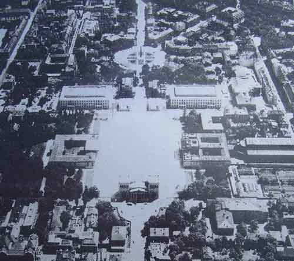
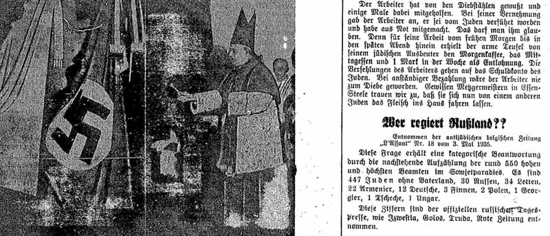
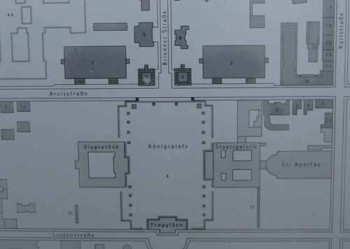

<!DOCTYPE HTML PUBLIC "-//W3C//DTD HTML 4.01 Transitional//EN" "http://www.w3.org/TR/html4/loose.dtd">
<html>

<head><title>Swastika Blessing Investigation</title>
<link rel="stylesheet" type="text/css" href="imystyles.css">
</head>

<body><font size="5"><h2 align="left">Part II</h2><hr align="left" width="200" noshade>

<h3>Notes to Chapter 8. Further Interaction Between Catholic Authority and Nazism, 1921-1924</h3>

<a name="ii402"></a><p><u>growth</u> of Nazi Party:  These numbers are taken from Ian Kershaw, <em>Hitler, 1889-1936: Hubris</em> (2000), p.149.  The size of the Nazi Party in Munich as of 1921 was “still insignificant compared with the established socialist and Catholic parties.”  <em>Hubris</em>, p.153.</p><br>

<a name="ii403"></a><p><u>letter</u>:  The source is the <em>Berliner Tageblatt</em> [Berlin Daily News] of June 11, 1921, reprinted in Hans Lamm, ed., <em>Von Juden in München</em> [From Jews in Munich] (1958), pp. 306-309 (editor’s note states that this letter was written shortly before the assassination of Independent Socialist Gareis; Karl Gareis, the leader of the Independent Socialists in the Bavarian <em>Landtag</em>, was murdered on June 9, 1921).  Original German:
<blockquote>Deutschvölkische Ausschreitungen sind zurzeit in Bayern und insbesondere in München an der Tagesordnung... In den jüngsten Tagen prangten ausserdem an allen Strassenecken Münchens grosse, mit dem Hakenkreuz gezierte Plakate ... Insoweit in diesen Plakaten die Forderung des Ausschlusses der Juden vom aktien und passive Wahlrecht, von den Universitäten und von der Presse aufgestellt wurde, mögen derartige Krause Phantasien in der grossen Hitze, die in diesem Sommer besonders früh in Bayern eingesetzt hat, ihre pathologische Begründung finden... Es ist uns nicht unbekannt, dass insbesondere der bayerische Handels- und Finanzminister sich des Ernstes und der Tragweite der Sachlage wohl bewusst sind, dass der Ministerrat sich erst in den jüngsten Tagen wieder mit diesen Dingen beschäftigte und dass auch der bayerische Staatssekretär des Innern, Herr Dr. Schweyer, bei jeder sich bietenden Gelegenheit innerhalb und ausserhalb des Parlaments diese Exzesse antisemitischer Verhetzung auf das schärfste verurteilt.  Auch der Führer der Demokraten, Dr. Dirr, hat erst jüngsthin im Landtag der Entrüstung seiner Partie über den verhetzenden Ton der von der Polizeidirektion München gebilligten Plakate entschiedenen Ausdruck gegeben.  Aber die eigentlichen politischen Führer der Bayerischen Volkspartei, die Herren Held, Wohlmuth, Knilling, Giehrl, Stang usw., haben sich wenigstens im Landtag bei Besprechung dieser Dinge bisher in tiefes Schweigen gehüllt.</blockquote>

<h4>Attacks on Zionism</h4>

<a name="ii404"></a><p><u>article</u>:  “La Genesi dei Gravi Disordini,” <em>L’Osservatore Romano</em>, May 8, 1921.  The article, and the Arab attack on the Jewish workers' May Day parade, are described in Sergio Minerbi, <em>The Vatican and Zionism</em> (1990), p.148.</p><br>

<a name="ii406"></a><p><u>speech</u>:  Pope Benedict XV’s speech was published in <em>L’Osservatore Romano</em> and, in English translation, in <em>The Tablet</em> on June 25, 1921.  The text reflects a concern for Judea and Palestine generally, as the land “consecrated by the Divine Redeemer Himself in His mortal life” – not just for the Holy Places narrowly construed such as the Holy Sepulchre in Jerusalem, the Church of the Nativity in Bethlehem, the Church of the Annunciation in Nazareth, and the places of the Sermon on the Mount and Primacy of Peter along the Sea of Galilee. This is the text published in <em>The Tablet</em>:
<blockquote>There are two main reasons why for the second time this year We have called you together:  to add illustrious prelates to your Sacred College and to give with full solemnity new Pastors to the widowed churches.  But, following old custom, We wish first to speak to you on several important matters connected with the government of the Universal Church.  You will certainly remember that in the Secret Consistory of March 10, 1919, We showed Our great anxiety regarding the trend of events following the war in Palestine, land so dear to Us, as to all Christians, because consecrated by the Divine Redeemer Himself in His mortal life.  And now, far from diminishing, that anxiety is increasing every day.  Indeed, if at that time We lamented the iniquitous activity in Palestine of non-Catholic sects which are pleased to glory in the name of Christian, to-day, too, We must repeat that lament, seeing how they are carrying on that work with even greater activity, themselves possessing abundant means and cleverly profiting by the misery in which the inhabitants of the country were plunged after the war.  On Our side We have left nothing undone to assist those afflicted people, giving new impulse or new life to various charitable institutions, and We shall not cease to do so as long as the power remains in Us; but We are unable to give them help adequate to their needs for the special reason that out of the means given Us by Divine Providence We have to meet the cry of suffering that reaches the Apostolic See from every part of the world.  Thus, to Our unutterable sorrow, We have to look on at the progressive spiritual ruin of souls beloved by Us, for whose salvation men of Apostolic zeal have worked, first among them the children of the Seraphic Patriarch of Assisi.  And further, when by means of the Allied troops the Christians returned in possession of the Holy Places, with all Our heart We joined in the general rejoicing of all good men.  But with Our joy was also the fear, expressed in the Consistorial Allocution alluded to above, lest as a consequence of that great and glorious event the Jews might attain a position of preponderance and privilege in Palestine.  If We are to judge from the present condition of affairs what We feared has come to pass.  It is well known, in fact, that the situation of the Christians in Palestine has not only not improved but has even become worse through new civil ordinances put in force there which tend – if not in the intentions of those responsible for them, certainly, however, in fact – to turn Christianity out of the positions it has occupied up to now and to put Jews in its place.  And again We cannot but deplore the intense activity which is being shown by many to take away the sacred character of the Holy Places, transforming them into pleasure resorts with every worldly attraction.  That is worthy of reproof everywhere, but above all in places where at every step the holiest memories of religion are encountered.  However, inasmuch as the situation in Palestine is not yet definitely regulated, We now raise Our voice that, when the time comes to establish there a permanent condition of things, to the Catholic Church and to all Christians shall be assured the inalienable rights they hold.  Certainly We have no desire that any damage shall be done to the rights of the Jewish element; what We mean is that they must in no way be put above the just rights of the Christians.  And to this end We warmly urge all the Governments of Christian nations, even if not Catholic, to bring vigilant pressure to bear on the League of Nations which, it is commonly said, is to consider and adjudicate on the English Mandate in Palestine.  If We turn Our eyes from Palestine to Europe, there, too, is seen an unhappy spectacle.  Recent events, as you know well, Venerable Brethren, have shown all too clearly that disagreements and competitions between the peoples have not ceased, and that if indeed the flame of war has been almost quenched, the iniquitous spirit of it remains, nevertheless.  Wherefore, renewing once again Our urgent appeal to all Heads of Governments of good will, We ask that by their counsel and instance they may bring about that the peoples, each and every one, may put aside enmity one to another, and after discussion in the spirit of Christian charity may resolve all such differences as still exist between them, and so may come to troubled Europe the peace which all long for.  But, amidst so many great anxieties, the Divine Redeemer has still deigned to grant His Spouse the Church and His Vicar on Earth reasons for some consolation and comfort.  You have seen, Venerable Brethren, immediately after the close of the terrible war, almost all the civil nations which had no diplomatic relations with Us hastening to Us of their own free will to put before Us their desire to have them, feeling sure that they would gain much advantage thereby.  And We, faithful to the traditions of this Apostolic See and in conformity with Catholic teaching, which seeks agreement between the two powers for the common good of State and Church, willingly agreed to such desire, without, however, compromising any of those principles which are inviolable for Us.  Even France, which for over sixteen years had been officially separated from the embrace of the Church, has desired to regain with the Vicar of Christ the position which she occupied for centuries, and her return has brought to Us and to all good men pleasure equal to the sorrow caused by her departure.  And so what seemed a short time ago most unlikely, considering the unhappy conditions of the times, is now, thanks to Divine Providence, an accomplished fact:  that is to say – where an unhappy condition of things does not exist as an obstacle to the necessary liberty and independence of the Roman Pontiff – nearly all the civil States of the world have diplomatic relations with this Apostolic See, and We pray to God fervently that this mutual co-operation may be in fact, as it should be by right, instrumental of all salutary prosperity for the Church and for the single States.</blockquote>
<p>Source:  <em>The Tablet</em>, June 25, 1921, vol. 138, pp. 821-822.</p><br>  

<a name="ii407"></a><p><u>stated</u>: Reports of British officials and others at this time, concerning Cardinal Gasparri's and the Vatican’s determined opposition to a Jewish government or administration in Palestine, are summarized by Sergio Minerbi in <em>The Vatican and Zionism</em> (1990), pp. 151-162.</p>

<h4>The Elimination of Matthias Erzberger</h4>

<a name="ii408"></a><p><u>adjudged</u>:  <em>Organisation Consul</em> revived a medieval German tradition of the <em>Feme</em>, a type of court or quasi-judicial proceeding, in which sentence was passed upon those guilty of <em>Hochverrat</em>, i.e., high treason.  The Bavarian Historical Lexicon states that Feme killings in the early 1920s “denoted a form of secret vigilante justice in which members of nationalist organizations killed supposed traitors …”  <em>Historisches Lexikon Bayerns</em>, “Fememorde,” online http://www.historisches-lexikon-bayerns.de/artikel/artikel_44326.  While the <em>Feme</em> session condemning Erzberger for treason was probably held in Bavaria, the murder took place further west in Baden, where Erzberger was vacationing with his family.  The murderers gained refuge in Bavaria and thence safe passage out of the country with the help of the Bavarian police.  Nigel Jones, <em>The Birth of the Nazis</em> (2004), pp. 210-211, 216; Klaus Epstein, <em>Matthias Erzberger and the Dilemma of German Democracy</em> (1959), p.389.  A <em>Feme</em> session two months earlier had led to the assassination in Munich of Bavarian <em>Landtag</em> delegate Karl Gareis.</p><br>

<a name="ii410"></a><p><u>tribute</u>:  “The Political Murder of Erzberger” 
   <blockquote>Even if we Social Democrats often stood in sharp opposition to Erzberger’s politics, we must nevertheless acknowledge that he was a political opponent who strictly avoided personal attacks in all disputes about substantive issues.  A skillful debater, whose skill developed over the course of the years, he also had at his disposal, as a typical South German, a wealth of humor and wit ... 
   <p>By authoring the Peace Resolution of July 1917, he brought upon himself the deadly hatred of the war instigators and warmongers ...
   <p>After the terrible collapse, Erzberger, who had become State Secretary and Reich Minister without Portfolio, was entrusted with the thankless task of conducting the Armistice negotiations as the representative of Germany.  As thanks for his sincere efforts, he was branded as a “Traitor to the Fatherland” in contradiction of all historical truth.  When the National Assembly, of which he was a member, formed the Reich Cabinet, Erzberger was appointed Reich Finance Minister...</blockquote>
<p>Source: <em>Münchener Post</em>, August 27-28, 1921, page one.  German original:
<blockquote>Wenn wir Sozialdemokraten auch oft in scharfen Gegensatze zu Erzbergers Politik standen, so müssen wir doch anerkennen, dass er ein politischer Gegner war, der bei aller sachlichen Schärfe persönliche Verletzungen strenge vermied.  Ein gewandter Debatter, zu dem er sich im Laufe der Jahre entwickelt hatte, verfügte er als Süddeutscher auch über eine reiche Humor und Witz...
<p>So wurde er mit der Urheber der Friedensresolution vom Juli 1917, die ihm den tödlichen Hass der Kriegstreiber und Kriegshetzer zuzog, die sich um die mit den Millionen der Kriegsindustrie gegründete Vaterlandspartei sammelten.  Nach dem furchtbaren Zusammenbruche wurde Erzberger, der inzwischen Staatssekretär und Reichsminister ohne Portefeuille geworden war, mit der undankbaren Aufgabe betraut, die Waffenstillstandsverhandlungen als Vertreter Deutschlands zu führen.  Zum Dank für seine redlichen Bemühungen wurde er wider alle geschichtliche Wahrheit zum “Vaterlandsverräter” gestempelt.  Als die Nationalversammlung, deren Mitglied er ebenfalls war, das Reichskabinett bildete, wurde Erzberger als Reichsfinanzminister bestimmt.</blockquote>
   <p>Erzberger’s leading English language biographer, Klaus Epstein, calls Erzberger a “martyr to the German Republic.”  (p.390)  Even while recognizing Erzberger’s shortcomings, weaknesses and mistakes, and giving full coverage to the worst accusations against him, Epstein paints a picture of one of the more admirable politicians to be found in any country at any time.  Erzberger’s achievements for German democracy are all the more remarkable in light of his humble origins and adherence to a faith that was considered disqualifying for high German office during the first two decades of his political career.
   <p>Erzberger was not the first Catholic to attain high office in Germany.  That distinction goes to Count Georg von Hertling, the longtime Prime Minister of Bavaria under the Wittelsbach monarchy, who became Chancellor of Germany in 1917.  But Hertling’s only significant role in his eleven months in office was to yield, in all major decisions, to the overpowering military figures of Hindenburg and Ludendorff, with disastrous results for Germany as their plans for victory proved illusory.  Erzberger, by contrast, not only played a profoundly influential role in a short space of time, but pioneered concepts of Christian Democracy that resurfaced in Germany after World War II under another Catholic politician, Konrad Adenauer.
   <p>From a specifically Catholic standpoint, Erzberger stands out in even bolder relief.  Despite working 16-hour days routinely, he found time to attend daily mass.  Epstein describes Erzberger's calm in the face of death during his final months, when the hate campaign against him prompted an unsuccessful assassination attempt and made the next attempt just a matter of time:  “His whole view of life had always been deeply theocentric, and his religious convictions deprived death of most of its terrors.” (p.384)  In the midst of a highly pragmatic political career with many twists and turns of policy and position, he remained guided throughout by concepts of social justice, human dignity, and the common good of his people. (pp. 390-398)</p><br>

<a name="ii411"></a><p><u>rejoiced</u> openly:  The <em>Völkisch Observer</em> gave Erzberger’s death a front page banner headline and proceeded to dance on his grave.  Beginning with a statement that “our Revolution was the work of Jews and schoolmasters,” the Nazi paper concluded with these words:  “... as quick as lightning, avenging fate tossed the schoolmaster soul of Matthias Erzberger back into the deep.  He perished for his unscrupulous conceit and nothing else; those who executed him were only the incidental cause.   That all the foul newspapers are lamenting his death like that of a genius completes the picture.  He was a scoundrel.”  <em> Völkischer Beobachter</em>, September 1, 1921, page one.
   <p>On September 14, 1921, the <em>Völkisch Observer</em> followed up with a front page article ridiculing the idea of calling Erberger a martyr.  Under the headline “Treason,” the editor of the Nazi paper claimed to be a true representative of Catholicism, as compared to Erzberger and German Chancellor Joseph Wirth, whom he accused of abusing the name of Catholic and making common cause with Jews in the Weimar Republic.</p><br>

<a name="ii412"></a><p><u>formidable</u>:  It was in June 1921, two months before he was murdered, that Erzberger announced to Center Party leaders his decision to return to political life.  He had a clear path to leadership of the Center Party and excellent prospects of becoming Reich Chancellor, as successive Center Party leaders did during the 1920s.   Klaus Epstein, <em>Matthias Erzberger and the Dilemma of German Democracy</em> (1959), pp. 382-383.
   <p>As an advocate of democracy and opponent of antisemitism, Erzberger was a formidable figure.  His tireless drive, insouciance about making enemies, and optimistic impulsiveness are described in detail by historian Klaus Epstein.  Erzberger’s working relationship with Pope Benedict XV (1914-1922) during World War One, moreover, gave him a unique potential for a layman to go over the heads of Jew-baiting Catholic Bishops in Germany – whether or not such an effort would have succeeded or failed.  That relationship included personal meetings with the Pope during the war and efforts on his behalf to regain some form of temporal sovereignty for the Papacy.  Indeed, Epstein says the fruitless effort to regain such sovereignty for Pope Benedict was the “single diplomatic project closest to Erzberger’s heart throughout the war.”  <em>Matthias Erzberger and the Dilemma of German Democracy</em>, p.144.  See also Erzberger’s chapter on the “Roman Question” in his memoirs, <em>Erlebnisse im Weltkrieg</em> [Experiences in the World War] (1920).
   <p>Erzberger’s relations with the highest Catholic authorities in Bavaria may have soured by 1920.  According to German historian Gerhard Besier, Vatican Archive documents reveal Nuncio Pacelli’s alarmed reaction in 1920 to disclosures Erzberger included in a preliminary draft of his memoirs. <em>The Holy See and Hitler’s Germany</em> (2007), pp. 13-14.  Allen Dulles’s report from Munich in 1920 stated that the reason for the splitting off of the Bavarian People’s Party from the Catholic Center Party was “as a protest against the policy of Erzberger and the tendencies in the Centre Party to a centralized rather than a federalized state.”  Dulles, “Report of the Present Conditions in Bavaria,” April 10, 1920, page 4, U.S. State Dept. files, U.S. National Archive Records Administration, M336, Roll 15. 
   <p>A revealing view of Erzberger’s approach to political and social questions from a Catholic perspective can be gained by reading this characteristically optimistic and impulsive letter he sent to Archbishop Faulhaber in December 1917:   
<blockquote>Your Excellency,
  <p>Please allow me to convey the following thoughts with the request that they be subjected to a thoroughgoing examination.
  <p>At the end of the terrible World War a great Catholic renaissance will and must be initiated.  The nationalistic, egotistic, old-pagan power idea has collapsed; it plunged the countries into dire straits before the war and into a bloodbath during the war; the saying that war is the “last resort,” which the world believed for years, has been proven deceptive.  Only godly, Christian justice can be the foundation for a more favorable development of peoples in the future.  The power of war has raged for 3-1/2 years; its end, however, will be the triumph of justice.  A real hunger for the concept of justice and precepts of justice will flow through mankind.
  <p>Who should and can take this hunger into account?  Only Catholicism, which unifies authority in an auspicious way, which paves the way for true democracy, gives “a highway for all the righteous” and yet forms the foundation of all authority.  Social Democracy with its general concepts of freedom and denial of authority cannot work constructively; the execution of the Social Democratic idea has failed in agriculture and industrial production, despite the military dictatorship.  What today is called conservative party politics is not represented by the old saying: “Not majority, but authority,” rather it embraces the most open brutality that knows only oppression and ruthless power.  Protestantism, as a force of the mind and the heart, has completely collapsed in the war, has accomplished nothing for the reconciliation of peoples; it has died in its 400th anniversary year.
  <p>War, which represents lawlessness among countries, has had the natural result that lawlessness prevails also in the interior life.  The terribly true phrase of the Englishman about “moratorium of the Sermon on the Mount” needs to be expanded:  the war has made the 3rd, 5th, 6th, 7th and 8th Commandments null and void.  Humanity must be brought up anew.  As far as I can survey the situation, this moral moratorium has really worked most devastatingly among the so-called “educated circles,” in which Mammon and power have appeared most strongly in place of self-sacrifice and justice; this mania on high has obviously spread and increased as it flows down.
  <p>It has been more than 100 years since the time when world-spanning Catholicism necessarily encompassed all fields, namely the powers of the cultural and intellectual world.  New forms must be sought in order to make the old Catholic spirit alive after the war and transmittable into a hungry society.  The exhortation of our reverend Bishops has shown the way here.
  <p>Please allow me to submit the further expression of the following thoughts:
  <p>1.  As to what concerns the political organization of German Catholics, that will still be found after the war in the Center Party.  It is completely obvious that the Center will be able to take in stride a sound and just democracy.  The Peace Resolution was the pathbreaker for this.  Today, when we are preparing the way for a provisional peace with Russia on its soil and for the proclamation of the Holy Father, the Peace Resolution stands undisputed as the champion of justice.  Today millions of Catholics and Center Party voters will be grateful that the Party became the pathbreaker of inviolable justice through the Resolution of July 19th.  What needs to be adjusted in the Center Party, if I may be allowed, is something that I will explain to Your Excellency verbally the next time I am in Munich.
  <p>2.  For the academic endeavors of German Catholics there is the Görres Society, which I promise will have a great future after the war, especially since its Chairman has now become Reich Chancellor [Georg von Hertling].  Now, when so much money is at hand, there must be consideration of a direct increase in capital for the Görres Society.
  <p>3.  The People’s Association for Catholic Germany will take public education in hand, after as before.  It has proven itself during the War to be very adaptable.
  <p>4.  The International Catholic Union, whose seat is in Switzerland, will render great service by the closer association of Catholics from various countries.  Now that a Group for International Law has been established in Germany, the Union has already gained a broader field of action.  It is precisely this group that has a highly promising future by representing the concept of justice.
  <p>5.  The Committee for Defense of German and Catholic Interests Overseas will also find a great field of action after the war, in making clear to other peoples the distinctive German contributions to Catholicism.
  <p>6.  What we are lacking, on account of which I turn to Your Excellency with a particular request, is:  a creative center for the cultural-intellectual world, literature, theater, etc., a center that influences all the individual organizations, leading and directing them intellectually; the center of a great Catholic renaissance.  The seat for this, in my opinion, can only be in Munich. There the royal court is Catholic, the representative of His Holiness the Pope is in Munich, the government ministers are overwhelmingly Catholic, the majority of the state population is Catholic.  The acknowledged leader is Your Excellency.  I have thought through the following for execution of the plan:
  <p>If Your Excellency would take the trouble to allow an open discussion among respected leading Catholics in cultural and intellectual life to take place, for instance, every Thursday evening in the Archbishop’s palace, then a seed would be sown that would yield hundred- or thousand-fold fruit.  A short lecture could sometimes start off the discussion and have the effect of clarifying and deepening the exchange.  Quite soon there would come to these conferences not only Munichers and Bavarians, but men from the entire German Reich, at Your Excellency’s invitation.  I am strongly convinced that similar conferences could soon be introduced in most of the episcopal sees.  An exchange of ideas and speakers would occur spontaneously.  Thus we would have focal points for intellectual, religious and cultural life.  Foreigners and non-Catholics would ask to be allowed into these conferences.  The blessing of such an institution cannot even be imagined today.  It is the introduction of the great Catholic renaissance. 
  <p>Since I have only put these thoughts to paper briefly, may I be allowed to bring them before Your Excellency in more detail verbally the next time I am in Munich.
  <p>With sincerest best wishes for the New Year and with the expression of my highest esteem, I have the honor to be,
<p>Your Excellency’s entirely devoted,
<p>/s/ M. Erzberger
<p>Member of the Reich Parliament</blockquote>
<p>Source:  Erzberger to Faulhaber, December 27, 1917, Munich Archdiocese Archive, <em>Nachlass Faulhaber</em>, no. 7228, reprinted in L. Volk, ed., <em>Akten Kardinal Michael von Faulhabers, 1917-1945</em> [<em>Faulhaber Papers</em>] (1975), vol.1, pp. 24-26.  The <em>Faulhaber Papers</em> do not include a reply from Faulhaber to Erzberger’s letter.</p><br>

<a name="ii413"></a><p><u>14-day publication ban</u>:  This was described on page one of the <em>Völkisch Observer</em>, alongside an article denouncing Reich Chancellor Wirth as unworthy to bear the name Catholic, on September 14, 1921, when the <em>Observer</em> resumed publication.</p><br>

<a name="ii414"></a><p><u>letters</u>:   Disappointment earlier in the year was reflected in a March 5, 1921 letter from Pacelli to Baron von Ritter zu Groenesteyn:
<blockquote>March 5, 1921, Pacelli to Ritter
<p>“... In what concerns the Concordat negotiations, it is well known to you that I have done everything – directly and indirectly – to achieve the most expeditious conclusion possible.  Unfortunately the steps undertaken up to now have not yet produced the desired success.  But <em>Kultusminister</em> [Minister of Education and Religion] Matt has promised to move things forward, so we have hope ...”</blockquote>
   <p>On June 21, 1921 Pacelli wrote again to Ritter, saying that he had secured Kultusminister Matt’s agreement to an outline for the Vatican-Bavaria Concordat, and that Matt would follow up with more material.
   <p>On September 6, 1921, Pacelli’s letter to Ritter credited Matt with moving matters along fast toward a satisfactory concluding of the concordat negotiations.
   <p>On November 15, 1921, a letter from Pacelli to Ritter reported that the Reich Chancellor, in a personal meeting, agreed to commence Reich Concordat negotiations.
<p>Source:  <em>Ritter Papers</em>, folder no. 63.</p><br>

<a name="ii415"></a><p><u>reported</u>:  Pacelli to Ritter, December 11, 1921, Strictly Confidential !
<blockquote>A very clumsy step (I regret to have to say it), in which even one of our friends apparently participated, has aroused the most acute concern on the second floor here toward a separate treaty, as you have become aware...</blockquote>
<p>German original:  
<blockquote>Streng Vertraulich!
<p>…Ein (ich bedaure das sagen zu müssen) sehr ungeschickter Schritt, an welchem auch einer unserer Freunde teilgenommen haben soll, hat dort im 1. Stock gegen einen separaten Vertrag, wie Ihnen bekannt geworden ist, schwerste Sorge erweckt…</blockquote>
<p>Source:  <em>Ritter Papers</em>, folder no. 63.</p><br>

<h4>Under a New Pope, Concordat Efforts Intensify</h4>

<a name="ii416"></a><p><u>letter</u>:  The original of the letter is in the <em>Bayerisches Hauptstaatsarchiv</em> [Bavarian Main State Archive] in Munich, in folder no. 63 of the <em>Ritter Papers</em> [<em>Nachlass Ritter</em>].  The source of the April 5, 1922 letter from Bishop Mergel to Cardinal Faulhaber is Munich Archdiocese Archive, <em>Nachlass Faulhaber</em>, no. 4340, reprinted in Volk, <em>Faulhaber Papers</em>, vol.1, p.245.</p><br>

<h4>Vatican Policy Encounters Setbacks as to Concordats and Zionism</h4>

<a name="ii417"></a><p><u>letters</u>:  The source of the April 5, 1922 letter from Bishop Mergel to Cardinal Faulhaber is Munich Archdiocese Archive, <em>Nachlass Faulhaber</em>, no. 4340, reprinted in Volk, <em>Faulhaber Papers</em>, vol.1, p.245.  The Pacelli-Ritter correspondence is found in the Bavarian Main State Archive, <em>Nachlass Ritter</em>, folder no. 63.</p><br>
  
<a name="ii418"></a><p><u>article</u>:  "Zionism According to the Opinions of the Jews"

<blockquote>Contents:  “The old aspirations of the Jews resuscitated by new propaganda.  A conference in Rome on Zionism.  Reasons, discussions. - I.  Precursors of the idea.  Political Zionism proposed by Theodor Herzl. - II. Early enthusiasms: Congress of Basel: diplomatic actions. - III.  Financial difficulties: internal contradictions.  The proposal for Uganda.  Death of Herzl. - IV. New colonial location.  The war opens new hopes. The declaration of the English government. - V. The British Mandate for Palestine.  Immigration: Jewish culture. - VI. Financial assistance: Jewish hopes and visions.”

<p>For nineteen centuries the people of Israel, scattered among the nations of the world, upon the vigil of the feast of Passover - 14 Nisan - have celebrated their traditional rites in all places of the world "standing up as one man at the same time, and taking in their hands the cup of blessing, repeating three times the sacred phrase, <em>Next year in Jerusalem!</em>" - Every day, at the hour of prayer, it is the custom of the sons of Judah to turn towards Zion with yearning, and one of them – a convert and a priest, Rev. Giuseppe Lémann – depicted with fraternal pity the love with which certain of his former co-religionists, too poor and too advanced in years to undertake the sacred pilgrimage to see with their own eyes the Holy City and kiss its walls, instead have sent to them little sachets filled with the earth where their fathers sleep and, at the end of their lives, advise their own sons to bury them with this earth upon their heart.  But those who are more fortunate can visit the city and find asylum there, where they gather every Friday toward evening around the ruins of the ancient temple, hugging and kissing convulsively, repeating together, between sobs, the lamentations of Jeremiah, crying: "Have mercy, Lord, and gather the sons of Jerusalem; make haste, O savior of Zion!  Act soon to restore the kingdom of David!  Comfort those who mourn over Jerusalem."
<p>But for nineteen centuries, until recently, those sobs and lamentations had no answer but the frightful echo of a curse.  "May his blood be upon us and upon our children!" - Today it is said that things are different.  A few weeks ago we even heard in Rome a voice that wanted to emulate that of the prophets of this people, publishing the news that from now on the Jew will no longer be forced to wander the earth: the roads of Palestine are reopened and the sons of Israel are going to rush frantically, not as they were once guided by the wonders of the hand of the Lord, but by the simple escort of the Jewish Colonial Association under the guarantee of England.  The difference is not a small one.  The Jews feel, and the proponents of this Jewish revival are convinced, that under the name of Zionism they would like to restore to Israel its national unity on Palestinian soil: therefore indeed they turned all their powers of negotiation to an endeavor to obtain the assent and cooperation of governments, and today we see the head of the Jewish Zionists, Chaim Weizmann, trying even among the Italians to arouse sympathy for the cause of his political and religious ideals.
   <p>If we are not mistaken, the reception of his propaganda in Rome must have encountered the indifference of Italian public opinion, plagued by other problems domestically upon which the salvation of the country turns.  And it is also known that, despite the twists and turns of diplomacy, there are more or less open oppositions and clashes against Zionist pretensions from many other nations, as well as from irate followers of the synagogue, among whom the new political movement for Palestine has already been a cause of lengthy quarrels.  Our readers will not have forgotten how the Roman Pontiff intervened with his august words to remember the rights of Christians over the places of Palestine which were consecrated by the presence of the divine redeemer:  and all Catholics must take to heart the protection of the holy places that has always been for their fathers a tradition of faith and honor.
  <p> Zionism, therefore, gives rise to a conflict of political and religious interests:  and we want to explicate the events and their various aspects in order to administer to our readers, who have requested this, the necessary arguments to form a dispassionate judgment.
<p>I.
  <p>The Zionist idea is not new:  It is easy to recall the names of many pseudo prophets who, sustaining here and there the old messianic hope with the name of Jerusalem, attempted to agitate in the depths of the ghetto where the Jews crowded who were despised by all the nations. Also a Huguenot, Isaac La Peyrère, probably of Jewish origin, wrote in the 1600s about the return of the Jews and pleaded with Louis XIII to liberate, like a modern day Cyrus, the tribes of Israel from slavery and rebuild the temple of the Lord.  In the past century, when wars of independence of the various peoples of Europe exalted the idea of nationalism in contemporary politics, that idea was also applied in favor of the Jewish people, and in his <em>Nuova Questione d’Oriente</em> [New Question of the Middle East], Ernest Lajaranne, a relative of Napoleon III, proposed the redemption of Palestine from the hands of the Turk, and the establishment of a Jewish government for the territory from Suez to Smyrna, as a guard post for the route to the Indies and a mediator between the East and the West.  The same proposal was put forward by Moses Hess, a friend of Karl Marx, published in his Rome and Jerusalem:  the same as Moses Montefiore, moreover, who presented Mohammed-Ali, the Viceroy of Egypt, with a program designed to carry into effect the proposal:  and from the year 1876 a society was founded to bring Jewish settlers to the banks of the Jordan.
   <p>Thus far, however, the movement appeared to be limited for the most part to hypotheses and systems of politicians and party leaders.  For these aspirations to become popular, it took a man endowed with the magical power of speech, with that strength of persuasion that irresistibly attracts the multitude.  Theodor Herzl, born in Budapest of a “Sephardic” family (footnote: The Jews are divided historically into two main groups:  the Sephardim and the Ashkenazim.  The latter bear the name of Ashkenaz, a descendant of Japheth; the former bear the name of Sepharad, the Biblical name of a region that is believed to be Spain.  The Sephardim are still considered to be an aristocratic caste), with a degree in law at Vienna, then working in journalism and writing with the <em>Neue Freie Presse</em> [New Free Press]; from his youth he had been wounded in his pride to see the inferior condition in which the Jew was held, a fact signaling suspicion and aversion in the midst of the Christian nations.  Later, in 1881, the prosecutions for the assassination of Czar Alexander II revealed the portion among the Jewish students affiliated with nihilistic sects:  based on that, there followed violent repressions by the police, a more severe political and religious regime, especially through the work of Chief Procurator Pobedonostsev, and a stirring up of popular passions against this unpopular lineage, which here and there signaled bloody reprisals and forced them to escape from the universal hostility and wander in misery along the frontiers of eastern Europe or emigrate to the shores of Palestine.  In the same years a movement less brutal but no less ardent in antisemitic hatred spread also among the nations of western Europe, especially in France with the Dreyfus case, and in Austria-Hungary with the founding of the Christian Social Party under Lueger and Wieskirchner against the danger of Jewish interference in the orders of the State.
   <p>This intolerable state of affairs moved Dr. Herzl to disdainful and compassionate reflections, which concentrated upon a practical conclusion:  the necessity of returning to the children of Israel a free and independent homeland.  This was exactly the thesis he put forth in a writing which later became the code of Zionism:  <em>The Jewish State: Proposal for a Modern Solution of the Jewish Question</em> (1896).  The book begins by positing the existence of a “Jewish question” which it would be futile to deny:  “it arises in every country where Jews attain some importance.”  What is it worth, he says, to turn to nations that are not persecuting us?  Our appearance there will cause persecution.  The Jewish question is neither an economic nor religious issue, although it takes on now one appearance, now another:  it is a question of nationality:  and to resolve it, we first of all make it a worldwide question and place the matter before the Great Powers.”  Persecution has increasingly awakened the strong ethnic character of this nation that is distinguished in the midst of all the others and does not assimilate with them.  “The Jews are a unique people”:  If this people is given sovereignty over a territory proportionate to its legitimate interests, the Jewish question will be resolved.  The territory of Palestine would be most suitable, where the memories of the national tradition reside.  A society representing the Israelite people would collect the funds necessary to regulate immigration and implement the administration and the laws of the Jewish community under the form of an aristocratic republic, because, in the opinion of Herzl, ancient theocracy no longer corresponds to modern ideas.  
   <p>“If the Sultan cedes Palestine to us,” he continues, “there would be enough to promise that in short order we would reset the finances of Turkey…  We would form a neutral State in continuing contact with a Europe that would guarantee our existence.  As for the Holy Places, they would be under a form of extra-territoriality that would accommodate all the interests.  We would form the honor guard within the sanctuary and would stand up for our existence with the fulfillment of this duty which would be the pledge of resolving a question that has dragged on for 18 centuries of cruel suffering.”
<p>II.
   <p>This little book caused an extraordinary commotion among all, but in the ghettos of Russia, Poland, Finland, Romania, it aroused a real delirium.  The "mirage" of Jerusalem, the hope of seeing Zion again and the rebuilding of the temple, gave rise to enthusiasm in those wretched hordes at the mercy of the terrors of the "pogroms" that were spreading destruction and death:  it was salvation, liberty, reconquest of the homeland.  Theodor Herzl was the idol of those multitudes, who saw him as a prophet, a commander who would take care of oppression and slavery by leading them to the land of their fathers.  The power of the impulse with which he gave new life to the Zionism of their ancestors, of the “Friends of Zion,” of the “Children of Zion” and other similar societies, derived from the audacity with which he, instead of a timid action, hidden and disguised behind the veil of private philanthropy, affirmed openly a political program, nationalistic, imposed on the public debate and the competition of public powers.  And because of the manifest nationalistic character of his work, his first concern was to convene a worldwide Zionist congress, pan-Judaic, from which his mission and his program would receive authenticity and legitimacy.  The venue of the congress was Basel, where for the first time after so many centuries, the people of Israel saw the dispersed tribes meeting, with representatives from all points of the globe.  Zionism was no longer just an internal matter of Jewish life, but entered into the ambit of international life.  Above the building of the congress, from August 24 to 28, 1897, waved a Zionist flag:  on a white background, two bands of turquoise that frame two overlapping triangles forming a six-pointed star.  From that time onward, Judah had its assembly every year, its week-long parliament.  At the one in 1901 there were 200 delegates, coming from Manchuria, from Siberia, from America, from Lake Chad, from southern Africa, from Egypt, and from all the countries of Europe.  
   <p>The voice that dominated those congresses was naturally that of Herzl, hailed as the “prince of the exile.”  Elected president of the permanent committee for action, he immediately put himself to work on what was entrusted to him by the body, to “create for the Jewish people a protected refuge guaranteed under international law.”  And because he knew that in the business world, everything is assessed by its value in cash, the first step he took was the establishment of a Jewish Colonial Bank, which was to be the indispensable financial instrument for Zionist activity.  Thus, with the practical intuition that is traditional among his people, he resolved to make his case to the German Kaiser and win him over to the Zionist cause.  Kaiser Wilhelm II had recently taken over the reins of the Empire, following the dismissal of Bismarck, and was keenly occupied with solving the problems that were agitating the Empire.  He undertook then a trip to the Holy Land (1898):  Dr. Herzl found a way to meet with him near the gates of Jerusalem.  The residents of the Jewish Quarter had erected a triumphal arch with the legend, “Blessed is he who comes in the name of the Lord,” in German and in Hebrew:  two old rabbis, wrapped in ritual cloaks, carried the heavy tablets of the law, and Jewish school children sang hymns to the Emperor about the Messiah.  Dr. Herzl, as chairman of the action committee, directed a greeting to the imperial pilgrim, asking him, in the name of the friendship that ran along with the Sultan, of wanting to second with his patronage the actualization of the Zionist idea:  and the German gentleman showed his agreement and assented, surely seeing an opportunity to extend German influence in the Middle East.  
<p>III.
   <p>But the hopes and enthusiasms did not last long.  When the Zionist committee turned to Sultan Abdul-Hamid, there were many words and great courtesies, but the price demanded was even greater:  50 million Francs:  the Colonial Bank had only collected five, donated by the little people.  The rich Jews, the millionaires of Jewish finance, had only given a mite; the bankers Hirsch, Rothschild, had rejected Herzl’s idea as utopian.  For the greater part of the merchants and usurers, the restoration of Jewish life, of Talmudic traditions, of the glory of Zion, left them indifferent:  they had accepted the country where they had found prosperity, and if they had a concern, it was to conceal the traces of their origin.  The Zionist movement could harm the smooth running of business by provoking antisemitism:  thus it was annoying.  It is indeed a rather curious thing to see Zionism opposed by the first among the masters of Israel, such as the Chief Rabbi of Vienna, Güdemann, and the one in London, Adler:  The union of German rabbis deemed it necessary to publish a protest, accusing Zionism of being in opposition to the Messianic promises:  the Conference of American Rabbis explained their refusal instead by the ample liberty they enjoyed, which could not be greater even in the purported Jewish State to be created.  In essence, the pride of the well-fed rabbinate of the rich centers of European countries rebelled against the fanaticism of a man unknown to the synagogue, who was lifting the crowds of the eastern ghettos.  The damage would have been minimal if Theodor Herzl had succeeded in laying a foundation with his diplomatic negotiations:  but Wilhelm II, after the initial courtesies, dissuaded perhaps by other councilors, showed no more sign of sympathy.  Then, with the Sultan, in addition to the difficulty of the price, there was a greater difficulty of legal guarantees to be established for the possession of territories conceded to the new State.  Things took a long time, but it quickly became clear that the Turks did not intend to cede any of their sovereignty:  and after a thousand verbal twists and turns, the concessions were reduced to this:  that with the payment of two million pounds sterling, the Jews could acquire the right to found colonies distributed in various parts of the empire other than Palestine, but without any legal links among them.  It was the reversal of Zionist aspirations.
   <p>Herzl’s entire work was in danger of falling apart.  He tried to sustain strong support at least for the purpose of an independent State, even outside Palestine:  and he was inclined to accept territories in Uganda offered by England.  When he made this proposal to the sixth congress (1903), the more ardent Zionists, seeing themselves confined to a savage land on the African continent, after such hopes of a country, indulged in a scene of tragic despair.  To restore calm to the agitated assembly, Herzl closed off the discussion by repeating, with raised hand, the solemn formula of the oath:  “If I should renounce you, O Jerusalem,” which are the words of Psalm 136 (footnote:  <em>Si oblitus fuero tui, Jerusalem, oblivion detur dextera mea, etc.</em>, Ps. 136: 5 [“If I forget you, Jerusalem, may my right hand forget its skill …”].  After the death of Herzl, the question of Uganda was taken up again by Max Nordau, one of the Zionist leaders who succeeded upon his death:  but England revoked the offer.  Another Zionist, Zangwill, founded the Jewish Territorial Organization with the intent to accept whatever region for the new State:  Cyprus was talked about, and Argentina, and Tripoli:  the war interrupted all this.)  Turning then to seek a way to bring back his co-religionists to Palestine, which alone represented the religious ideal that could sustain a national movement among a proletariat who were tenaciously conservative of their traditions.  And to resume diplomatic negotiations, he undertook a trip to Italy, where in Rome, wanting to overcome the distrust he suspected in the opinions of Catholics toward Zionist agitation, he turned to the Vatican, asking to be granted an audience with the Supreme Pontiff, who was then Pius X, having just succeeded Leo XIII.  The audience was naturally granted with no other significance than a common act of courtesy to all visitors.  He could have greater hopes in the support of Russia, which would have favored Zionism to get rid of those unwanted guests who infested its southern provinces and were the cause of continual troubles:  and he negotiated at St. Petersburg with Minister Plehve, requesting support to obtain optimal terms from Turkey, when he died on July 3, 1904.
<p>IV.
   <p>It might be thought that with the passing of Herzl the entire machinery that he had architected with great difficulty would be ruined: but this was not the case. The nostalgia for Palestine had by now taken control of the proletarian crowds of the synagogue: but disheartened by the bitter disappointments of Herzl's political initiatives, which had sought to realize the kingdom of David in international public law, the Zionists, following old advice, returned to the system of private immigration already initiated by Rothschild, adopting a course to succeed silently and securely by the usual artifices of which the traditions of this race have made them masters. Expert emissaries had the means to purchase large properties in the country.  Setting foot at a point that was convenient to the ends, waiting for the propitious occasion, for example, a year of drought or bad weather, when the crops failed, so that the Arabs did not have much to pay: they offered a loan then against a mortgage of 200 per cent on the territory of an entire village, which in Palestine is an indivisible property: and at the end of the year the Arabs, insolvent, were obliged to cede all at that price.  Entire villages were expropriated in this manner in short order, under the umbrella of the Alliance Israelite, with the support of the "English Palestine Company," and then again with subsidies from the JCA or Jewish Colonial Association founded by Hirsch, which had a fund, it is said, of 250 million.  According to the information of the Bulletin of the Italian Geographic Society, already before the war a third of Palestine was in Jewish hands, especially in the districts of Jaffa, Tiberius, and the area surrounding Jerusalem. Certainly the new immigrants, unable or ill prepared to work the unfamiliar land, did not always receive enough yield to derive sustenance so as not to perish in misery.  But they learned from experience.  Thus there was a shrewdly expanding economic penetration via these events. 
  <p>And the events were not slow to occur.  When the great war ...
 
<p>Of these promises the first official document was the letter that the Minister of Foreign Affairs of Great Britain sent to Lord Walter Lionel Rothschild, vice president of the Zionist Federation of England. The Allied troops were about to begin a march of invasion of Judea from the south.  The British came and joined an Italian contingent.  On October 31st they occupied Bir es Seba, the former Beersheba, and prepared to assault Gaza, which they took on 7 Nov. 1917; on the 17th the Allies were in Jaffa: twenty days later they entered Jerusalem.  On the eve of these events, the 2nd of November, Balfour wrote these words:
<blockquote>Ministry of Foreign Affairs.
<p>Dear Lord Rothschild,
   <p>I have much pleasure in conveying to you, on behalf of His Majesty's Government, the following declaration of sympathy with Jewish Zionist aspirations which has been submitted to, and approved by, the Cabinet.
   <p>His Majesty's Government view with favour the establishment in Palestine of a national home for the Jewish people, and will use their best endeavours to facilitate the achievement of the object, it being clearly understood that nothing shall be done which may prejudice the civil and religious' rights of existing non-Jewish communities in Palestine, or the rights and political status enjoyed by Jews in any other country.
   <p>I should be grateful if you would bring this declaration to the knowledge of the Zionist Federation.
<p>Yours sincerely,

<p> (signed) Arthur James Balfour</blockquote>

<p>V.
   <p>France and Italy subscribed to this English declaration.  The League of Nations, noted for its Israelite affinity, took haste to confide to Great Britain the mandate over Palestine.  Among the articles of this mandate, no. 2 provides:  “The mandatory power shall organize in the country a political, administrative and economic government that will make possible the establishment of a national Jewish center (home), and develop for it autonomous governing institutions.”  No. 6 provides that:  “The administration of Palestine, shall be vigilant to respect the rights of all, shall   Jewish immigration … Jewish settlement in the lands of the State and those <em>senza coltura.</em>”  As the first commissioner of the British Government in Palestine, a Jewish Englishman, Sir Herbert Samuel, was appointed.
   <p>There was no greater occasion for the Israelite world to go wild with joy, seeing their golden dream come true and already sensing the rule of the universe in their grasp.  The <em>Univers Israélite</em> had the courtesy to explain, however, that “the universal rule of the Jews will not be oppression or exploitation of the gentiles for the profit of the Israelites:  indeed the mission of Israel is that of making humanity happy, and it is for that reason they are given the rule of the world.”  A moving mission for which the world should certainly be grateful.  But that concerns the future.  As for the present, to take advantage of the favorable dispositions of the Powers, there quickly spread among the Jewish proletariat a new ferment for the most active emigration toward Palestine.  In Jerusalem up to the 17th century there were barely 100 Jewish families:  at the rise of Zionism there were more than 15,000 Jews in the Holy City:  in 1900, it already contained 30,000.  After the events of the war, they did not cease to rush in, to spread out through the region, to regroup everywhere more strongly.  The preparation of housing, the purchases of land, and the provision of subsidies is assured by the Committee.  In addition to Jerusalem, where there are today reported numbers of already 60,000, out of 85,000 residents, there is the colony of Safed, north of the Sea of Galilee, which contained already by the outbreak of the war 25,000, of a population of 40,000.  Also Tiberius and Jaffa are two centers of great affluence and activity for the Jewish community:  in the latter, especially, a school of agriculture was just opened, which is very useful for immigrants, for whom there were already established primary schools and technical instruction.  Then the most special care is devoted by the Zionist Committee to the revival of the Hebrew language, abolishing the Yiddish dialect mixing Aramaic and Germanic, which the German influence had introduced:  and already before the last war, much favor had been aroused for the strictly Hebrew school established in the settlement of Rehoboth.  (footnote:  It is noted that at the Peace Conference, a Zionist delegate, Menachem Ussichkine, was admitted and gave a speech in Hebrew.  For several years among the Russian Jews, there was an awakening of study of the national language and it seems there were meetings in that language.  In France, a Jewish youth admitted to the exams for the Central School a year ago, had permission from the Ministry to present his work in the Hebrew language.)
   <p>Of greater importance will be an institute of Hebrew culture, a University for which the first twelve stones were laid in July 1918 on Mt. Scopus, on the north side of Jerusalem, one stone for each of the ancient tribes of Israel, so that from this intellectual center the word that is already master of the world goes out.  While the university is going up, however, the Committee decided to expand the smaller schools in the midst of the populations of the new settlements, under the auspices of the diplomatic conventions adopted by the governments of the Entente nations:  and that is how we heard Weizmann, at the conference in Rome, affirm in a somewhat Oriental phrase that “already as of now in Jewish Palestine the children know how to cry and how to play in Hebrew.”  How marvelous are these little ones!  But the Jewish babies are not capable of these things.
<p>VI.
   <p>To sustain all this movement, an appeal was made to the whole Zionist community, and their contribution was continually increasing with the hope of the coming national restoration.  This we know from <em>Les Archives Israélites</em>, that, while in 1919 the Zionist administration collected the sum of 5,552,000 Francs, in 1920 it received 9,567,000 Francs collected from 45 States, among which the foremost was naturally the United States of America.  Italy participated only in the amount of 92,000 Francs; but the Republic of Argentina contributed 918,000 Francs and Mesopotamia 621,000:  a tangible indication of the number of Jews to whom the aforesaid propaganda had been communicated in these regions, for whom there was no hope of entering Palestine themselves.  A striking peculiarity in the midst of this economic accounting was the announcement made in American newspapers of the founding of a Society in Boston to raise funds for the rebuilding of the temple in the Holy City to become once again the center of worship as the metropolis of the nation.  We do not know any other news about the society, and probably the erecting of the temple will have been judged to be somewhat premature, but the problem is unavoidable, and it certainly stirs in secret every Zionist soul, in which the thought of the restoration of the kingdom of David cannot advance separately from the glorious memories of the temple of Solomon.  It seems that the threat of evangelical prophecy casts a fearful shadow over those glories, and in spite of this, the Jew does not dare raise his voice against the voice of Christ, nor extend his hand to disturb the ruins fallen under the blow of the divine condemnation. What would the rest of the temple if God does not come down more to live there?  What would be served, moreover, by rebuilding the temple if God does not come down to dwell in it?
   <p>Instead of the temple, Israel is perhaps content with a hall for parliament:  and the vote already promulgated a decade ago by the <em>Jewish World</em> for the constitution of an International Jewish Assembly, appears to be on the way to actualization in the near-term future, since the English High Commissioner of Palestine, as announced by <em>Les Archives Israélites</em>, had already called, in March 1921, a Grand Council of seventy rabbis – the traditional number – and thirty-five laymen, to constitute a Grand Sanhedrin to which would be entrusted the Jewish religious organization in the Holy Land.  The Grand Council established, among other things, the institution of an appellate tribunal presided over by two rabbis representing the Sephardic and Ashkenazic communities and composed of eight Jews to handle cases that concern religious law.
   <p>Such are the first steps, the first tests, with which the Zionists came to organize the establishment of the Jewish State which should give their people political and national unity.  These invasions and these intentions collide with and offend other people and other rights that we will discuss in another edition.</blockquote>  
<p>Source: <em>Civiltà Cattolica</em>, May 20, 1922, vol. 2, pp. 299-312.
   <p><em>L’Osservatore Romano</em> published multiple articles on Zionism in April and May 1922, including coverage of Zionist leader Chaim Weizmann’s speech of April 4 in Rome, and articles appearing April 21, 1922 and May 4, 6 and 13, 1922.</p><br>

<a name="ii420"></a><p><u>wrote</u>:  Pacelli to Ritter, June 3, 1922, <em>Ritter Papers</em>, folder no. 63.  German original:  
   <blockquote>Mit Sehnsucht erwarte ich von dort die Instruktionen, denen ich grösste Bedeutung beimesse, weil sie mir als Richtlinien für alles Weitere dienen müssen.   Auch ich habe aus verschiedenen Symptomen die Ansicht gewonnen, dass in Rom die Schwierigkeiten nicht genugsam erkannt werden, obwohl ich nicht verfehlt habe, immer und immer wieder die Aufmerksamkeit darauf zu lenken.  Das kommt offenbar von dem bekannten guten Ruf, den das ‘Katholische Bayern’ in Rom geniesst.  Jedenfalls betrachte ich es als ein Glück, dass Seine Eminenz gerade in diesen entscheidenden Tagen in der Ewigen Stadt weilte und aufklärend wirken konnte.  Ich gebe mich übrigens keinen Illusionen hin:  Wir sind noch nicht am Ende, wie man solches dort zu glauben scheint.  Umsomehr aber werke ich für das grosse und weittragende Werk, das auch für andere Länder vorbildlich sein soll ...</blockquote><br>

<a name="ii421"></a><p><u>speech</u> by Hitler:  This speech was given at the largest indoor venue in Munich, the Zirkus Krone [Krone Circus].  The speech was published in the <em>Völkisch Observer</em> on June 24, 1922.  It is reprinted in Jäckel and Kuhn, <em>Hitler’s Writings</em>, pp. 645-646.  Kershaw comments on the significance of this speech in <em>Hubris</em> at page 245.</p><br>

<a name="ii422"></a><p><u>letter</u>:  The source of this letter is Munich Archdiocese Archive, <em>Nachlass Faulhaber</em>, no. 4300, reprinted in Volk, <em>Faulhaber Papers</em>, vol.1, p.256.
   <p>Emma Fattorini (1992), pp. 226-227, describes a major issue that was central to the “overall political situation” in Bavaria to which Faulhaber alluded in his letter.  The Vatican wanted the new concordat to give the Pope sole power to select new Bavarian Bishops, a principle embodied in the 1917 Code of Canon Law.  Traditionally, Catholic Bishops in Bavaria had been selected by Cathedral Chapters, clerical committees at the local level, with the Pope then appointing or “investing” the new Bishop who had been selected by the Chapter.</p><br>  


<a name="ii424"></a><p><u>sequel</u>: The article omits key facts and distorts others in a manner tending to inflame resistance to the establishment of a Jewish State or homeland in Palestine.  For example, it omits any mention of the agreement reached between the leaders of the Zionist and Arab causes at the Versailles Peace Conference in 1919. At Versailles, Chaim Weizmann reached agreement in 1919 with Emir Faisal of the Arab family that allied with Britain and led the Arab revolt against Ottoman Turkey in World War One, to establish a Jewish nation in Palestine and a much larger Arab nation that did not include Palestine.  

<blockquote>"Zionism According to the Opinions of Non-Jews"

<p>Contents:  I. Zionism prejudices the rights of the Arab population which has possessed Palestine for so many centuries. - II. England is violating the treaty in which it gave Palestine to the Sheriff of Mecca. - III. The Allies promised the Arabs independence and the option of having their own government. - IV. Zionist abuses and overbearingness against the population in order to found the State of Israel. - V. Arab resentment: appeal to England with adverse results. - VI. Turmoils: protests: threats and dangers for the future. - VII. Union of all the inhabitants of Palestine against Jewish predominance in Palestine. - VIII. A vote in the House of Lords.
 
  <p> We described in our preceding article, concisely, the long history of the tenacious forces, political maneuvers, and public agitation with which the Zionists have accomplished in the midst of the world the opportunity to constitute for a second time in Palestine a national center for the dispersed tribes of Israel.  These aspirations have found particular favor, as it is said, in England, to which the League of Nations has confided the extension of the articles of the "Mandate" with which Palestine will be governed.  The Zionists could not wish for anything better:  and in truth they give no thought to hiding the joy of their victory.  Palestine is in their hands:  and even if some prudent voices seek to moderate the excesses that could too soon betray the future, the facts of today suffice and then some, to provide the measure for knowing what to do tomorrow.  <em>Ab ungue leonem</em>. [Latin: From its claw we understand the lion.]
   <p>But in the midst of Zionist joy there are shadows. We closed with succinct details warning how the occupation of Palestine and the proposal to create a Jewish state were a slap in the face to the rights of other peoples, giving rise to a struggle that threatens to disturb the peace of the Orient and to add another to the many causes of distressing unrest in which the early years of this eventful century have been floundering.  We want to inform our readers also about those rights and that struggle for the sake of fairness, so that they know the necessary elements for making a judgment according to truth and justice.
<p>I.
  <p>The struggle was inevitable.  It would be rather naive gullibility of the Jews to believe that they could take over Palestine by just reaching out their hand, as if it was something found abandoned on the street:  and the Jews are neither naifs nor fools.  But accustomed to seeing everything bend their way in the political world and the stock market, they did not think they would have to take account of some nomadic tribes or savages who might oppose their aspirations.  And this was a mistake.  Savages or not, these people have rights, and if rights are worth anything in the world, they should not be allowed to be trampled even by Jews without a sense of shame.  For many centuries the Arabs were established on Palestinian soil and for a long time they were the sovereign rulers; but what is most important, they continued to live there and still live there today as the majority, as among a population of 800,000 souls, eighty percent, that is 640,000, are Arabs, and the Jews, even with the immigration of recent years, are only about 80,000, same as the Christians of various denominations. Now every land belongs to its inhabitants.  When a people, over countless generations, going back to the beginning of its history, lives, works, and develops upon a territory, they certainly have the right to be considered as the legitimate possessor.  That is the condition of the Arabs in Syria and in Palestine.
  <p>The Zionists, trampling on this state of affairs which no one contested until just yesterday, today arrogantly invade the country, which is the home of the Arabs, to plant their home by expelling the peaceful former inhabitants.  Their official representative, Chaim Weizmann, made a tour of Europe - and we heard him in Rome - repeating the word of the day:  Palestine for the Jews like America for the Americans!  But the Americans are in their own home, while the Jews are going into someone else's home.  With what right?  They cannot give any other foundation for their strange pretensions than the memory of a past that is buried in the ruins of the centuries.  If it is true that God one day gave that land to their people; and it is easy to understand the instinctive passion with which the eyes of Israel are turning from countries of the dispersion to the shores of that land which was once the cradle of their greatness: but the poetry of sentiment in the record of a glorious past does not constitute a present right: and when crowds obsessed by the suggestions of Theodor Herzl and his cronies in the Congresses of Basil raved frantically, calling for the possession of the land of their fathers, those poor people forgot that over the course of more than eighteen centuries their fathers, struck by the divine malediction, or, if that is not pleasing, then subjected to a hand stronger than they, were expelled and scattered over the whole earth.  So many events have occurred since then in the history of peoples!  Who could ever imagine claiming title of right to a house he owned in former times, without taking account of the facts that have given rise to new rights in the subsequent inhabitants?  
  <p>A striking response in this regard was given by an Arab (and we have it from one who was there) to one of the Zionist leaders who recently, in a certain village not far from Jerusalem, was calling for the return of Palestine to the Jews who had conquered it and made their civilization flower there.  Turning to declaim: "We, let's say, will give back Palestine to you when they have been made to return Spain to us." And he spoke well, for Spain still has traces of Arab rule that are far more notable than Palestine has of Jewish rule.  The witty reply closed the mouth of the Jew, who turned away.
<p>II.
   <p>That the idea of occupying Palestine without any regard to the rights of others or the offense given others arose in the minds of Jews is not surprising, indeed the opposite would be surprising.  But that England has embraced such an idea and made it its own, this should not only surprise but stupefy, especially if one considers the circumstances in which such Anglo-Jewish connivance was cemented.
   <p>In truth, who obligated Great Britain to assume a commitment to give form to the utopias of the Zionists and to promise them Palestine, which they certainly would never have had without its support?  Palestine was perhaps English property?  By what right did they possess it?  Perhaps by military occupation during the war?  But the belligerent forces included Italy and France as well as Great Britain.  And then perhaps Palestine was a land of conquest for the Allies?  Here is the most serious ground of reproach against that Power.  It is proven by documents from these war years that beginning in July 1915 negotiations were opened to break the Arabs away from the Turks:  Sheriff Hussein, who was in command at Mecca, insisted on the condition of the recognition of the independence of the Arabs in all the countries, from the Mediterranean to the Persian Gulf; and in October of the same year the English representative in Egypt, Sir McMahon, replied categorically:  “I am authorized to give you, in the name of the government, complete assurance that Great Britain will recognize and support the independence of the Arabs in all territories within the limits indicated by the Sheriff.”  With these agreements the alliance was concluded.  It is easy to understand how helpful this arrangement of matters was to the victories of the Allies in the Middle East.  Even before the opening of armed conflict, the hostility of the population hindered the operations of the Turkish-German army.  General Liman von Sanders complained in writing to General Headquarters of “being caught between two fires, the inhabitants of the country and the enemy armies:  the whole country is against us.”  Thousands of Arab deserters then served the cause of the Allies when in June 1916 the Sheriff declared war and placed his soldiers under the command of his sons, one of whom, Emir Feisal, had escaped from the hands of the Turks to join the Allies.
   <p>So already in 1915, that is two years before the Balfour Declaration – November 1917 – England had signed a contract with the head of the Arabs under which he was obligated to make war on the Turks, and it recognized the independence of the Arabs in their entire region, including Palestine.  Sheriff Hussein, proclaimed King of Hedjaz, faithfully kept his word.  How did England keep its word?
   <p>While the Arabs had exposed their land and their goods to the dangers of war, while they had taken up arms and were fighting alongside the Allies in the hope of winning the freedom of their country, here comes news from London that their country is instead given to the Jews who will establish their “national home” there, and this precisely under the protection of Great Britian which had accepted the agreement of October 1915 with the Sheriff of Mecca!
   <p>Who can imagine the dismay in the souls of that entire population who felt they were made fools, and in place of their longed-for freedom saw themselves passed from the yoke of the Turk to the despised and odious tyranny of the Jew.  It was such an unexpected and greatly stunning blow that many did not want to believe in the possibility of such a traitorous betrayal.  But they surely had to believe it when they saw the Zionist Commission arrive and after it began the rush of Jews from all parts of the world to grab a place in a poor Palestine put up for auction.  Then began that immigration and that land grabbing of which we spoke last time, by which the Zionists intended in short order to change the proportions of the nationality of the inhabitants and the rules of land ownership, in order to attain a majority in the country and dispose of its fate according to the requirements of the utility and development of the Jewish people.  If the Arabs did not like this, big deal:  like it or not, repeated Weizmann, Palestine must be Jewish:  no human power can prevent that fact.  This was said clearly.
<p>III.
   <p>Aggravating even worse this state of things was the institution of the “Mandate,” the hypocrisy of new terms to mask the same old solutions to all wars:  the annexation of a greater or lesser extent of conquered territories.  We do not discuss whether Palestine deserved to be subjected to such treatment.  Turkey was conquered, not the Arabs who rather had negotiated with the Allies.  Palestine should then have been all the more considered as one of the “little nations” which the code of “Fourteen Points” should bring to freedom and independence.  And precisely, as if on purpose, in November 1918, shortly before the Armistice, a solemn proclamation in the name of France was repeated in all the villages of Palestine, proclaiming to the population that “the purpose of the Allies in conducting the war in the Middle East was the full and final liberation of the Arabs, and the establishment of governments founded on the authority and on the free election of the people of the country.”  The Allies were “very far from wanting to impose a form of government contrary to the will of the people” and only wanted to “provide security with moral and material assistance for the proper development of those governments and of those forms of administration that will be adapted to the people themselves,” putting an end – this was noticed – to “those internal discords which had so long been exploited by the Turkish government.”  Golden words, magnanimous propositions, which however were to go up in smoke, not to say in new lies.
   <p>In April 1919 an American commission was sent to Palestine which made diligent inquiries, questioning delegates in each village to ascertain the preferences of the populations.  The response was everywhere one and the same:  all declared themselves in favor of independence and in favor of the establishment of national government.  It seemed the dawn of a happy day and souls were opened to hope: but what was the result?  The report of the commission was suppressed and nothing more was heard.  The other Arab regions, that is Syria, Mesopotamia, Hedjaz, Iraq, had the autonomy they desired:  Palestine, on the other hand, was kept like a pupil incapable of its own government, and confined under the strictest tutelage of England, that is to say, of the Zionists it had taken under its protection.  Now who can explain why the Arabs of neighboring Syria and even those of the shores of the Red Sea were judged to have gifts of intelligence and the social habits required by the League of Nations in order to be independent and to stand on their own, and their brothers in Palestine were considered so worthless as to need to be governed by Jews.  We give up trying to find the reason why, and perhaps many readers will do the same, since it is too obvious that the reason why the Palestinians were not given freedom like the others is not their imagined inability to know how to govern themselves, but an act of arbitrary despotism by which the Allies sacrificed the weak Arabs in the service of the powerful Jews.
   <p>So all the proclamations and all the promises and agreements were just glitter to tease the Palestinians and give time for the Jews to complete their plan.  It was a deal already done at the outset of the movement:  the Zionists would not have talked so lofty and so loud if they had not had a secure pledge in hand that the power of England would support them in the enterprise of the new kingdom of Judah.  The Arabs were condemned to either servitude or exile: and the audacious were not ashamed to shout provocatively from the rooftops.  The Zionist <em>Palestine Week</em> of July 30, 1920 printed in the light of day:  “The Jewish nation has resolved its own national regeneration in its former fatherland.  As for the Arab nation, there are other lands outside Palestine where they can develop their activity.”  That newspaper only kept repeating the extremes dictated by the gang leaders, such as Dr. Eder, president of the Zionist Executive Committee, who wrote, in a report on the troubles of last May:  “In Palestine there can only be one national center and it must be the Jewish national center … because no equality of treatment can be given between Jews and Arabs.  It is necessary that the Jews dominate as soon as they have reached a sufficient number.”  Even more cynical language was used by Zangwill, another satrap of Zionism, before a meeting of friends of the party in London.   He warned that “all conquests involved the shedding of blood:  No empire has ever succeeded without blemishes”:  so it was not surprising if there were some bashed heads also in Palestine.  If there was a Mandate for Palestine, it was for the advantage of the Jews, and “the High Commissioner should order his power for the sole purpose of establishing the Jewish homeland.  The existence of the Arabs was an obstacle: if the Mandate does not order to drive them out, it still does not require help for them to remain in place, as if I was promised a property for building a house and a tribe of gypsies had the right to erect its tents, I could tolerate the tents but I would not be obligated to build their kitchens or teach them hygiene to prolong their lives” and going on in this sardonic tone, which elicited laughter and laughing applause from the Zionists, but will undoubtedly arouse the indignation of all the honest.
   <p>In the “Mandate” for Palestine it is repeated abundantly that the civil and religious rights of the non-Jewish inhabitants will be “strictly respected.”  The reader has seen from what has been said thus far how the Allies – and England, in their name – have practiced respect for those rights, at least on the part of the civil side.
<p>IV.
  <p>The Zionists did not lose any time in the midst of realizing their dream of a kingdom and affirming their domination over the country.
   <p>We said in our previous article that England designated a Jew as High Commissioner to govern Palestine, a fervent proponent of Zionism, Herbert Samuel.  We will let every dispassionate man judge the opportuneness of this choice, which sent, to govern a country in the throes of the most acute irritation against hated invaders, a man who professed to be their partisan:  but it seems a rather naïve reflection put forward by Churchill, Secretary for the Colonies, that Samuel “would not be suspected by his co-religionists of having made judgments against them.”  And what a statement!  But would he not have to judge against them all the time if he wanted to do justice?  And what would the Arabs have thought when he judged in favor?  Of course, that position, given in relation to the Balfour Declaration, was as good as a full dedication of authority to the mercy of that sect, which expected nothing other than to rack up everything.  To the post of legal secretary (which took the place of a minister of justice) a Zionist was appointed:  to a Zionist was given the post of Director of Commerce and Industry, to another that of head of immigration, a post of maximum importance, as is easy to understand under the circumstances of the moment.
   <p>Everywhere, in all the public offices, the Zionists occupied positions in numbers exceeding their proportion to the indigenous population.  The use of the Hebrew language, admitted by governmental disposition as the official language, naturally excludes non-Jews from all those public services that require knowledge of it, and the Arabs found that closed the door for them to each job, for example, in the postal, telegraph and telephone offices.  In every way, in every occupation, the competition from the Jewish workers combined with Zionist immigration inevitably removed each post from the indigenous, who, while seeing nearly every day the best ones monopolized and exploited by foreigners, experienced every day also the inflation as to necessities of life as a result of the same immigration, experienced increases in taxes and the state of discomfort following the war which he had hoped would bring prosperity to his nation.  And as if this was not enough, he soon saw the Zionists not only supplant him in everything where a profit was to be made, but also damage the fruit of his own work.  So last year, for example, the abundant harvest of wheat and millet (footnote: that is common sorgum, whose seed is used for food) would give a fair profit to the farmer, if according to custom it was possible to send it to the market place in good time.  But he was truly not to be permitted.  The Zionist government, to assure the supply of immigrants, prohibited the exportation of wheat in spite of general protests, and the prohibition was only removed when Sudan’s harvest was already on the market and the prices were so low as to lose all profit.  The year before, another event even more serious showed the arrogance with which these sectarians treat the country and its inhabitants.  An agreement was obtained from England to provide farmers with loans to restore agriculture ruined during the war.  Now the Zionist Commission made every effort because these loans were revoked, and obtained it.  Then the financial advisor to the English government, out of loyalty of spirit, went to London to show the harm the revocation had done and to re-establish the order of the loans.  But he was forced to return to Palestine “for political reasons.”
   <p>So everything had to yield before the arrogance of these nefarious tyrants descended from all the gangs of Europe.  The Arab, a proud and reflective spirit, remembered the pacts and promises of a few months earlier and began to take account of what was happening around him.  So this was the fulfillment of what he had been told:  Palestine for the Jews!  A really nice change was done to him by escaping the old and feeble hand of Turkey to come under the iron fist of the Zionists.  At least then he was governed by their own deputies to Parliament at Constantinople.  Turkey was only represented in the midst of the Arab people by a single official, the <em>Wali</em> or the <em>Mutessarif</em> and he, more often than not was himself Arab, as Arabs also were members of the Council, all elected by the indigenous people.  Indigenous persons were likewise the judges and assessors of the tribunals: every Palestinian could aspire to any office in the judiciary.  They had schools too for them, for all civil studies, and their diplomas opened the way to all jobs in the country.  Today he is in a situation deprived of everything.  The country is no longer his.  The head of the Palestine government, the representative of Zionism, the High Commissioner put in place by England, is called the “prince of Israel”; the postage stamps of Palestine bear the inscription “<em>Eretz Israel</em>, Land of Israel.”  What remains for the Arab?
<p>V.
   <p>The Palestinians, treated with such impertinence and despotism, thought they at least had the right to object and appeal, arguing their own case.  It was the least they could request:  and to give greater weight to their arguments a congress of notables was assembled, the elders of the nation, in other words men of great account, according to the tradition of the country.  One such congress – there were three (footnote:  The first was held in Jerusalem in 1918: the second was announced but then blocked by the government solely on a partisan pretext.  The third was in Haifa in 1920: the fourth next year again in Jerusalem.) – gathered in Haifa, convened with eighty delegates elected from all of Palestine.  The result of the discussions was compiled in a memorandum in which, exposing the causes of the disputes, it was concluded: 
  <p> “For all these reasons we demand in the name of justice and right: 1st, that the principle of a national center for the Jews be discarded; 2nd, that a national government be constituted which is responsive to a parliament elected by the Palestinians who inhabited Palestine before the war; 3rd, that Jewish immigration be suspended until the time when the national government is constituted; 4th, apply the laws and decrees that were in effect before the war and cancel all those issued since the British occupation and do not promulgate new laws until the future national government is constituted; 5th, unite Palestine with its sister, Syria.”
   <p>The protest was the word of free men, representatives of a nation, one of those “little nations” whose defense and protection was one of the points for which the war was fought.  They knew to turn to England which had agreements with the Arabs, and they believed they had the right to courtesy from its minister.  Mr. Churchill instead began by refusing to receive them and sending them back to the Commissioner as the representative of the Crown in the country, whom, as a Zionist partisan, they could not tolerate.  When he then granted their request and admitted them to his presence, he protested openly that he “could not and did not want to annul the Balfour Declaration and prevent immigration: it was right that the Jews could come together in a national home in Palestine, to which they were tied by three millennia:  this will also be a benefit even for the Arab Palestinians.”
   <p>To these statements, so strange for those present who felt only too well the effects of the Jewish invasion, the minister added some phrases that did not ease the harshness, recalling that “the validity of the promises made to the Jews is just as much as the validity of those made to the Arabs...  <em>National home</em> does not mean a Jewish government to rule the Arabs.  England, which has more Muslims than any country in the world, is well disposed toward the Arabs and esteems them as friends. You should not have fears for the future: England has promised to give the Zionist movement a chance to show its worth, but it will only succeed on its own merits.  These words were quite enigmatic since the showing its worth, for the Zionist movement, consisted in oppressing the Arabs.  However, Mr. Churchill showed that he did not quite understand the spirit of his audience when he invited them to admire the progress of the new Jewish settlements where, with millions administered by the Anglo-Jewish Bank, electricity and other modern inventions had been introduced.  The Arabs could certainly not enjoy progress that was costing them their freedom.  Finally, making an allusion to the memorandum they had presented, he added with crude irony:  "You speak as if it were you who had brought down the Turkish Empire:  but that is not so; many English lives have been sacrificed for Palestine ... You speak as if you miss the Turkish administration ... And if you liked the Turks so much, why did you rebel against them?"  The answer was simple and was expressed by the <em>Carmel</em>, an Arab newspaper in Haifa:  The Arabs rebelled against the Turks to have independence, and it was precisely the English who urged them to rebel by the promise of liberty which now they do not want to keep. To devalue thus the cooperation of the Arabs after the victory was neither just nor responsible.
<p>VI.
  <p>No one will be surprised that the Arabs, seeing how resorting to peaceful ways and legal remonstrations served them nothing, would lose their patience and let themselves be dragged into the path of violence.  The discontent eventually became irritation and the brazen Zionist provocations easily became occasions for quarrels, commotions, brawls or worse.  At the end of April 1920 Jews and Arabs fought in the streets of Jerusalem and a dozen men from one side or the other remained on the ground.  The following year on the occasion of the 1st of May, certain demonstrations were carried out by Bolshevik Jews, quite a number of whom had come from the eastern provinces of Europe, who came to blows with other non-Bolshevik Jews making noise in the city:  which outraged numbers of Arabs who happened upon them:  scenes of bloodshed followed:  the city was put into a state of siege and tumult which lasted several days.
   <p>News of these events spread through the countryside and there excited a ferment of rancor against the foreigners who had come to disturb the country.  Arabs attacked Jewish settlements on the plain of Sarona:  they plundered houses in Kafr Saba and Ain Hai, whence the inhabitants fled.  Another day, it was rumored that the Jews of Kedera, a village between Jaffa and Caesarea, had imprisoned some Moslem workers, a group of Arabs rushed to invade the land and tried to force the place where the inhabitants had barricaded themselves in: but an English airplane suddenly appeared nearby and bombed from high up, wounding and killing many, and dispersing the others.  When the serious conflicts in Jaffa of the same month of May 1921 occurred, the English government applied a rigorous censorship to the telegraph service and the press, so that the truth of matters would not leak out to the public and everything would be contained within the prescribed limits of “minor incidents.”  But will “incidents” always be left smothered in silence?  And is silence the appropriate medicine to heal the plague that gnaws at the souls of the people?  Meanwhile it is necessary to augment the military contingents in the face of a continual state of alarm in which the hostility of the parties has divided the inhabitants.  The Arabs, so submitted to authority until yesterday, no longer contain their opposition to the government:  and if they could, they would express their reasons to the same Secretary for the Colonies who since his first landing at the port of Haifa was greeted with an anti-Jewish mutiny and then going through the villages on the way to Jerusalem heard the gathered people hurl the cry in his face:  Down with the Jews!  While visiting the Holy City he went onto the site chosen for the erection of the Zionist university, of which we spoke in the preceding article, for an official ceremony of planting a tree, and his speech there contained an augury for the foundation.  During the night the tree was uprooted and replaced by a pile of filth.  From a report published in the <em>Edinburgh Review</em>, we know that the same Sir Herbert Samuel, in a tour he made recently in the northern part of Palestine, was surrounded by a crowd of malcontents which pressed in close to him menacingly, and he could only be saved by starting to give orders for the stopping of Jewish immigration.  In sum, Palestine has lost the security and tranquility of order that it formerly enjoyed.
<p>VII.
  <p>But Palestine has lost, by the stroke of Zionism, something more serious and precious than material order:  that of moral order and honesty of tradition.  A great number of the foreigners whom Zionist propaganda has summoned back to the country are far from the flower of humanity:  they come especially from the lower levels of the ghettoes teeming within their confines in Russia, Poland, Hungary, Romania: and from there with other pestiferous infections has been brought the insanity of the most extreme Bolshevik Communism.  Behind those crowds a filthy tribe of nameless females invaded the city and suburbs, spreading vice and depravity throughout.  On the authority of the same High Commissioner, in those districts that had for so many centuries the dear name of the Holy Land, whence the shadow of the Divine Redeemer had until now kept them far from prostitution, it began to have a legal hotel with some restrictions, then, by order of February 3, 1921, with full freedom for anyone to open houses of ill repute, in the face of the Sepulchre of Christ, in Jerusalem, or next to his manger in Bethlehem, or in Jaffa, or in Haifa, or in Gaza or in other townships: and the turpitude immediately swept in so shamelessly that in short order the Holy City alone had five hundred of these miserable creatures.  Together with vice, its inevitable contagions spread, and according to information we receive from the localities, there are thousands of victims of these shameful diseases that were previously unknown in this country:  not to mention the illegitimate births and other vileness that are wont to accompany the dissoluteness of public morals.  
  <p>Against all this filth that dishonors Palestine together with the Arabs, and more, there are protests from the Christian population, which suffers the abuses of power and the oppressions with which the Jews arrogantly tyrannize the country, and much more do they complain of the insult done to their faith by converting the consecrated sanctuary of the life of the Man-God into a refuge of vice and a theater of corruption.  In other issues we have already reported the conference held here in Rome by His Excellency the Latin Patriarch of Jerusalem concerning the damaging upheaval caused by the Zionist invasion and the deplorable influences that the invasion has exerted upon public morality.  How much and how far the ugly truth of the facts as to the lying declamations of religious ascendancy that Israel would be established by the return to the land of their fathers!  The truth is that the misconduct and political intrigues of the Zionists are condemned by the same Palestinian Jews who are the most faithful followers of the Mosaic traditions, who always lived in peaceful proximity to the Arabs.  That is why they are full of wrath against these pseudo-brothers and their work of arrogance and oppression.  
  <p>Let us think with the reader about what can be expected from such sectarians, by the Catholic portion of the population, with all the works the Church has created and maintained through the centuries in memory of the august mysteries that came to pass on that sacred soil.  Until recently, the respect for the ancient rights sanctioned by international treaties was imposed upon that same Turkish government, as well as the universal sympathy surrounding the beneficial activities of the Catholic nations in their institutes of religion, education and charitable works in the holy name of Christ. What will be the fate of those institutes, those activities, those rights, under an empire in which Protestant-Jewish-Bolshevik influence vies, without any guarantees but those inscribed in the Balfour Declaration, of which we know the value?  The common danger has already united the Christian and Muslim populations in a defensive league for the rights of their own existence, raising protests in public rallies and, in view of the hostility of Great Britain, taking direct recourse to the Council of the League of Nations, to which the conventions of war have assigned the decisions about the future of this country. (footnote:  The Muslims had recourse to the Holy See via Cardinal Giustini when he was in Jerusalem as pontifical legate for the feast of the eight hundredth anniversary of St. Francis of Assisi.)  Will the force of law finally have its rightful weight among the rulers of the people, or will it prove true that might always makes right?
<p>VIII.
   <p>It is the opinion of many that England has not adequately weighed the consequences that could result from the cruel step into which it has been led by Zionism.  Anyone who knows the Arab knows how, along with his frank generosity of character, he is tenacious in his vendettas.  The greater the trust he placed in Great Britain when, embracing its cause, he had hoped from it political independence, the deeper will endure in him the rancor over the deception he suffered.  The wrong he received in Palestine has repercussions from the Taurus Mountains to the Cape Ras el Hadd among all those tribes linked by bonds of race that line the seas on the way to India.  It should stand close to the heart of Great Britain to avoid having enemies along that way:  the methods used by them, however, in their conduct toward the inhabitants of Palestine, are not optimal for success.  Among the politicians of that nation are those who do not fail to hear:  and to seek more effective means for a remedy, a large meeting was held last May in London at the instance of the <em>National Political League</em>, with the involvement of a large number of members of the two chambers of parliament and other personages.  At it, after having observed that it is not possible to allow the current form of the government of Palestine to continue without danger to order and peace in the country and without shame to the name of Britain in the Middle East, the assembly chose by unanimous vote to present to the Prime Minister a resolution requesting the abolition of the Zionist Commission, the concession of an autonomous government for the Palestinians and a parliamentary vote whether to approve the Mandate.
   <p>This National League wanted to show its favor to the justice of their cause by holding a banquet in honor of the Arab delegation sent to England to present its memorandum to the government and to request an impartial inquest into the state of matters in their country.  Also on this occasion Member of Parliament Joynson-Hicks, who presided over the meeting, recognized the rights of the Palestinians, denouncing the Balfour Declaration as a “mystery of modern politics,” and concluded by exclaiming sadly: “The violation of our word of honor in Palestine would bring even worse than in Ireland!”  It is certain that the state of more or less open agitation and hostility that has been reigning in the region has forced England up to now to maintain a strong garrison of occupation, to be prepared for any possible eventuality, which is costing it no less than 60 or 70 million per year.  Neither is it to be hoped that such a state of agitation will cease, if the current state of violence and oppression does not cease, and if the Arabs are not given the essential guarantees of their freedom and independence.  Thus the advantage of the English public Treasury accords fully with the interests of the Palestinian people founded on fidelity to treaties and principles of the strictest justice.
   <p>A resolution of the House of Lords came in these days to recognize faithfully the principles of these treaties, approving by 60 votes to 29 a motion by Lord Islington, in which it was stated, “the Mandate for Palestine in the present form is unacceptable, because it is directly in violation of the promise made by the government to the Palestinian people and is opposed to the sentiments and desires of the majority of the English people”: and it proposed that it not be accepted by the Council of the League of Nations unless changes were made in accordance with the contractual obligations of the government.
   <p>Finally, with superior authority, intervening in defense of the population that has sought its protection, the Holy See sent a letter on June 28 to the League of Nations protesting against the granting of economic, administrative and political predominance to the Jews over the other nationalities of Palestine and calling for guarantees of security for the Catholic interests that the new Mandate threw into play among warring passions.

<p>Source: <em>Civiltà Cattolica</em>, July 15, 1922, vol. 3, pp. 116-132.

<h4>Tensions Mount Between the Bavarian Government and the German Reich Government</h4>

<a name="ii425"></a></a><p><u>reported</u>:  German historian Gerhard Besier says that Chancellor Joseph Wirth, a Catholic and member of the Center Party, told Pacelli “it was impossible to bring a Concordat which the Vatican would like into Parliament.”  G. Besier, p.56, citing Pacelli to Gasparri, July 23, 1922, Vatican Archives, AA.EE.SS, Germania, Pos. 507 P.O. fasc. 16, fo. 84r-v, and Secretariat of State, Affari Ecclesiastici Straordinari, Germania, Pos. 511, P.O. fasc. 21 fos 33r-34r.</p><br>

<a name="ii426"></a><p><u>covered</u>:  “Das Protokoll Berlin-München: Die Vereinbarung,” <em>Münchner Neueste Nachrichten</em>, August 12-13, 1922, p.1.<p><br>

<a name="ii427"></a><p><u>reported</u>: <em>Münchner Neueste Nachrichten</em>, August 17, 1922, p.1.</p><br>


<div class="picture left" style="width:502px;"> <br />Munich's <em>Königsplatz</em>: site of Hitler's speech to 50,000 people on August 16, 1922 and Cardinal Faulhaber's speech to 100,000 on August 27th</div>


<a name="ii428"></a><p><u> the <em>Königsplatz</em></u>: The “King’s Plaza” was, and still is, a large, impressive outdoor event venue in Munich.  Its open level area is about the size of a city block.  Designed in the early 19th century, in a classical style with Acropolis-like temples on three sides of it, the Königsplatz is located in the art district of Munich, southwest of the famous Alte and Neue Pinakothek art museums.  The main features of the Königsplatz were mostly the same in 1922 as in this 1936 aerial photograph:
 

<p>Details of the <em>Königsplatz</em>:  This view looks east.  The three Greek classical buildings on the sides of the plaza are as follows:  At the western (near) side of the plaza is the Doric-style <em>Propyläen</em>.  On the northern (left) side is the <em>Glyptotek</em> in Ionic style.  On the southern (right) side is the <em>Staatsgalerie</em> [State Museum of Classical Art], in Corinthian style.  The two large mirror-image three-story buildings at the top (eastern) margin of the plaza were Nazi regime administrative buildings.  This is where the “Munich Agreement” of 1938, which made the word “Munich” an enduring symbol of appeasement, was signed by Hitler and Neville Chamberlain, as well as representatives of Italy and France, giving away the German ethnic border region of Czechoslovakia, the Sudetenland, to Germany.  The administrative buildings were constructed early in the Nazi regime and did not exist at the time of Hitler’s speech on the <em>Königsplatz</em> in 1922. 
<p>Source of photograph:  Site Plan of the Nazi Party Quarter, public display at intersection of Briennerstrasse and Arcisstrasse, Munich.</p>

<p>The Vatican Nunciature also bordered the eastern edge of the Königsplatz. In the photograph, there are two large houses between the administrative buildings. The one on the right was the Vatican Nunciature until 1935, when it become the office building for Hitler's Deputy, Rudolf Hess. The one on the left was the "Barlow Palace," owned by a wealthy American, until 1930.  In that year, German Catholic industrialist Fritz Thyssen donated funds for the Nazi Party to purchase the Barlow Palace.  From that year on, the building was known as the <em>Braunhaus</em>, the official headquarters building of the Nazi Party. The two smaller structures immediately below the Nunciature and Braunhaus in the photograph were shrines to the Nazi "martyrs" of Hitler's failed November 1923 "Beer Hall Putsch."</p><br>

<a name="ii429"></a><p><u>words</u> of Hitler:  These words were published on the front page of the <em>Völkisch Observer</em> on August 19, 1922, under the headline, “For Germany – Against Berlin,” and are reprinted in Jäckel and Kuhn, pp. 679-680.</p><br>

<a name="ii430"></a><p><u>reported</u> in the Munich press:  Hitler’s speech of August 17, 1922 at the Krone Circus was reported in the <em>Bayrischer Kurier</em>, the leading paper of the Catholic Bavarian People’s Party, and in the <em>Münchener Zeitung</em>.  The newspaper reports are reprinted in Jäckel and Kuhn, pp. 682-685.</p><br>


<a name="ii430a"></a><p><u>letter</u>:  A fuller translation of Chancellor Wirth’s letter to Cardinal Faulhaber of August 21, 1922 is as follows.
   <blockquote>Your Eminence will have been informed of the adverse position that is taken precisely by the Catholic circles of Bavaria toward my policy and my person and which, as letters have shown me, reaches deep into the ranks of the clergy… As an indication of the nature of this struggle, I call attention to the “Bayrischer Kurier’s” article in issue no. 315 of July 31st, in which it is stated:
 <p> “At a secret meeting of the action committees of the Independent Socialist Party and the Communist Party of Germany in Berlin in February 1922, a representative of the Soviet Government declared that it is essential to disarm the rightwing before the outbreak of fighting.  This could only be accomplished with the cooperation of the Government.  Thanks to the intervention of Dr. Rathenau (German Foreign Minister, Jewish, assassinated June 24, 1922), I have become convinced that only the formation of a pure workers’ government can prevent the outbreak of counter-revolution.  The precondition for a successful coup d’état is the aforesaid disarming of the counter-revolution, a step the Reich Government has decided to take."  Upon these supposed statements the ‘Bayrischer Kurier’ commented:  The Law for Defense of the Republic [enacted July 21, 1922] is a new, triumphal stage in the advancing world revolution.  The plan of February 1922 to break up and dissolve the nationalist formations, to disarm them before the struggle, has nearly been accomplished thanks to this law.  Today the entire north of Germany is already the virtually uncontested domain of the advance guard of chaos.  Only one blockade has not yet been eroded:  Bavaria.  The entire months-long systematic incitement conducted against Bavaria has only one purpose, to undermine it, discredit it, and finally draw it into the vortex that has cost Russia far more than 30 million dead.
  <p>Whether the statements placed in the mouth of the Soviet representative ever actually occurred, I do not know.  In any event they are so completely inappropriate, like the remarks that the ‘Bayrischer Kurier’ adds to them, whatever the nature may be of the facts.  As relates especially to the allegations in the article concerning Dr. Rathenau, I owe it to the memory of my friend and colleague, murdered at the hand of knaves soon before this appeared in the press, as well as to Your Eminence, to stipulate that they are completely made up out of thin air.  The role that the ‘Bayrischer Kurier’ would have Dr. Rathenau playing is the absolute opposite of his mentality and his entire outlook on things.  It should certainly be expected of the leading Catholic paper of Bavaria that it would verify all such portentous assertions before publishing them in a form that has to arouse among readers the conviction that they are correct.
  <p>As I hear it, Your Eminence considers it advisable that I not take part in the German Catholic Congress this year.  I am also of the view that considering the dominant mood in Bavaria I should keep away from the upcoming Congress, - not as if I had concern for my own life, but rather because I consider it my duty to spare our Fatherland the unrest that would be the inevitable consequence of a nonetheless possible attempt on my life.  I cannot conceal, however, that it is a deeply distressing feeling for me as a Catholic that the Catholic Chancellor of the German Reich cannot attend the German Catholic Congress, because the mood of the province in which it will be held has been agitated to such an extent.
  <p>Of Your Eminence, as Bavaria’s highest bishop, might I venture to request that you take a stand, with whatever means you will and can, against this mood among the Catholic population of your province, which I for the good of our Fatherland must denounce as extremely injurious.
  <p>With the fullest high respect, Your Eminence’s devoted,
<p>/s/ Wirth
<p>PS  In consideration of the importance I place upon this matter, I have taken the liberty to share copies of this letter with various German Bishops.</blockquote>
<p>Source:  <em>Faulhaber Papers</em>, vol. 1, pages 260-261.</p><br>


<h4>Munich’s Cardinal-Archbishop Speaks Out</h4>

<a name="ii431"></a><p><u>words</u> of Cardinal Faulhaber: The source is printed speech, M. Faulhaber, <em>Stimmen</em>, pp. 25-34, reprinted in Volk, <em>Faulhaber Papers</em>, vol.1, pp. 278-279, note 3. German original:  

<blockquote>Kompromisse sind unvermeidlich zum Ausgleich der Gegensätze und Interessen.  Ueber allen Kompromissen aber stehen wie die ewigen Sterne die Grundsätze, und es kann eine Grenze kommen, wo es heisst:  Bis hierher und nicht weiter!  Die Revolution war Meineid und Hochverrat und bleibt in der Geschichte erblich belastet und mit dem Kainsmal gezeichnet.  Auch wenn der Umsturz ein paar Erfolge brachte, wenn er den Bekennern des Katholischen Glaubens den Weg zu den höheren Aemtern weit mehr als früher erschloss, - ein sittlicher Charakter wertet nicht nach den Erfolgen, eine Untat darf der Erfolge wegen nicht heilig gesprochen werden.</blockquote><br>

<a name="ii432"></a><p><u>traditional antisemitic epithet</u>:  The phrase "mark of Cain" was employed through the centuries as an antisemitic condemnatory epithet toward the Jewish people.  See, e.g., Malcolm Hay, <em>The Foot of Pride</em> (1950), pp. 87, 91, 273 ("special mark of reprobation is impressed upon the foreheads of this race"); Edward Flannery, <em>The Anguish of the Jews</em> (1985), p.102. The “mark of Cain” in scripture, Genesis chapter 4, signifies a person who has committed a capital crime but is spared death for a life of exile, as a homeless wanderer upon the earth.</p><br>


<a name="ii434"></a><p><u>Eighth Commandment</u>:  This would be the Ninth Commandment according to the numbering systems used by most Protestants and Jews.  Catholics number “thou shalt not bear false witness” as the Eighth Commandment and divide the compound injunction against coveting into two parts, for the Ninth and Tenth Commandments.</p><br>

<a name="ii436"></a><p><u>exhorted</u>:  The <em>Ingolstadt Freie Presse</em> [Free Press] published this as its lead article August 31, 1922:
   <blockquote>Republic, what is becoming of you?  This question is really appropriate.  At the Munich Catholic Congress Herr Archbishop Faulhaber thundered against the makers of the Revolution, branding them with perjury and high treason.  Among the makers of the Revolution are the previous Ministers of the Government of the Republic, and according to the Defense Law, a defamation of previous Ministers of the Republic is punishable.  The Bavarian Government has obligated itself to implement the Defense Laws; will they proceed against Herr Faulhaber – or does this Herr possess freedom to defame because of his crosier?  In the same way the Bishop thundered against the Reich Constitution; this defamation is also punishable.  What feelings must have come upon the Center Party Ministers who were present?</blockquote><br> 

<a name="ii437"></a><p><u>words</u> of Adenauer at the Catholic Congress:
<blockquote>Where there is much light, there will naturally also always be some shadows.  Here and there during these events on the occasion of the Catholic Congress, there have been some words used that can be best explained in relation to concerns of a local nature, which the entirety of German Catholics, however, do not make their own without anything further.  It is quite obvious that our unity in the evaluation and judgment of many things suffers from the heterogeneity of our judgments about governmental interactions of the present day.  In governmental life it is necessary to have sound principles that are calmly considered, but equally necessary are deep and clear recognitions of matters and possibilities.  Much appears different after days and years, once you have eventually gained a real remove in time.  Until then it is good for all parties to keep peaceful and to place uppermost what is unifying; unity must be above everything else for us.  That is necessary in the interest of Catholicism, and is also necessary in the interest of the German people.  It has been repeatedly said here, and rightly so, what significance Catholicism has for the German people.</blockquote> 
<p>Source:  <em>Münchner Neueste Nachrichten</em>, August 31, 1922, page 2.  The newspaper reported that Adenauer’s remarks met with some consternation [<em>Befremden</em>], while Cardinal Faulhaber’s remarks met with a jubilant reception [<em>jubelnden Aufnahme</em>].
<p>Original German of Adenauer’s remarks (excerpt):
<blockquote>Wo viel Licht ist, wird ja auch immer etwas Schatten sein.  Es sind ja hie und da Veranstaltungen aus Anlass des Katholikentages auch Worte gefallen, die man sich wohl aus Verhältnissen örtlicher Natur erklären kann, die aber die Gesamtheit der deutschen Katholiken sich wohl nicht ohne weiteres zu eigen macht.  Es ist ja selbstverständlich, dass unsere Einigkeit in der Einschätzung und Beurteilung mancher Dinge unter der Verschiedenheit unserer Beurteilung der gegenwärtigen staatlichen Verhältnisse leidet.  Im staatlichen Leben sind feste, in Ruhe überlegte Grundsätze nötig, ebenso nötig sind aber auch tiefe und klare Erkenntnis der Dinge und Möglichkeiten.  Manches sieht sich nach Jahr und Tag anders an, wenn man erst den richtigen zeitlichen Abstand gewonnen hat.  Bis dahin gilt es nach allen Seiten Ruhe zu halten und das Einigende voranzustellen; die Einigkeit muss uns jetzt über alles gehen.  Das ist nötig im Interesse des Katholizismus, ist aber auch nötig im Interesse des deutschen Volkes.  Wiederholt und mit Recht ist hier angeführt worden, welche Bedeutung der Katholizismus für das deutsche Volk hat.</blockquote><br>

<a name="ii438"></a><p><u>letter</u> from Cramer-Klett to Adenauer:
   <blockquote>As I have learned from a gentleman from the Rhineland sojourning here, Your Honor has expressed the view that Cardinal Faulhaber, my most reverend Archbishop, has been advised from Rome that "they were dissatisfied with his conduct at the Catholic Congress last year and he should not allow his voice to be heard again in political matters.  It can be considered as proof of this, that the Cardinal in recent months has kept silent about politics."
   <p>I allow myself to inform Your Honor now that this view is wrong, and I can do this, because I
<p>a) know from authentic sources that in Rome they were extraordinarily satisfied with the course of the Catholic Congress and that this has also been shared with Cardinal Faulhaber, and 
<p>b) because I personally had the good fortune in December of this past year to be received by Pope Pius XI, and the Holy Father spoke about the Cardinal in the most expansive and highest tones of recognition and satisfaction, whereby the Holy Father also touched upon the Catholic Congress, but with not a word that could be interpreted in the slightest as a criticism or lack of agreement.
   <p>I consider it my duty, Your Honor, to communicate this to those who are falsely informed in this matter and to leave to you, Your Honor, if it is allowed by the interests of your party, either to set right the above-mentioned false report or at least not to disseminate it further.
   <p>Kindly allow me, Your Honor, a further short general remark.  We see clearly that divine providence, in the moment of upheaval and great danger but also great developmental possibilities, gave the Catholics of Germany a wealth of outstanding Bishops to an extent not seen for decades, perhaps centuries, so that we, in deepest gratitude, cannot sufficiently marvel at this wonderful dispensation.  Think of those who occupy the Sees of Munich, Cologne, Breslau, Rottenburg, Freiburg, Mainz and Meissen, the most outstanding apostolic personalities, without allowing local-patriotic sentiments to dominate them, - Cardinal von Faulhaber actually does not belong to the old Bavarian hereditary nobility – and may I rightly say that in this circle of glowing stars our Archbishop does not stand in last place.  Among any other people such a man would surely, at least among his co-religionists, be considered pure gold.  Allow me therefore, most honorable Lord Supreme Mayor, to express to you my astonishment that from Catholic sources such things are said about this man as are designed to diminish his respect and his influence, and which certainly will be taken in that manner.  You forget that this man is the Archbishop of a great diocese, a successor of the apostles and a Cardinal of the Roman Church, before whom every Catholic, including a member of the Center Party, should have reverence and respect.
   <p>I allow myself to tell you openly that it is not Catholic in my opinion, when you publicly put down a Bishop, much less a Cardinal, based only on the most laughable and most small-minded considerations, merely because he makes some party bosses uncomfortable.  Reverence toward a priest, and certainly a successor of the apostles, should take precedence there.  The leaders of the German people bemoan the frightful decline in general morals in all areas.  Can these rulers really desire moral strengths among those they rule when they themselves are so enslaved to a spirit of partisanship that they trample Catholic principles underfoot?  "Whoever dishonors you dishonors me."  Forgive, Your Honor, this frank expression, only as a member of the Archdiocese of Munich and Freising, and as a loyal son of my Archbishop, I feel myself obligated to combat and refute such erroneous utterances that diminish holy respect for him.</blockquote>
<p>Source:  Baron Theodor von Cramer-Klett to Konrad Adenauer, April 26, 1923, Munich Archdiocese Archive, <em>Nachlass Faulhaber</em>, no. 3503, reprinted in Volk, <em>Faulhaber Papers</em>, vol. 1, pp. 289-290.
   <p>As to Cramer-Klett’s friendship with Nuncio Pacelli, that was a subject of discussion between Dietrich von Hildebrand and Cardinal Pacelli in their meeting of January 1935, as recounted in Hildebrand’s <em>Memoirs</em>, p.120.  The friendship is also reflected in Pacelli biographer Robert Ventresca’s observation that Cramer-Klett was one of Pacelli’s most frequent correspondents after his move from Germany to Rome.  <em>Soldier of Christ</em> (2013), pp. 70-71.</p><br>

<a name="ii440"></a><p><u>proclaimed indifference</u>:  Pope Leo XIII (1878-1903) and his successors declared that the Catholic Church was not hostile to democratic republican forms of government and was indifferent between monarchy and democracy.  Thus the obligation of Catholics to obey public authority was not limited to traditional forms of government.  To be sure, Pope Leo and his successors criticized some types of government policy very strongly, including separation of Church and State and removal of Church control over government-funded denominational schools.  But they called upon Catholics to participate in the political process to change such policies, rather than challenge the legitimacy of the democratic governments in question or encourage Catholics to revolt and overthrow them – unless matters reached such extremes of persecution as Mexico in the 1920s and 1930s.  
   <p>Pope Leo XIII exhorted Catholics to “make use of popular institutions” to advance Catholic concepts of policy and social teaching.  <em>Immortale Dei</em> (1885), para. 46.  See also paras. 18, 36, 39, 45.  The same encyclical stated that “in matters political, as, for instance, the best form of government, and this or that system of administration, a difference of opinion is lawful.”  Para. 48. 
   <p>In the years leading up to Cardinal Faulhaber’s remarks in 1922, Pope Benedict XV (1914-1922) was not in accord with policies enacted at the Versailles Peace Conference, such as the breakup of the traditionally Catholic Austro-Hungarian Empire into many new countries, but he did not challenge the legitimacy of the resulting governments or deny their claim upon the allegiance of their Catholic citizens.  Benedict XV died seven months before Cardinal Faulhaber’s August 1922 speech.</p><br>

<a name="ii441"></a><p><u>main celebrant</u>:  <em>Münchner Neueste Nachrichten</em>, August 28, 1922, page 3.  This article reported that well over 100,000 people were in attendance at the mass on the <em>Königsplatz</em> at which Cardinal Faulhaber spoke, and that Nuncio Pacelli was the celebrant of the mass.  Nuncio Pacelli’s longtime housekeeper-secretary-assistant, Sr. Pascalina Lehnert, recounted Faulhaber’s comments to her through the years about Pacelli on this occasion, how he celebrated the mass at the 1922 Catholic Congress in Munich like a saint.  Pascalina Lehnert, <em>Ich Durfte Ihm Dienen</em> [I Was Allowed to Serve Him] (1982), p.14:
<p>“On the occasion of the Catholic Congress in Munich on August 27, 1922, an event at which then Archbishop Michael von Faulhaber gave a speech, the Nuncio celebrated the pontifical mass.  The Archbishop came immediately after the ceremony to me in the Nunciature and said: ‘I have just attended the most impressive mass of my life.  Only a saint can celebrate the mass that way!’”  Sr. Pascalina described Faulhaber recounting the same event years later, after the coronation of Eugenio Pacelli as Pope Pius XII in 1939. (p.86)
<p>Original German:  “Anlässlich des Katholikentages in München am 27. August 1922, bei welcher Gelegenheit der damalige Erzbischof Michael v. Faulhaber eine Ansprache hielt, zelebrierte der Nuntius das Pontifikalamt.  Der Erzbischof kam nach der Feier sofort zu mir in die Nuntiatur und sagte: ‘Ich habe der ergreifendsten Messe meines Lebens beigewohnt.   So kann nur ein Heiliger zelebrieren!’” (p.86)</p><br>

<a name="ii442"></a><p><u>instructed</u>:  Archbishop Faulhaber’s Pastoral Message to the Clergy of November 23, 1918, two weeks after the Revolution of November 8-9, stated authoritatively:  “The clerical class cannot and may not think of coming out with aggressive contradictions against the actually existing public powers.”  Further, “we are obligated by conscience” to support the new order, whose coming to power he recognized as a necessity to avoid continuation of the war.  Here is a fuller translation:

<blockquote>Pastoral Message from Faulhaber to the Clergy, November 23, 1918
 <p>Like a preview of the final judgment, earth-shaking political upheavals have occurred in recent weeks in Central Europe, whose long-term effects for the life of the people and today’s Church cannot yet be comprehended at all.  The clerical class cannot and may not think of coming out with aggressive contradictions against the actually existing public powers; it must much more, so far as possible, do everything to shape the transition to a lawful state order in the most peaceful and unbloody manner possible.  Without following in the steps of those who can change their disposition from one day to the next like changing hats, the clergy will nevertheless refrain from all expressions and discussions that have any provocative effect of bringing the conflict from the streets into the sanctuary of the Lord or of harming the collective pastoral work of the priesthood.  As for a public thanks and farewell to the centuries-long Bavarian-people-rooted House of Wittelsbach and the venerable figure of King Ludwig III, we must hold off until a later time; today, however, we are obligated by conscience, in view of the accomplished facts of the recent events, to cooperate for our part in the preservation of public order, in the promotion of the good of the people and in ensuring the people are fed, in order to prevent greater evils and especially a prolongation of the war against our own fellow countrymen.  
  <p>The state officials of the new government have signed a binding decree (cf. “Bavarian State Newspaper” 263, 2nd issue), which, coming from the officials, according to universal moral law can be borne with a good conscience, likewise according to the King’s proclamation of November 13th [abdication of King Ludwig III of Bavaria].  The new government will also soon present to pastors and administrators, via the district officials, a loyalty oath to be signed, with wording as follows:  “We commit, in carrying out governmental services entrusted to us, to place our personnel at the disposal of the People’s State of Bavaria, voluntarily and uprightly in the interest of the common good, while preserving our dispositions and convictions.”  The “governmental services” in this formula include the obligations of the parish administrative council in church administration, inspection of schools and care for the poor, for which services there has already been official training in the districts.  Reasons of conscience also do not stand in the way of signing this commitment, insofar as the clergy are carrying out one or another of these government services.
  <p>A special concern for pastoral care in the upcoming period will be the dignified reception of warriors returning home.  Those pastors who recognize the need of the hour will not only cooperate in the preparation of a general reception, they will also devote a hearty word of welcome inside the Church to the warriors, honorably recognize their incalculably great achievements, and call the entire community to a solemn mass of thanksgiving for their safe return home...
  <p>Preaching over the coming months must not be political electoral speeches, but must continually address, with education as to principles and in a respectable format, those religious matters that stand in danger from political developments:  The ancient faith in a new time; religion as the leaven in public life; the Church above the changes of the times; religious formation and participation of youth; the family and the rights of parents; the freedom of the Church and the freedom of conscience.  Precautions are appropriate to lead pastors onto a united foundation for these and similar themes of the day...
  <p>I must place on the back burner a series of other church-policy issues that have been broached by the Revolution.   More than ever we must take up the passage from the canon of the mass, that the Lord might give his servants, who hope in the fullness of his mercy, a share in the spiritual fellowship of his holy apostles and martyrs.  Let us keep ourselves composed, venerable fellow brothers, and trust that if the Lord may have assigned to us the afflictions of the era of the catacombs, he also awakens in us the spirit of the martyrs of those days.
  <p>Munich, November 23, 1918
<p>/s/ Michael, Archbishop of Munich and Freising</blockquote>
<p>Source:  Munich Archdiocese Amtsblatt, 1918, pp. 197-200, reprinted in Volk, <em>Faulhaber Papers</em>, vol. 1, p.45.</p><br>

<a name="ii443"></a><p><u>responded</u>:  A German church historian summarizes Faulhaber’s response to the Revolution in this way:
   <blockquote>Faulhaber met the governmental Revolution with an unshakable ecclesiastical self-assurance, with the stance that obedience is required toward legitimate governmental authority, and with that patriotism which Church circles had also embraced persistently in the tumultuous time of the World War.  Toward all of this he developed a considered flexibility in an effort to make use of the new conditions for the freedom of the Church.</blockquote>
<p>Walter Brandmüller, ed., <em>Handbuch der Bayerischen Kirchengeschichte</em> [Handbook of Bavarian Church History] (1991), vol. 3, p.338.
   <p>American historian Derek Hastings describes Faulhaber’s public response to Germany’s defeat in World War One and the early measures of the new government of the Republic of Bavaria, in <em>Catholicism and the Roots of Nazism</em> (2010), pp. 48-49.  The <em>Munich Catholic Church Newspaper</em>, in 1919 and the early 1920s, wrote repeatedly against measures for the separation of Church and State and in favor of preserving Catholic Church control over Catholic denominational government schools, reflecting the views of the Archbishop, who criticized the Weimar constitution for “giving equal rights to truth and error.”  Ernst Nolte, <em>Die Weimarer Republik</em>  (2006), p.81.
  <p> German church historian Heinz Hürten observes that Faulhaber also supported rather than condemned the new political order of Germany in late 1919 when he praised Center Party delegates for participating in the German constitutional convention at Weimar.  At that point in time, November 1919, Faulhaber expressed appreciation for their self-renunciating work, as an “unforgettable service” to the German people in a time of need and to the Church.  <em>Deutsche Katholiken</em> [German Catholics] (l992), p.59.
   <p>Hürten also observes that in 1926, Faulhaber wrote in a private letter that “the entire Reich Constitution” was an offense “against the First Commandment.”  Hürten, p.59.
<p>Fr. Ludwig Volk describes Cardinal Faulhaber's strong words against Kurt Eisner in early 1919, and the Cardinal's preference for monarchical rather than democratic government. But in none of Faulhaber's reported remarks before August 27, 1922 was there an attack on the legitimacy of Bavaria's or Germany's post-war government, nor words that could justify Catholics in supporting a movement to overthrow the Weimar Republic. The August speech on the Königsplatz created a general impression, as Volk describes it, that the Cardinal's attack "was aimed against the new governmental order as such." Cardinal Faulhaber was well aware that "his provocative words burst like a bomb on the Königsplatz." L. Volk, S.J., "Kardinal Faulhabers Stellung zur Weimarer Republik und zum NS-Staat" [Cardinal Faulhaber's Stance toward the Weimar Republic and the Nazi State], <em>Stimmen der Zeit</em> [Voices of the Day] March 1966, vol. 177, pp. 173, 178-179.
<p>Fr. Volk also says this was the first time Cardinal Faulhaber took a public stance against Marxism. Given the identification of Marxism with Judaism by the <em>Munich Catholic Church Newspaper</em> and then by Hitler from 1920 onward, it was significant that Cardinal Faulhaber attacked the "Jewish press of Berlin" and branded the Weimar Republic with the antisemitic epithet of "mark of Cain," in the same speech in which he took a public stand against Marxism in front of 100,000 German Catholics.</p>  

<h4>The Nazis Capitalize on Cardinal Faulhaber’s Words</h4>

<a name="ii444"></a><p><u>two pieces</u> on August 30, 1922:  <em>Völkisch Observer</em>, page 2.
<blockquote>“Signs of the Times”
 <p> … Cardinal Faulhaber, in his speech at the opening of the Catholic Congress, made the following statement about the Revolution:  “The Revolution was perjury and high treason and remains in history congenitally tainted and marked with the sign of Cain.” -- Cardinal Prince-Bishop Bertram said recently to the Brandenburg Catholic Congress, “One must above all else honor the established state order.  In that regard it is completely irrelevant how this state of affairs came to be.”
  <p>Now who is right?  Of the two opinions, only one can be the official Catholic one.  Herr Wirth, as a Center Party man and Chancellor of the German Reich, has in any case made the view of Prince-Bishop Bertram his own and sits as a racially pure [<em>reinrassiger</em>] Catholic with Cohn and company at the table of the German Government.
  <p>The same Cardinal Faulhaber, in the first main public gathering of the German Catholic Congress, said the following among other things:  “Since Moses delivered the Eighth Commandment: ‘You shall not lie,’ this requirement applies also for the Jewish press in Berlin and its Munich correspondents ... We live in the time of the Protection Laws.  So it would be good if we also had Protection Laws for the truth.”  (frenetic applause from the gathering.)  Are they really that much at a loss?  Or if the Lord Cardinal has un-learned something, then it must be assumed that it is the fault of the evil Völkisch Germans.

<p><em>Völkisch Observer</em>, August 30, 1922, page 2:

<blockquote>“Thoughts About the Catholic Congress” by Alfred Rosenberg
   <p>Every German surely felt his heart beat faster on Sunday as all the waving flags, all the exemplary earthy men, passed by as they processed from the Königsplatz. Greeted by loud hailing cheers, a slice of the dance-, song-, and drink-cheered Middle Ages went through the streets of Munich.  Halbardiers, scythes, sutlers, old-time hats, colorful costumes from all Catholic regions.
   <p>And in view of this variegated yet closely related crowd, I must reflect on something else: on the Luther- and Reformation-Congress in northern Germany.  In old Lübeck, members of the German <em>Volk</em> also processed through the city in similar celebrations. People from Silesia, Holstein, Frisia, in their splendid costumes.  I cannot help asking myself whether it shouldn’t be possible sometime – yet this is really a lark of a dream – to unite these North Germans and South Germans sometime in a combined German Christian celebration.  They once stood shoulder to shoulder, year after year in damp trenches; service to the Fatherland brought them together on aircraft and battleships: an idea emerged and became a deed, which could have encompassed both Catholic and Protestant religious life.
   <p>Today if you placed a man from Dithmarschen [in northern Germany] alongside a man from Bolzano [in southern Tyrol, a German speaking part of Austria that became part of Italy after WW1], they would sometimes not completely understand each other as a matter of dialect, they would discover marked differences in character, and in the same way their inclinations toward forms of religion would be different.  And yet they would feel a unity going beyond that:  their German <em>Volk</em>-ness, at the end of the day, their sharing in the same destiny.
   <p>In view of many a high level consistorial speech and in view of many a speech at the Catholic Congresses, one sees that only the <em>Völkisch</em> worldview is capable of realizing the goals of the best Germans.  It borders on the tragic to see how single-mindedly these hundred thousand recently stood together at the Königsplatz and listened to words that to some extent were worthy and sublime, but to some extent were apt to define the cleft between German and German as permanent, while establishing the connection with non-Germans, insofar as they were Catholics, as heart’s desire and doctrine.
   <p>Twice Cardinal Faulhaber summoned “Catholics of pure-racial type” (a remarkable word), but he expressly added, among other things, that this is to be taken in no event as “German-Catholic.”
   <p>Fundamentally, the rigid emphasis on denomination is exactly the same as emphasis on class.  While Marxism is also a doctrine with sad results, there are unfortunately many thousands of Germans who are attached to it with a directly religious sentiment.  They believe themselves to be more closely related to the “oppressed and exploited” among other peoples than to German people of other classes.  Their class-consciousness cuts deeply and destructively into the living body of German <em>Volk</em>-ness.
   <p>It is exactly the same when church membership is placed before this <em>Volk</em>-ness.  Believers among Germans seldom are really clear about how distinctively different a character, from a <em>Völkisch</em> perspective, has been taken on by Catholicism in Italy, Spain and the colonies.  Perhaps they really don’t know that their saints are Christian-renamed old-time Germanic gods, that their whole faith at the end of the day is really not dogmatic, but rather <em>Völkisch</em>, if they understand how not to miss the forest for the trees (one compares the <em>Völkisch</em> currents in the Middle Ages).  In just this way the Protestant forms are <em>Völkischly</em> determined:  here the more artistic, multiform German South is encountered by the more brooding North German.  If one does not recognize these sources that cannot be further explained, then the bridges will be stricken that are so completely essential to us, then the opposite recognition of the justification of another sentiment will penetrate more deeply; but then it will also be possible to finally build a wall against the attempts to use one denomination against the part of the <em>Volk</em> that belongs to another denomination.
   <p>The signs of the time are unmistakable.  Both Christian denominations would have every reason to study them, because they will be carried out whether they want it or not.  Previously our lot was often a struggle between Catholicism and Protestantism.  Neither Catholics nor Protestants are following this approach any longer today.  Whoever pursues denominational power games today must do it under a cloak such as humanity, common Christian love of neighbor, or whatever.  New organisms are being formed as a result; in place of the Catholic brother advances the Frenchman; in place of the Protestant – the Swede or Englishman; in place of the Jewish denomination, the foreign Jewish race.
   <p>The great task of all the German churches would be this, to meet halfway with this new spiritual turning point.  To rely on traditions would never accomplish anything interiorly fruitful and would only summon up catastrophies.  The <em>Völkisch</em> worldview, which recognizes that many dialects, many customs, many philosophical and artistically expressed differences of the North and South, together with the shadings of religious sentiment, arise out of one and the same <em>Volk</em>-soul, the Germanic <em>Volk</em>-soul that we all share in common, whether it was as in the time of Wolfram von Eschenbach, predominantly Catholic, or as in the time of Goethe, predominantly Protestant.
   <p>The time of class- and denominational-politics is going toward its end.  A perspective is arising of joint membership, based on the <em>Völkisch</em> worldview.  But the new form arises only through a demarcation ...
   <p>That the <em>Völkisch</em> concept will one day be realized is just as certain as the fact that there is a German <em>Volk</em>.  That alone will bring the salvation of our future.  A.R. [Alfred Rosenberg]</blockquote><br>

<a name="ii446"></a><p><u>front page coverage</u>:   <blockquote>“The Catholic Congress and National Socialism”
   <p>The Catholic Congress is now over.  The warm affirmation of Germanism and the unanimous protest against our undoing by the Entente was, on this occasion, especially significant.  Now is the time to undertake a close examination of the general political message.  
   <p>The Munich police, by their prohibition of our placards on this occasion, gave witness to the influence of Jewish elements.  At the Catholic Congress no other words received such frenetic applause as those of Cardinal Faulhaber when he summoned up a true description of the “Berlin Jewish press” (by the way, he could rightly have given the same general description to the “Bayrischer Kurier”).  With this remark, Cardinal Faulhaber took the concept of Jewish nationality and made it his own.  For the Jewish press of Berlin (“Berlin Daily News,” “Forwards,” “Freedom,” “Red Banner,” “Midday News,” “World  on Monday,” “Financial Courier,” etc.) includes religious and non-religious Jews.  Until now Churchmen have spoken of Jews only in a religious sense, not in a racial or tribal sense.  In this instance, however, the former sense was replaced by the racial sense, on the part of a high authority.  (Though in another instance, granted, it was not:  concerning the “Black Shame” in the Rhineland, Cardinal Faulhaber spoke of “pagans and Mohammedans” instead of negroes).
    <p>In what concerns Bavaria and Berlin, the words “perjury and high treason” of the Revolution dealt a resounding blow to the entire policy of the self-styled Christian and Catholic Center Party, and thereby also to the shady dealings of Dr. Wirth.  These words from one of the highest Catholic dignitaries are naturally not a spontaneous temperamental utterance, but rather were the fruit of thorough discussion among leaders.  They must have realized that the overwhelmingly predominant number of Center Party followers would turn away from a ramshackle anti-German politics, after they had involuntarily cooperated with it and brought about the “perjury and high treason.”  One will have assumed that the elements led by the successor to Matthias von Biberach, already too closely bound to the party of Oscar Cohn, were becoming uncomfortable and that a change in the nationalist camp should be induced.  However that may be, the fact is that the ten thousand representatives of Catholicism who were in conflict both with Jew-Berlin (with its Center Party head) and with German Bavaria (unfortunately still with the other Gorgon head) have placed themselves on the side of the latter.  Now any Bavarian Government that can halfway understand how to read the soul of the entire German <em>Volk</em>, must renounce its lukewarmness or, if it is incapable of that (which we think we know to be the case), immediately abdicate.  But we witnessed the grotesque fact that Count Lerchenfeld [the Minister President of the State of Bavaria] still spoke in high dudgeon at the same Catholic Congress.  A mocking-bird could write a magnificent satire about this.
    <p>The third politically remarkable fact was Cardinal Faulhaber’s talk about “The Peacemaking Power of the Church.”  That was above all a criticism of the League of Nations, which we welcome.  This is, according to the Cardinal’s words, “no support for world peace, but rather flammable material and new world war.  What contains the seeds of death in it, is that it does not serve the interests of world peace, but rather of world finance, and it is a gambling-hell of big capitalism.  It cries out to heaven that the consequences of all the peace conferences and the League of Nations are always this finance-maneuver and the increasing hunger of isolated peoples.”
   <p>These words were greeted with great applause.  They express what National Socialists have been proclaiming day after day in public meetings, what the “<em>Völkisch Observer</em>” is often proclaiming, as the only such newspaper in Munich.  The only thing lacking is the recognition that 90% of the directors of the League of Nations are Jews (Hymans, Hamel, Mantoux, Brockmann, Haas, etc.), that moreover these world financial markets are exclusively in the hands of several dozen Jewish bankers.  We hope that by next year’s Congress the <em>Völkisch</em> movement will be so strong as to make it possible for Cardinal Faulhaber to speak the whole truth without fear of contradiction. 
   <p>“Crying out to heaven” is certainly the state of things; but why does the “Christian” press not take the trouble to enlighten their readers?  Yes, why not?   “Germania” speaks more Jewishly than Oscar Cohn, and the “Bayrischer Kurier” received Herr Rathenau with friendly nods.  Why, why?
   <p>In any case it is now established that the head of the Church hierarchy has placed himself behind the <em>Völkisch</em> critique.  From that also follows, if it is really intended earnestly and not just as the exertion of a small bit of political pressure, a relentless struggle against this international plague of the world finance markets.
   <p>And this <em>Völkisch</em> shot against this international conspiracy is one of the most important program points of National Socialism.  
   <p>Right at that point, however, the Cardinal considered it necessary to direct sharp words against an “exaggerated nationalism,” which promotes “a form of idolatry” among his people.  One should have “an open eye for the positive side of other peoples.”  We find it not very pertinent to direct these words to us Germans.  Slandered, oppressed and wrongfully accused, we have every reason to forge complete <em>Völkisch</em> power and steel ourselves; it is not only no sin, it is our most holy duty to cultivate in our <em>Volk</em> this type of idolatry, for that is what all the blossoms of our culture have sprung from for millennia.  To brand this high love as “foreign gods” is anyway just a leftover from the protests of a spirit whose lifespan has ended.
   <p>Because we consider the <em>Völkisch</em> in us as something great, therefore we respect it also in other nations.  We are gladly prepared to acknowledge the fineness and clarity of ancient French thought, the religious fervor of the simple Russian, the artificial matter-of-course of the Italian.  We want to cast off the dross which – thanks to the common materialistic attitude – has sometimes been produced by nationalism, so that we can clarify and strengthen <em>Volk</em>-ness.  We want to do this, however, with a solidarity in suffering, and energy, until finally the German <em>Volk</em> has awoken from its current sleep and found itself and its own path.  Cardinal Faulhaber should have spoken his words with his face towards Paris, London and – Jerusalem.  Then they would have been pertinent.
   <p>Regrettably the Cardinal went on to find it necessary, in his peace talk, to stir up anew denominational conflict.  His remarks about “a religious society” (no Christian Church! Editor), which lives “by contradiction” and has “no fashionable (!!) ideas,” are directed openly against the majority of the German <em>Volk</em>, which is well known to be Protestant.  The Cardinal said further:  “It was pleasing in the North when it was said: rather Bolshevism than Catholicism.”  If another man tossed such an unattributed quote into a gathering, everyone would label it incitement.  But since it was Cardinal Faulhaber who did it, he must still be regarded afterwards as the font of authority, from which the word was spoken, if the Cardinal was rightly informed.
   <p>We would just like to remember the year 1919.  Then it was men from Württemburg and Prussia who freed Munich and saved Catholic Bavaria from Bolshevism.  No one spoke then about denominations.  We would like to make the Cardinal aware, however, that a certain Sontheimer [a leader in the April 1919 Munich Soviets-Councils Republic] was going about here and there at that time to arrest then-Archbishop Faulhaber.  In Russia almost 3,000 clergy fell victim to the same fate as the hostages.
   <p>So, good and pernicious are mixed in the great talks of Munich’s Cardinal.  As to the appeal to the “Catholic conscience,” we are not going to speak.  It will have exactly as little impact as the appeals of our Marxists to their comrades in the Entente countries.  The arch-Catholic Marshal Foch is not, on that account, going to remove a single negro from the Rhineland.  This is really one of the final distress cries from an already exploded faith in universally applicable concepts that move all peoples.  For us it will bring the success of favorable attention for the <em>Völkisch</em>.
   <p>The recent Catholic Congress was a gathering of Catholic Germans.  May it also be called that next time; no longer “General Gathering of German Catholics.”
   <p>From all classes and from all German denominations, a new worldview is growing up irresistibly, young and joyous.  It will one day build a cupola over us, under which – not all races – but certainly all Germanic peoples will stand together and fight for each other.  That is the <em>Völkisch</em> concept.  And its pioneers today are called – National Socialists.</blockquote>
<p>Source: <em>Völkisch Observer</em>, September 2, 1922, page one.</p><br>

<a name="ii447"></a><p><u>described</u>:  This passage in the <em>Völkisch Observer</em> reads:  “One will have assumed that the elements led by the successor to Matthias von Biberach, already too closely bound to the party of Oscar Cohn, were becoming uncomfortable and that a change in the nationalist camp should be induced.”  The full text is translated above.</p><br>

<a name="ii448"></a><p><u>case for action</u>:  The title of Hitler’s speech, and the headline of the article about it in the <em>Völkisch Observer</em>, was: “Inflation as the Result of the Stock-Exchange-Revolution of 1918.”  Hitler repeatedly associated stock markets [<em>Börsen</em>] with his claims of Jewish domination via world finance.  The article from the <em>Völkisch Observer</em> is reprinted in Jäckel and Kuhn at 690-693. Hitler's September 23 speech, quoted in the main text, is translated from Jäckel and Kuhn, pp. 693-695.</p>

<h4>Cardinal Faulhaber Stands by His Words While the Nazis Continue to Capitalize on Them</h4>

<a name="ii450"></a><p><u>explained</u> to Chancellor Wirth:  Cardinal Faulhaber’s letter of September 14, 1922 reveals sharp disagreement between the two men.  Wirth was a leading Catholic politician of the Center Party who favored the Catholic labor movement and willingly allied with the Social Democrats.  Chancellor since May 1921, Wirth was the head of the national government that Bishop Mergel accused of obstructing the new Bavarian Concordat in his April 5, 1922 letter to Cardinal Faulhaber.  Wirth’s government fell in mid-November 1922.  The new Chancellor was Wilhelm Cuno, a Catholic who was not a member of the Center Party.  This is the full text of Cardinal Faulhaber’s Sept. 14, 1922 letter to Chancellor Wirth:
<blockquote>Honorable Herr Reich Chancellor!
   <p>Today for the first time, after handling the many official matters brought upon me by the Catholic Congress and especially the Conference of the Bavarian Bishops in the following week, I am now getting around to answer unofficial correspondence.  Actually I expressed the desire in my earliest confidential conversation at the Munich Catholic Congress that the attempt in Frankfurt to influence public opinion in an anti-Bavarian political direction, via the Augustinian Association, might not be repeated  in Munich.  That my remark was brought back to Berlin was an indiscretion, but after what we have experienced in Bavaria in this connection, I have reckoned with it from the beginning and cannot regret it today.  If Your Excellency remarks in your letter of August 21 that it is a painful feeling that the Catholic Chancellor of the German Reich could not attend the Catholic Congress, then allow me to respond that for us Catholic Bavarians, it was an even more painful feeling last year to hear of the speech by Your Excellency at the Catholic Congress in Frankfurt and of the indignation of the attendees of the Catholic Congress returning home from there.  Since a Catholic Congress is not a political party congress, it is not in my opinion absolutely necessary that the entirety of Catholic cabinet ministers participate; given the religious character of the Catholic Congress it would be far more appropriate to have a stronger representation of the Bishops.  The fear of Your Excellency that there could be an attempt on the life of the Reich Chancellor in Munich is unfounded, I am convinced.  Neither the criminal murder of Erzberger nor that of Rathenau occurred in Bavaria, and there is currently more incitement toward an attempt on the Archbishop of Munich than toward an attempt on the Reich Chancellor.
   <p>The attitude in Bavaria against Reich policy is in all events, so far as I can assess, very deeply engrained.  But the reason for that is not, as Your Excellency writes, to be attributed to a domestic Bavarian incitement of the Bavarian people, but rather to be sought in events outside Bavaria.  I must personally reject any responsibility for the article in the ‘Bayrischer Kurier’ to which Your Excellency calls attention, since I must allow this newspaper freedom in political questions and can no more prevent such articles than Your Excellency could prevent rabble-rousing articles printed in Berlin and shameless defamations and provocations against the Munich Archbishop on account of his New Year’s sermon or Catholic Congress speech.
   <p>In order to form a complete assessment, one must be much better acquainted with the deeper driving forces of politics than is possible by means of fragmentary and partisan spun reports in the newspapers.  Personally, however, I have made the deeply painful observation that the foreign Cardinals who were speaking with me in February before the Conclave in Rome with still the greatest confidence for the future of Germany, by May of this year, on the occasion of the International Eucharistic Congress, regarded Germany as the forerunner and ally of Bolshevism, and after the passage of a few months had become openly and deeply alienated from us.
   <p>At the Catholic Congress in Munich, I tried to put the spotlight on faithfulness to Catholic principles.  After the glorious theme of “People’s Sense of Community,” so apologetically significant for the Frankfurt atmosphere, had been laid in Frankfurt as the foundation of the Catholic Congress there, I thought for the Catholic Congress in Munich that I could once again take up the foundational theme of faithfulness to Catholic principles.  My catechizing about faithfulness to Catholic principles was not directed against the German Constitution: a constitution can lawfully come into existence even though the Revolution that preceded the constitution remains, according to the Fourth Commandment, a wrong.  If speakers and newspapers are now maintaining that with the condemnation of the Revolution the later constitution was also condemned, that just shows anew how thoughtless it is to call the Germans the people of thinkers.  If a Catholic Bishop may no longer preach about the Ten Commandments of God and condemn the Revolution and assess historical events according to the standard of the eternal Decalogue rather than according to the Revolution’s fortuitous day-to-day consequences and other inessential appendages, - then who in all the world should distinguish light from darkness!
   <p>The Munich Catholic Congress was also not directed against the Center Party.  Compromises are also in my view not avoidable on the basis of realities, but superior to all compromises, principles must be preserved.  Whoever speaks about faithfulness to Catholic principles will naturally be attacked today from all sides.  That some Center Party newspapers, especially in Baden, have the gall to write in such tones against the preacher of faithfulness to Catholic principles is deeply deplorable, even if on the other hand it is to be welcomed if the spirits have revealed themselves.  In my view it is unity enough if a Catholic Congress is united on Catholic questions, even if it preserves the freedom of citizens in political questions.  In any event the Catholic Congress had an impact domestically and internationally, as innumerable letters attest to me.  Since Your Excellency’s letter with the severe accusations in its postscript was shared with various lords of the German episcopate, I will allow myself to send this response also to various lords of the German episcopate.
   <p>With the expression of my outstanding high esteem!</blockquote>
<p>Source:  Munich Archdiocese Archive, <em>Nachlass Faulhaber</em>, no. 3503, reprinted in Volk, <em>Faulhaber Papers</em>, vol.1, pp. 275-276.</p><br>

<a name="ii451"></a><p><u>to the Vatican</u>:  Cardinal Faulhaber’s letter of September 19, 1922 to Archbishop Giuseppe Pizzardo, Sostituto, Vatican Secretariat of State, reads in translation as follows:
<blockquote>Reverend Lord!
   <p>Your Excellency has written to the Apostolic Nunciature in Munich that our beloved Holy Father is pleased with my speech to the Catholic Congress in Munich.  For me that was a great joy and a great comfort.  I lay down reverential thanks at the feet of His Holiness.
   <p>In connection with that, allow me to explain my intentions and impressions from the recent Catholic Congress.  My intention was to give the foundational theme for the Catholic Congress in Munich:  faithfulness to Catholic principles, return to the principles of the Catholic order of life and society.  The Catholic Congress the previous year in Frankfurt had the foundational theme:  People’s Sense of Community.  In Bavaria and Munich, with a far higher percentage of Catholic inhabitants than in Frankfurt, there needed to be once again a principled explication not only of the German-ness, but rather also the Catholic-ness of German Catholics.  And really clear and concrete, not in diplomatic speech, so that the people understand the principles:  We are not merely German citizens, we are by grace children of the supranational world Church.  Most Reverend Lord Apostolic Nuncio Pacelli, by his glorious, powerfully expressed speech in flawless German, contributed essentially to the success of the Catholic Congress and aroused great enthusiasm for the Holy Father.  My guests from neighboring countries, Bishop Rieder of Salzburg and Bishop Schmid-Grüneck, stood faithfully by my side in the battle over principles.  
   <p>I did not anathematize the current republican form of government, nor demand the violent overthrow of the current Weimar Constitution.  I did, however, declare the Revolution to be a sin against the Fourth Commandment of God and pointed out the other ways the current German Constitution and legislation contradict the Commandments of God.  A constitution can come into existence lawfully, while the preceding Revolution remains a wrong.  In Germany they want to sanctify the Revolution on account of some good consequences and play with new revolutions, thus this principle had to be expressed.
   <p>The Center Party, allied as a political party in the government with the Social Democrats, offers no unified picture of principled clarity.  Compromises are the order of the day and yet the principles of Catholic ethics of government may not be forgotten.  In the Center Party there are many men of character faithful to the Church, but there are also representatives, especially from industrial circles, who base their judgments on electoral tactics and opportunistic points of view rather than on eternal principles.  To these men and women representatives it had to be said that, in addition to the fabric of governmental laws, there is yet a teaching office of the Church, and that public life must also be ordered according to the Commandments of God.  Without speaking of politics, I wanted to give a warning, so that the entry gate to the German people would not be opened to Bolshevism by way of endless compromises and alliances with the Social Democrats.  Moreover I wanted to awaken consciences, because now with deliberations over the School Law and Concordat it must be proven whether or not principles stand higher than mandates and cabinet minister positions.
   <p>A gratifying event from the quiet negotiations at the Catholic Congress is not yet known publicly.  Some Center Party gentlemen, especially ex-cabinet minister Brauns – a priest!- wanted to attract more Protestants into the Center Party and thus allow the denominational character of the Center Party to erode even more.  In the Augustinian Association, that is in the association of Catholic journalists, this proposal was rejected by nearly all (nine-tenths) of the journalists present.  At a time when we are struggling over the rights and the freedom of the Church and over the denominational schools, we cannot encourage the Catholic people to give their votes to non-Catholic representatives.  Beginning in October the Socialists of all types will form a common left-wing bloc with 180 votes in the Reichstag.  Since this left-wing bloc is still 40 votes short of an absolute majority and the Center Party only has 67 votes, they want to form a right-wing bloc.  I believe, however, that the Center Party will only begin to have great impact if it becomes an anvil once again and does not form a common bloc with the old enemies of the Church.
   <p>A Catholic Congress with the theme “faithfulness to Catholic principles” naturally encounters contradiction from left and right.  The Socialists hate our principles as the devil hates holy water.  The nationalists were angry that I spoke of a heretically exaggerated nationalism.  It was the same for me as for the Holy Father in Poland [in 1920 when Achille Ratti as Nuncio to Poland was criticized from both the German side and the Polish side], the straight path of neutrality is criticized from right and from left, especially whenever the political atmosphere is so highly strained as in these days.  The President of the Catholic Congress, Mayor Dr. Adenauer of Cologne, ventured suddenly in his concluding speech into the purely political realm and wanted to defend the policy of the Center Party.  He maintained the Revolution came about "organically," the overthrown royal houses (spoken thus even of pious King Ludwig III of Bavaria, who wanted to make good again the sins of his Wittelsbach predecessors) had become shriveled trees, “German Catholicism” (!) was cast upon the German Fatherland.  Also Herr Reich Chancellor Wirth, likewise a Catholic, declared he will soon take a public position against the Munich Catholic Congress.  I therefore ask Your Excellency that no Papal pronouncement might ensue that could be interpreted by Catholics as agreement with the policy of the Center Party and with its coalition with Social Democracy.  President Adenauer cannot receive the Papal order that was customary previously for Presidents.  I also ask Your Excellency to make no response to this confidential letter.  I wanted and had to write, as the Catholic Congress brought me a great deal of joy and comfort, but also some anxiety.
   <p>The <em>Journal des Débats</em> in Paris wrote on September 7, 1922 that I had spoken of “victorious imperialism,” that during the war I held a mass in Wambrechies without permission from the Bishop of Lille, that I terribly mistreated a French pastor there, that I was previously Bishop of Trier.  Every phrase is an untruth.  In my 23 speeches and talks to the Catholic Congress I have never once used the word imperialism, I have never held a mass in Wambrechies, never said an unfriendly word to a French priest, never been Bishop of Trier.  I have indirectly, via the Foreign Ministry, requested a retraction from the <em>Journal des Débats</em>.
   <p>Please forgive, Your Excellency, that this letter has become so long.  In sincerest and greatest respect I remain Your Excellency’s devoted, etc.</blockquote>

<p>Source:  Munich Archdiocese Archive, <em>Nachlass Faulhaber</em>, no. 1200, reprinted in Volk, <em>Faulhaber Papers</em>, vol.1, pp. 278-280.

<a name="ii453a"></a><p><u>explained</u> to Bavarian Ambassador to the Vatican, Baron Ritter zu Groenestyn, in this letter of September 19, 1922:
<blockquote>Honorable Herr Baron!
   <p>Since I have the opportunity to hurry a letter to Rome via the Mother Superior of the Via Nomentana, I am taking the liberty of sending Your Excellency a confidential report about some details of the Catholic Congress.  Attendance was extraordinarily strong, and from other countries, especially on account of Oberammergau [Passion Play in 1922], was much stronger than before.  The weather was splendid in these four days of August 27-30 …
   <p>From the beginning onward I sought to give the Catholic Congress a foundational theme:  faithfulness to Catholic principles, return to the principles of the Catholic order of life and society.  The previous year’s Catholic Congress in Frankfurt had the foundational theme:  People’s Spirit of Community – a beautiful and empowering theme for Frankfurt’s environment; the Munich Catholic Congress in a more Catholic atmosphere could dare to take up the far more difficult theme:  Faithfulness to Catholic principles.  To the extent that it occasioned a little examination of conscience for Center Party and other politicians, it could not hurt, and if outsiders learned thereby that a policy which opens the back doors to Germany for Bolshevism no longer is compatible with the principles of a Catholic statesman, then this insight could only be an advantage.  And if consciences were awoken somewhat to the recognition that for the upcoming School Law and Concordat, a policy of compromise must also for once have a limit, then again that could not hurt.  I expressly said that compromises may be unavoidable based on reality, but superior to all compromises there must be firm principles.
   <p>Sunday [August 27th], as the first day, and for foreign attendees the only day, made an indescribably deep impression on everyone.  Early on the Königsplatz, at 10 o’clock under a white-blue heaven, a hundred thousand people gathered around the altar, a group from the Tyrol lugged the big cross from the Bergisel [in Austria] in procession, and the students marching in brought many to tears.  On Sunday afternoon the separate gatherings for the innumerable foreign guests took place, and Sunday evening the first public greeting assembly.  On this occasion Lord Apostolic Nuncio Pacelli spoke in the great hall of the court of the Residenz in flawless German that was easily understandable, and carried along everyone to enthusiastic homage to the Holy Father.  Count Lerchenfeld also put before the whole world a resolute confession with the theme, ‘Bavarian culture is Catholic in its roots,’ and left a deep impression by the distinguished bearing and poetry of his lecture.  The President of the Catholic Congress, Mayor Adenauer of Cologne, indeed at that point really introduced a little noticed tactlessness with the remark that Bavarians are only half as bad as they say of them in the Rhineland.
   <p>Monarchical statements were carefully avoided by us.  When Count Lerchenfeld unintentionally made one passing reference to the hereditary royal house, a storm of applause and standing ovation let loose, which could hardly be restrained.  It was an easy thing to unleash storms of applause with a mere mention of the royal family.  Crown Prince Rupprecht, after the mass on the Königsplatz, was accompanied to his car by loud cries, but intentionally stayed away from all other ceremonies and also did not come to the students’ evening festivities, which he had already turned down, in order not to occasion on his part a monarchistic ovation.  On this occasion Catholics from the North and from the South saw how much more deeply rooted the Bavarian royal family is with the people than the House of Hohenzollern is with the Prussians.  It is really quite a difference, when a bridge or a museum is named after the Hohenzollerns, or when the hereditary castle of the Wittelsbachs is turned into a Benedictine monastery and a Wittelsbach gives the people a new Feast of the Patroness of Bavaria [in 1916 by recommendation of King Ludwig III to the Vatican], just as another Wittelsbach had already done 300 years before [in 1623 during the Thirty Years War when the Elector of Bavaria, Maximilian I, placed Bavaria under the patronage of Mary Mother of God].
   <p>The concluding assembly on Wednesday, after everything had transpired in beautiful accord, brought a sad dénouement.  In his concluding speech President Adenauer ventured into the purely political realm and sought to justify the republican standpoint of the Center Party.  The Revolution, he said, had grown organically, like everything in the world, the hereditary trees of the princely houses, uprooted in the storm, had become shriveled up, and German Catholicism – just this expression shows his unclear thinking – was now cast upon the German Fatherland.  Then he announced for another day the preaching of a religious order priest from Cologne, without knowing that preaching in Munich must receive the prior approval of the local Bishop.  Another day he had some explanations given to me which somewhat alleviated the misimpression, but did not completely remove it.
   <p>Concerning my sermon on the Königsplatz about catechism of Catholic doctrine, and concerning my speech at the last public assembly about the Church as the great power of peace, many misinterpretations have been published.  I branded the Revolution as a wrong against the Fourth Commandment of God and also demanded that governmental legislation be measured by the Commandments of God.  I did not thereby condemn the Weimar Constitution and the republican form of government in themselves; for a constitution can lawfully come into existence, without the preceding Revolution being legitimized.  A child born out of wedlock can be legitimized without single motherhood thereby receiving justification for itself.  I had to attribute this moral characteristic to the Revolution, because on the one hand, the left wants to sanctify the Revolution of 1918, and on the other hand, the right wants to play with revolutionary ideas yet today.  Now the Independent Socialists and the Communists have presented a motion to have the government initiate proceedings under the new Protection Law against my slandering of the republican form of government and to have them establish the precise words of my speech (to be sure, this last should have been demanded in the first place).
   <p>The Reich Chancellor has also announced that he will soon take a public position against the Catholic Congress in Munich.  With the Reich Chancellor, anyway, I recently had a debate by letter, because we in Munich did not want his participation, considering that at the previous Catholic Congress in Frankfurt he threw a political hand grenade into the assembly and took the field in an unheard of manner against Bavaria at the Augustinian Association.  It is deeply deplorable how far removed Reich Chancellor Wirth is from the basic conduct of a statesman standing above the parties.  Thus, a few days ago he took an article from the Ingolstadt newspaper, which apparently the diocesan Bishop had not even read there, and copied it in the Reich Chancery and had it sent to all the German Bishops to show how they are inciting against him in Bavaria.  Since it is possible that they would try to involve the Holy Father in this dispute, today I wrote His Excellency Pizzardo a lengthy report about this undercurrent and the after-echoes of the Catholic Congress.   I was all the more occasioned to do this after Archbishop Pizzardo, at the instance of the Holy Father, expressed through the Lord Nuncio in highest words the acknowledgement of his satisfaction and agreement with my speech.  The explanation that I delivered to the Bavarian Bishops Conference in Freising about the Catholic Congress met there also with the full agreement of Lord Cardinal Schulte of Cologne, who took part this year, in place of Cardinal Bertram, in our Freising deliberations.   Moreover I received emphatically from all sides, even from Protestants, enthusiastic agreement.
   <p>The Concordat negotiations are unfortunately still not yet concluded; however, they have entered into their final phase, especially since the recent statements from the Rome Cardinals’ Commission.  The overall situation in Bavaria is not unfavorable for these negotiations.  The situation in the Reich is, to be sure, highly strained.  Beginning in October the entirety of the left-wing parties will form a left-wing bloc with 180 votes in the Reichstag, against which there are only 67 Center Party votes...</blockquote>
<p>Source:  Munich Archdiocese Archive, <em>Nachlass Faulhaber</em>, no. 1352, reprinted in Volk, <em>Faulhaber Papers</em>, vol. 1, pp. 281-284.
<p>A month later, on October 19, 1922, Cardinal Faulhaber wrote a letter to Nuncio Pacelli explaining once again his position, in similar terms, but more concisely:
<blockquote>Your Excellency, Most Reverend Lord Apostolic Nuncio!
   <p>The phrase in question from my Catholic Congress speech, whose meaning the “Correis de Manha” of September 14 distorts, did not intend to give a moral commentary on the republican form of government but only on the German Revolution.  The phrase went:  “The Revolution of 1918 was perjury and high treason and remains for all time branded with the mark of Cain.”  The context of this was my speech about the Ten Commandments of God (of the precepts of the Church I was not speaking on this occasion) as the necessary foundation not merely of the private order of life, but also for the public ordering of society, and as an example of the Fourth Commandment of God the above-mentioned phrase was spoken.  Of republic or monarchy or other form of government, no word was spoken.  A constitution or republic can, despite the preceding bad revolution, be good and lawful, if it came into existence for the common good and as the will of the people – to speak about that was in line with my topic – but the Revolution of 1918 is and remains a crime against the Fourth Commandment.  Thus it was only the instigators of the German Revolution whom I branded as perjurers, not those who stand today in good faith on the ground of the republican form of government.  <em>L’Osservatore Romano</em> gave the accurate text.
   <p>With regret that Your Excellency must trouble himself with this matter alongside your many other official labors, and with the expression of most reverential sentiment and deepest respect, 
<p>Your Excellency’s most devoted servant,
<p>M. Cardinal Faulhaber
<p>Archbishop of Munich</blockquote>
<p>Source:  Munich Archdiocese Archive, <em>Nachlass Faulhaber</em>, no. 3503, reprinted in Volk, <em>Faulhaber Papers</em>, vol.1, pp. 289-290.</p><br>

<a name="ii452"></a><p><u>letter</u>:  Faulhaber to the Bavarian Bishops, October 5, 1922.
   <blockquote>... The laicistic attacks by Center Party papers in Baden, and by the executive secretary of the workers’ association based in Gladbach, against my speech at the Munich Catholic Congress, are still going on and on, and were taken to a caustic extreme last Sunday by Center Party parliament member Joos in Essen.  I regard these developments with great calmness as to myself personally, but with great concern as to our political representatives.  The Holy Father, who knows the entire content of my speech, has expressed to me his full agreement.  In order not to play upon the authorities, and not to bring foreign derision yet again on the German disposition toward clear principles, I will not make public this acknowledgement by the Holy Father unless there is a pressing necessity.  This morning I received information from Rome that the splendid rebuff that <em>L’Osservatore Romano</em> rendered on October 1st to the attacks of French newspapers on my Catholic Congress speech stemmed from official Church circles.
   <p>I ask your reverend lords, not for personal reasons, but in the interest of the Catholic name in Germany, to share a Memento with your priests about this matter.</blockquote>
<p>Source:  Munich Archdiocese Archive, <em>Nachlass Faulhaber</em>, no. 4300, reprinted in Volk, <em>Faulhaber Papers</em>, vol.1, p.287.</p><br>

<a name="ii453"></a><p><u>expected</u>:  U.S. National Archives Records Administration, M336, R18, p.113.  Murphy wrote regular situation reports to the U.S. State Department in 1922 and 1923, which are highly informative about developments in Bavaria.  Robert D. Murphy went on to a distinguished diplomatic career which included service as the U.S. Ambassador to Japan after the Second World War.</p><br>

<a name="ii454"></a><p><u>minutes</u>:  Cardinal Faulhaber’s focus on the Concordat, as the underlying motivation for his talk on August 27th about the importance of fidelity to principles, can be seen in his September 19, 1922 letters to Archbishop Pizzardo and Ambassador von Ritter, translated above, and in his report to the Bavarian Bishops Conference on September 4-5, 1922, as reflected in the meeting minutes.
<blockquote>”Minutes of the Conference of the Bavarian Bishops, September 5-6, 1922”
<p>II. The new Bavarian Concordat and our overall church-political situation in Bavaria.  The reporting Archbishop of Munich presented the reasons why the concluding of a Concordat in the past year was again delayed.  The outline from the Roman Cardinals Commission was read aloud verbatim.  At the request of the Lord Apostolic Nuncio the Conference took a position especially on Art. 4 § 1 (order of studies for theology and clerical philosophy professors), Art. 5 § 2 (canonical permission for public school teachers), Art. 10 (establishment of stipends for Bishops, Auxiliary Bishops, Cathedral Rectors, Cathedral Vicars and other financial commitments of the State), Art. 12 (circumscription of the faithful), Art. 14 (selection of Bishops).  The reporter will assemble these amendment proposals for the Nunciature, and will once again present a petition to the Education and Religion Ministry for financial subsidies for our cathedrals and their personnel according to the concluding passage of Art. IV, and for our seminaries according to Art. V, of the old Concordat.  The bill in the Bavarian <em>Landtag</em> for the expansion of deaneries for purposes of their administration and their appropriate compensation (cf. the <em>Landtag</em> sessions of July 27 and 28 and Aug. 1) is supported by the Bishops.  Private patronage for Beneficiates, whose endowments do not correspond any longer to current levels of expense, if they are not committed to a foundation, lose their title of right and the exercise of patronage.</blockquote>
<p>Source:  Munich Archdiocese Archive, <em>Nachlass Faulhaber</em>, no. 4055, reprinted in Volk, <em>Faulhaber Papers</em>, vol.1, pp. 262-263.</p><br>

<a name="ii456"></a><p><u>reminded</u>:  On September 23, 1922 the <em>Völkisch Observer</em> ran this article:

<blockquote>“Rome and Jewry”

   <p>We have briefly reproduced the remarks of Munich’s Cardinal-Archbishop von Faulhaber in which he said:  “Since Moses delivered the Eighth Commandment, ‘You shall not lie,’ this requirement applies also for the Jewish press in Berlin and its Munich correspondents.”  We have elsewhere added the observation about this, that the Prince of the Church of Munich does not stand alone in this regard.  Also the current Bishop of Rottenburg, Paul Wilhelm von Keppler, has seen through the impulses of the Jews outside Palestine.  In his book “Travels in the East,” he writes concerning the sad state (the Zionist millions will probably change this picture) of the Middle Eastern Jews:  “One can scarcely believe that these are a part of the same people who, outside Palestine, are like a thorn in the side to Christian peoples, suck their blood, enslave them with chains of golden millions, and with reed scepters of poison-soaked pens, poison the public fonts of culture and morals by interjecting disgusting, putrid material.”
   <p>Further, an expansion upon the position of Munich’s Archbishop on the Revolution and the position of Prince-Bishop Bertram of Breslau:  In the opinion of Cardinal Faulhaber, the Revolution was perjury and high treason; in the opinion of Cardinal Bertram, this political system that arose from perjury and high treason must “be honored in all things.  It is thereby totally irrelevant how it came into existence.”  As we now learn from the “Trier Province Newspaper,” the late Trier Bishop Korum is to be placed in the same knuckleheaded category as Cardinal Bertram, for he remarked:  “What shall we think of the Center Party?  The Center Party rebuilt a roof over our heads after the Revolution.  If the house still isn’t completely finished and much of it still doesn’t please us, that is not surprising.  The plasterwork comes later.”
   <p>But we must add yet another expansion upon our observations about the German Catholic Congress.  We have written that the Munich Cardinal’s demand upon the “Jewish” press for truthful reporting could be directed with the same justification to papers like the “Bayrischer Kurier.”  That we have not just pulled this opinion out of thin air, is shown by the fact that at last year’s German Catholic Congress in Frankfurt, the Hungarian Bishop Ottokar von Prohaszka gave a fervent speech against Jewry, but the major pertinent points of the speech were cut out of the official report of the Catholic Congress.  In order to learn whether this time, once again, the Commandment of Moses in relation to Cardinal Faulhaber’s demand, will be circumvented by the official reporting and especially by the Center Party press, we would be grateful to our readers if they would send us clippings of such reports.</blockquote>
<p>Source: <em>Völkisch Observer</em>, September 23, 1922, page 5.

<h4><em>Civiltà Cattolica</em> Publishes a Major Promotion of the Jewish-Bolshevik Conspiracy Theory</h4>

<a name="ii457"></a><p><u>detailed promotion</u> of Jewish-Bolshevik conspiracy theory, October 21, 1922:
<blockquote>"World Revolution and the Jews"
   <p>The world is sick. Are we not to say: today it is repeated also by second-rate moralists: today even the most carefree people, frightened by the chaotic whirlwind into which every social order is precipitated ... Where are we headed?
   <p>This is the frightful question that is heard repeated on all sides: and alongside this, another question is murmuring in the subconscious: Who is directing?  Because the multitudes are herds that do not know where they are going unless they obey someone who guides or drives them along.  Who drives this mess of parties, laws, lodges, who guides this movement of world revolution that upends human society from one end of the world to the other?
  <p>Sinister voices arise on many sides to accuse the synagogue.  A wolf remains always a wolf:  they attribute the old blame to new suspects and reopen a wound covered over but never healed.  A profane hand has also brought to light secrets that bear the mark of the ghetto.  Evidence or falsifications?  It will be difficult, as always, to dispel the darkness in which Israel is jealously enveloped.  The veil of the temple that Jehovah ripped, the sons of Judah have sewn back together with double thread; but that which they want to cover up is not as great as the holy ark of the Lord:  it is the stronghold of their usury and of their egotism.  In any event, to their tenacity in covering up, we oppose the right to search about and bring into the sunlight that which concerns us, which touches upon the public good of the Christian people, which the Talmudists are commanded to harm by the laws and tenets of their religion.  To tell the truth, these Jewish mysteries have already been discussed and written about in Italy and abroad for a long time, and more outside Italy than within Italy, because this race dominates more there than here.  We have been silent thus far on purpose, so that no one accuses us – as at other times – of being partisan instigators of antisemitism.  Today, given where matters stand, we believe it to be part of our duty to put our readers on notice of the facts involved in our inquiry.
   <p>We start with those facts that stand out from all the others in light of the magnitude of the movement and the importance of its consequences.
 <p>Today Russia is the field of battle where the world empire of tomorrow is being decided.  However dense the darkness in which that unhappy country is artfully enveloped by the arrogance of tyrants who want to seize power, they cannot entirely hide the faint glow of fire, nor choke the cry of the agonized victims shot and murdered upon a mere whim, nor stifle the desperate struggle of a people put to sword, fire and blood, for the delight of the Communist government.  Four years ago a foolish or enervated Europe stood spectator to that systematic destruction in cold blood by robbers transformed into heads of state, surrounded by assassins fully worthy of the telling title of “Red Guards,” ministers of murder and terror.  Europe had to witness the residences of ambassadors, its representatives, sanctuaries protected by the most elementary law of nations, attacked and plundered, abused, wounded, its envoys taken prisoner, its flags and banners dishonored:  the political cowardice, sectarian connivance dissimulated or buried in silence the dark mysteries of Bolshevik terror.  Meanwhile most of the industry of the country was destroyed, commerce was killed: looting and squandering sent all wealth to rack and ruin.  In four years Russia, such a vast and fertile region, with such abundance in all things, was reduced to the extreme torture of starvation.  There have been reports of millions of children, innocent lives harvested in full flower by this implacable scourge: reports of millions of other lives so unfortunate that starvation will end up consuming them, if a helping hand of the Christian nations will not be ready to give them a piece of bread that saves them from death.  It is just and humane that the Vicar of Christ himself gave the example, but just as a deep sense of compassion inclines us to rescue an innocent crowd to save it from so terrible a fate, so an equally profound impulse of profound indignation brings forth a cry of malediction against the scoundrels who have swept this people into a bottomless abyss.  Let the unfortunates be rescued, but let the intriguers be put in chains and taken directly to the court of justice, those ringleaders who in order to implement their crazy utopia betray the country and assassinate the nation.  Who are they?
   <p>The reader does not expect an answer from us. For too long they have been sadly famous even here across the Alps, the kabbalistic names of the rabble-rousers who hold themselves out as founders of the Communist International in Moscow, which they vaunt as the paradise of future human society.  But if passing beyond the names, we look at them directly in the face to recognize who they are, it turns out to be a very strange fact that the greatest number, according to what is said, of the members of the governing body of the Communist Republic in Russia are not indigenous Russians, but Jewish intruders, who almost always take measures, however, to conceal their original name under the guise of a Slavic type name.  In a booklet published in 1920 by the Society "Unity of Russia," we find a long list naming all the members of the Council, of the Commissions and delegations, of the Committees, Commissars, Central Offices, of which the organism of the State is constituted in the establishment of the Communist government.  This list has been disseminated in every language, in every country, without contradiction:  its information presents matters of value such that, in addition to its first origin, its peaceful notoriety accredits at least its substantial veracity.  Now in that list of more than 545 names of the holders of the governing offices of the State, citizens of Russian ethnicity are not more than 30: those of the Jewish race are a striking 447; the rest are scattered among Latvians, Finns, Germans, Armenians, Poles and other peoples that made up the Russian Empire.  On the other hand, the total population of the Russian republic certainly does not number less than 90 million Russian nationals vis-à-vis four million Jews who until yesterday were swarming in the trash of the ghetto, made into a sign of common contempt.  Yet today this tiny minority has invaded every avenue of power and imposes its dictatorship on the nation.  And what a dictatorship! ...
<p>Now let us pause to observe. We have a list of the members of this council of commissars, which can be compared to the councils of ministers in other European governments; it contains twenty-two names that make us aware of the men in whose hands lies the destiny of the nation. Vladimir Ilyich Ulyanov, known by the name of Lenin; he is a true Russian and belongs to the hereditary nobility.  Born in 1870 in Simbirsk, he studied law and political economy at the Universities of Kazan and Petersburg.  It is said by some that his mother was Jewish; it is certain that she was brought up in the Orthodox religion.  Caught up in revolution, he was imprisoned as a socialist, exiled to Siberia, released in 1900, became an expatriate, and went back most ardently to socialist propaganda.  A brother of his was executed in 1887 for having taken part in a terrorist conspiracy.  He himself has a coldly cruel mind, with an iron will, audacious, resolute, dominated by intelligence and by disinterest in those around him.  Another Russian is the commissar for foreign affairs, Cicerin, also of a noble family, from which he inherited a considerable fortune which he abandoned to keep faith with his profession of socialism.  These examples can be seen in other countries.  The third is the commissar for education (known there as the Ministry of Public Instruction), Lunacharsky, son of a State Councilor, Orthodox, and a propagator of Communism among the lower clergy.  To these Russians can be added the commissar for agriculture, Protian, and the commissar for matters of nationality, Djongachvili  [translator’s note: Josef Stalin], who are of Armenian origin.  – The other seventeen are all sons of Israel.  Among them we find the one who after Lenin holds the first office in the republic and was the real commander of the “Red Army,” Bronstein, called Trotsky, Commissar of War and of the Navy.  Born in 1877 of a Jew who had an apothecary shop in the province of Kherson, even as a boy he was a rebel and got himself expelled from school for having horribly profaned an icon.  Arrested several times, sentenced to Siberia, he escaped, wandered around Europe, writing books and newspapers for the revolution.  When it broke out, he remained uncertain which party to clutch onto, not knowing which would prevail, and appearing to lean toward the “Mensheviks” or moderates; today he is a crazed and bloody Bolshevik.  His worthy companion in ferocious cruelty is the Commissar for the Interior, Ovsei Gershon Apfelbaum, called Zinoviev, a Jew from the Ukraine, born in 1883.  Tied by a childhood friendship with Lenin, he was with him in Switzerland, where until 1917 they published the newspaper <em>Social Democrat</em>, and with him represented the Russian socialists at the famous conferences of Zimmerwald, Bern and Kienthal.  Returning to Russia with the revolution, when the Bolshevik government moved from Petersburg to Moscow in 1918, Zinoviev remained in Petersburg as president of that community; the acts of savage barbarism in that unfortunate city are to be attributed to him...
<p>... Jews are also the ministers of justice and of public works.  Other institutions of the republic in Jewish hands are the commissariat for “State lands,” that for “reconstruction,” that for “economics,” that for “the return of refugees,” that above all for “elections,” held by Moise, made famous by the entirely Jewish fraud and election-rigging with which he conducted the great constituent elections of the republic.  A final commissariat, sign of the times and the methods, is that of the “press,” which is naturally under complete Jewish domination.  Tied to this is a journalism office to which are attached 42 writers, of whom only one is a Russian, Maxim Gorki, the others are all Jews, such as Moch, Kuhn, Eliasson, Katz, Efron, Davidson, and 30 others.  These are the prophets who give the word to the proletarian mob and direct public opinion via the columns of Pravda, Izvestia, Znamia Trouda, etc.  The anti-Bolshevik newspapers have been suppressed.  At the Foreign Ministry a special section engages many foreigners to translate into all languages the revolutionary propaganda pamphlets that are spread throughout the world. 
   <p>IV.  Such is the composition of the first council of commissars of the people according to the constitution of the “Russian Union of Soviet Socialist Republics.”   From this demonstration one can judge the whole.  Just like this, the other State councils are all under the predominance of the synagogue.  In fact, at the Foreign Ministry, of 17 officials, 13 are Jews; in that of the Interior, of 64, 45; the Ministry of War numbers 34 Jews out of 43 officials, and among them not one is a Russian; that of Finance numbers 26 out of 30; that of Public Education 44 out of 53...
   <p>Without lingering over all the other officials and committees that sprang up under a hundred names in the pride and vanity of democracy, we will cite the additional fact that of the two Central Executive Committees that arose from the 4th and 5th “Soviet Congresses” of workers-soldiers-peasants-cossacks from all of Russia, according to records that have come to light, the first was composed of 34 members, and of these 33 were Jews, only one was a Russian; its presiding officer was Jacob Mosseivitch Sverdlov, son of a Jewish pharmacist from Nizhni-Novgorod.  The other Central Executive Committee contained 62 members, of which 43 were circumcised, the others Russians, Latvians, Armenians, Georgians, Czechs, Germans, etc.  Thus from all this information one fact is clear and manifest:  this breed which until yesterday lay in blind alleys, at the lowest levels of Russian life, all of a sudden is transformed and in possession of the throne; yesterday they were nothing; today they are everything and everywhere, following the instincts of this decayed race hurrying to vent the rage of their triumph in the fear that it will not last long.  How to explain this strange reversal of things, this calculated eruption, sages who take over unfailingly all the organs and machinery of society, so that one can say that in Russia – a unique example – the yoke of another nation, the Jews, has been imposed on the Slavs?</blockquote>
<p>Source:  <em>Civiltà Cattolica</em>, October 21, 1922, vol. 4, pp.111-118.  The excerpts quoted in the main text are, respectively, from page 114 and page 118.
<p>Note:  This article is cited in Frank Coppa, <em>The Papacy, the Jews, and the Holocaust</em> (2006), p.144, and in Ruggero Taradel and Barbara Raggi, <em>La Segregazione Amichevole: “La Civiltà Cattolica” e la Questione Ebraica 1850-1945</em> [Amicable Segregation: “Civiltà Cattolica” and the Jewish Question 1850-1945] (2000), p.51.</p><br>


<a name="ii458"></a><p><u>appeared</u>:  This is how the short piece “Who Governs Russia?” appeared in the <em>Stürmer</em> to the right of the swastika blessing photograph:


<center>

<div class="picture center" style="width:982px;"> <br />"Wer regiert Russland??" repeated figures from <em>Civiltà Cattolica</em></div>

</center>
 
<p>The headline and text read as follows:
<blockquote>“Who Governs Russia??”  [Wer regiert Russland??]
  <p>Quoted from the anti-Jewish Belgian newspaper “L’Assaut” no. 18 of May 3, 1935.
   <p>This question receives a categorical answer via the following enumeration of the approximately 550 high and highest officials in the Soviet paradise.  There are 447 Jews without fatherland, 30 Russians, 34 Latvians, 22 Armenians, 12 Germans, 3 Finns, 2 Poles, 1 Georgian, 1 Czech, 1 Hungarian.
   <p>These figures are quoted from the official Russian daily press, such as Izvestia, Golos, Truda, Rote Zeitung.</blockquote>
<p>Note:  <em>Izvestia</em> was the official Communist Party newspaper.  <em>Golos Truda</em> was a publication whose title means “The Voice of Labor.”  The <em>Rote Zeitung</em> was a German language newspaper published in Leningrad beginning in 1931.  These citations in the <em>Stürmer</em> are undoubtedly fictitious; the outlandish figure of 447 out of 550 (rounded or “<em>rund</em>” from 545) was published in <em>Civiltà Cattolica</em> nine years before the <em>Rote Zeitung</em> came into existence.
   <p>The attribution of the figures to “L’Assaut” in Belgium is probably fictitious.  In searches for “L’Assaut” [“The Assault” in French] from Belgium, the closest match we could find is an antisemitic journal called “à l’Assaut” [“To the Assault”] from Bordeaux, France.  <em>Der Stürmer</em> editor Streicher, an apparent devoté of all things antisemitic, may have known these outrageous figures had been published in <em>Civiltà Cattolica</em>.  Another possibility is that the swastika blessing photograph was given to Streicher along with these figures by someone familiar with <em>Civiltà Cattolica</em>.  A further possibility is that “à l’Assaut” or “L’Assaut” published the figures and thus served as Streicher’s source, but we were not able to find that source.</p><br>

<a name="ii459"></a><p><u>yoke of another nation, the Jews</u>:  This phrase is similar to Hitler's words to tens of thousands at Munich’s <em>Königsplatz</em> on August 16, 1922:  “the yoke of another has been placed on our neck.”  In fact, such “yoke” imagery can be found earlier, in the <em>Völkisch Observer</em> article of April 29, 1920 and in Hitler’s September 1919 letter to Gemlich.


<h4>The Nazi Party Prepares an Aggressive Business Plan</h4>

<a name="ii461"></a><p><u>significant Nazi Party document</u>:  “Expansion of the National Socialist German Workers Party,” October 22, 1922.  This Nazi Party memorandum was confiscated by Munich police in April 1924 at Nazi Party headquarters, in the course of the outlawing and dissolution of the Nazi Party after Hitler’s unsuccessful November 8-9, 1923 Putsch.  Reprinted in Jäckel and Kuhn, pp. 702-708.  Excerpts in translation as follows:
<blockquote>… The recognition of a life and death struggle is totally lacking here, and it will first arrive exactly as it did in Russia as machine gun bullets bleed to death the intellectual leadership of the country, when it is too late.
   <p>The Bolshevizing of Germany means the complete annihilation of the entire Christian-Western culture.
   <p>The goal of [the Nazi Party] is, in just a word: Annihilation and rooting out of the Marxist worldview...
   <p>Its suitability for this role has already been proven wherever the battle for real power has flared up between Marxism and the National Socialist German Workers Party…
   <p>Like the Fascist movement in Italy, this young movement has already understood how to reduce to submission the Jewish-Marxist terror on its own, with its numerical minority, by a ruthless will to fight…
   <p>If the movement is to defend <em>Volk</em>, State and thereby also the economy in the coming battles, then its organization must be built up with the utmost expedition in the two directions outlined above.  Thus: Completion and expansion of the propaganda organization and second, the utmost strengthening of those means of power which, where propaganda falls short, alone are in a position to reduce to submission the coming terror and to keep the national economy going... 
   <p>The most effect means of combat of this type is a daily newspaper…
   <p>The expansion of the <em>Völkisch Observer</em>, which currently appears twice a week, into a daily newspaper, is one of the most essential tasks of the moment...
   <p>The accomplishment of this mission can only occur if the following are considered:
   <p>1) The creation of a daily newspaper is not only bound up with greater capital expenditure to and for it, but also with the current economic developments it is not profitable.  Additional subsidies are thus continually necessary.
   <p>The expansion of the practical power means of the movement [SA stormtroops]:
   <p>... 26.1 million German Marks [for buildings, transport, weapons, gasoline, uniforms, depot, etc.] 
   <p>The parliaments once could not prevent the catastrophe of November 9, 1918, but 300 determined men in each city would really have sufficed to turn the specter of Revolution into a trifle.  
   <p>The three hundred were lacking then.
   <p>The organization of these hundreds and ten thousands is formed today.
   <p>It will be able to accomplish its mission in the coming months ever more thoroughly, the deeper is the recognition of the looming danger and the larger is the scale of the expansion of the organization to combat that danger.
   <p>If the coming time will demand ten thousand men who consecrate their lives to the existence of the Fatherland and to the preservation of its national existence, then they have the holy right to demand at least of the other ten thousand that they do not hold back their gold from this cause.
   <p>For more precious yet than all money, at the end of the day, is really the blood.</blockquote>
<p>Note:  We have not found a historian who discusses the character of this document as a fund-raising pitch to build a powerful daily propaganda organ, and to build the SA into a paramilitary force strong enough to contemplate overthrowing the Weimar Republic.  As we will see, both of these developments occurred in the subsequent months.  Major elements in the document appear directed to persons concerned about economic and business affairs.  As noted below, Ian Kershaw discusses the aspect of the memorandum that posits a life and death struggle between a Western-Christian worldview and a Jewish-Marxist worldview. </p><br>  

<a name="ii462"></a><p><u>comments on this document</u>:  Kershaw, <em>Hubris</em>, p.245.  Kershaw discusses this aspect of Hitler’s thought with reference to his June 22, 1922 speech as well as the October 22, 1922 Nazi document:
   <blockquote>What he visualized, he had stated in June 1922, was a fight to the death between two competing ideologies, the idealistic and the materialistic.  The mission of the German people was to destroy Bolshevism, and with it “our mortal enemy: the Jew.”  By October the same year he was writing of a life and death struggle of two opposed “world-views,” incapable of existing alongside one another ... It meant a war of extermination… “The Bolshevization of Germany ... means the complete annihilation of the entire Christian-western culture.”</blockquote>

<h4>Fascism Comes to Power in Italy and Hitler Gains a Role Model</h4>

<a name="ii463"></a><p><u>Murphy's situation report</u>:  U.S. Vice Consul Murphy’s report of November 25, 1922 on the political situation in Bavaria included lengthy sections on Hitler and the Nazi Party, as follows.
   <blockquote>The third inquiry made by the Socialists, probably of the greatest current interest, deals with the attitude of the Government toward the activities and breaches of the public peace caused by the national Socialists [sic] Workmen’s party.  This interpolation was based on the claim of the United Socialists that armed bands of the national Socialists organization were terrorizing the Government; that the police sympathized with the activities of the organization and offered no resistance to it; that Hitler’s strength had been greatly fortified by Mussolini’s success which Hitler is attempting to imitate in Bavaria with the sympathy of the Government or at least without its active opposition.  The Socialists claimed that action should be taken against Hitler’s organization under the special laws for the protection of the Republic.
   <p>The Government through its Minister of Justice in its reply characterized the National Socialist movement as a natural effect of the burdens imposed upon Germany during the past four years, and a natural reaction against the view of the United Socialists that the German people were justly bound to perform the conditions of the Treaty of Versailles.  He stated that the Government was, however, holding the movement under control and within reasonable bounds; the movement had a constitutional right to exist; the rumors of counter revolution founded upon the activities of Hitler’s organization were not supported by acts of violence on the part of the organization; the responsibility for such disorders as had occurred could be attributed just as well to misdemeanors on the part of United Socialist workingmen as to members of the Hitler group.
   <p>My observation leads me to the conclusion that the so-called Bavarian Mussolini – Hitler, concerning whose activities the Department was advised in my report No. 221 of November 10, is countenanced by the government because he through his organization provides vent for the inevitable outcroppings of public discontent which lie so near the surface of things in Bavaria during this period of economic disorder.  He is an opportunist quick to appeal to popular prejudice, as is demonstrated in his campaign against the Jews, but it does not seem that he has developed sufficiently to play the larger role of dictator which is his avowed ultimate aim.  He is content to progress slowly and submit to the control of the present government, and the government seems likewise content to have a useful tool which provides an exhaust for the element which craves attendance at the usual beer-hall assemblies to listen to denunciation of the Jews, the Entente in general and France in particular, to the condemnation of the Treaty of Versailles, and such ‘Schlagwörter’ [catchwords] as the “Berliner Judische Räterrepublik” [Berlin Jewish Soviets-Councils Republic] and a vivid portrayal of its economic woes.
<p><u>Interview with the Bavarian Prime Minister</u>.
   <p>Premier von Knilling yesterday granted me a thirty-minute interview in which he expressed himself somewhat as follows:  Serious social disorders due to oppressive economic conditions during the coming winter months are possible but he has full confidence in the strength of the government and the police to cope with and suppress excesses.  Anti-Jewish sentiment is strong and increasing.  He himself is anti-semitic.  While Hitler’s organization is growing in numbers, the Premier does not feel that Hitler is of large enough caliber to advance beyond the point of a popular agitator.  He does not partake of the qualities of a Mussolini, nor will he even attain the measure of success of Kurt Eisner.  He has not the mental ability and furthermore the government is now on guard as was not the case in 1918.  To the question of where Hitler’s organization obtained its funds, he said there were many rumors.  He of course denied that the present government is supplying funds or assistance in any way.  (From a high government source I learn that it is strongly rumored that Henry Ford’s organization is furnishing Hitler with funds to assist him in his campaign against the Jews).  Many of the more respectable element which has recently been attracted to Hitler had contributed, but his financial resources were far from unlimited.  
   <p>The Premier gives the impression of capability and good judgment.  He is unquestionably reactionary and a royalist.</blockquote>
<p>Source: US NARA M336, R18, pp. 256-258.</p><br>

<a name="ii464"></a><p><u>two provocative pieces</u>:  <em>Völkisch Observer</em>, December 20, 1922, page 2.  The first reads as follows in translation.
<blockquote>“Signs of the Time”
<p>... Herr Pastor Dr. Braun said briefly in a gathering in Nuremberg “that we (namely the Catholic part of the German <em>Volk</em> and its priesthood) will not stand so very far from the National Socialists, if the time comes.”  Obviously the Bavarian People’s Newspaper [Bayerische Volkszeitung] disavowed these words when it declared “that the Catholic Church stands and will stand very far from this movement (Nazi Party), if the time comes.”  Regardless that Herr Pastor Braun was speaking of the Catholic people, not of the Catholic Church, we believe that Herr Pastor Braun knows his parishioners better than the scribe of the “Bavarian People’s Newspaper.”</blockquote>
<p>The second piece reads as follows.
<blockquote>“Cross, Swastika and Cardinal Faulhaber”
   <p>On December 18th Cardinal Faulhaber spoke about “The press in service of popular education.”  He alluded to the importance of the press in current day life, to the need to open up the profiteering paper industry and then sharply criticized the “tyranny of phrases and lies” in the realm of the newspaper sector.  As for examples, the Cardinal furnished as good as none, much less did he identify – as he had already done at the Catholic Congress – the Jewish lies and deception of our <em>Volk</em>.  Then he came to speak of anti-Christian voices, briefly named the <em>Berliner Zeitung</em> [Berlin Newspaper] and then went into a criticism of the – “<em>Völkisch Observer</em>.”  He said literally: “In a Munich newspaper, in the ‘<em>Völkisch Observer</em>,’ the Christian cross was mocked that Sunday in a manner that must make every Christian red in the face.  To be sure, the cross was not often depicted in the catacombs, because the first Christians really had to keep everything hidden from their persecutors ...” Then Cardinal Faulhaber referred to the anchor symbol and the mock-crucifix [<em>Spottkruzifix</em>].
   <p>The issue of the “<em>Völkisch Observer</em>” in question (no. 98) is thoroughly concerned with the <em>Volk</em>-traitorous [<em>Volksverräterischen</em>] politics of the Center Party, and we had thought that every Christian must have, above all else, become red in the face over the supposedly Christian Center Party marching in step all year with atheistic Marxism and giving it a mandate in the <em>Reichstag</em>.  The Cardinal appears to be of a different opinion.  Now in what concerns the “mockery” of the Christian cross, there is the following in our essay in regard to attacks by the Bavarian People’s Party: “Pagan, old-Germanic is our swastika; the Christian cross has exactly the same origin (just as the symbol of the sun, later re-interpreted into the gibbet of the cross; yet not extant in any of the Roman catacombs).”  Thus a purely factual determination.  In that case we have the following to say:
   <p>It is not understandable that a historical indication that a particular symbol was one taken over, can be taken as mockery.  Then the dome of St. Peter’s in Rome would have to be considered a mockery, because its architecture was taken from Hellenistic, that is “pagan” forms.
   <p>That the cross as such represents an ancient symbol of salvation and symbol of the sun, there is not the least doubt today.  Primitive man, from his everyday experience, identified the sun as a wheel.  The ring with spokes became the symbol of the sun; later just the spokes (that is the +), in order to represent the movement of the sun, i.e., rays of sunlight, also identified as the original form of the hooks, i.e., spikes.  The anchor arose as a Christian symbol before the cross as a special symbol and has remained such up to today.  The simple cross appeared in ancient times related to the swastika.  We do not know whether Cardinal Faulhaber knows the work of Theophile Roller, “The Catacombs of Rome.”  There he will find a range of such images...</blockquote>


<h4>The Rapid Rise of the Nazi Party in 1923</h4>

<a name="ii465"></a><p><u>Ian Kershaw</u>:  <em>Hitler, 1889-1936: Hubris</em> (2000), p.192.  We have not found examples of Hitler accusing the leaders of the 1918 Revolution of perjury or treason before Cardinal Faulhaber’s speech of August 27, 1922.  Hitler did hurl epithets at the Revolution, such as calling it “Jewish.”  He often threw accusations of crimes at Jews in general, such as usury, fraud, profiteering and exploitation.  But our non-exhaustive research into the subject has not, thus far, turned up an accusation of perjury and treason toward the 1918 Revolution by Hitler before Faulhaber brought these terms to the forefront of public discourse in Bavaria.  After August 1922, Hitler and the Nazi newspaper employed the terms “treason” and “November crime” and “November criminals” continually.  There is ample evidence in original sources to confirm Kershaw’s observation.
   <p>As for the attack phrase “Jewish press,” the concept is present in the Nazi Party program of February 24, 1920 and in Hitler speeches before August 1922.  As for the specific phrase “the Jewish press of Berlin,” Hitler used it in a speech in the Krone Circus on August 17, 1922, and the phrase occurs in the <em>Völkisch Observer’s</em> report of that speech on August 19, 1922.</p><br> 

<a name=ii467"></a><p><u>reports</u> by Murphy:  He made approximately one report per month in this period, focusing as follows on Hitler and the Nazis.
<p>January 14, 1923:  
 
  <blockquote>The German National Socialist Workingmen’s Party (Deutsch Nationale Socialist Arbeiter Partei) under the leadership of Herr Adolf Hitler (the self-styled Bavarian Mussolini) has been most in the public eye and its development has been most interesting.  It is not represented in parliament.  The party was founded through the agitation of Hitler who made his cause known by the use of enormous red placards posted in conspicuous places throughout the city announcing a meeting with speeches on current problems, and ending with the statement “No Admission for Jews.”  While Hitler’s platform is anti everything, the principal plank seems to be anti-Semitism.  He has denounced the Entente, the capitalists, the profiteers, the Federal Government, and the Bavarian Government, the Communists and the Socialists, as enemies of the people.  He was not generally taken seriously until, carried along on the wave of political and economic discontent and misery, the people began to look up to him as the man who was always in the right.  Most of his immediate supporters are young men, as he is himself, and have shown themselves well disciplined and aggressive in their frequent street collisions with Socialists and Communists.  Hitler has succeeded in making an impression on those classes who have most to fear from Bolshevism.  He has unquestionably raised funds from industrial circles who look to him to assist in suppressing strikes.
   <p>Before Mussolini’s coup d’etat in Italy, Hitler began to be looked up to as the man from whom the Bavarians and possibly the German nation could expect deliverance from present distress.  As an indication of his popularity he was recently able to hold ten over-flow meetings in a single evening.  He is not necessarily regarded as a monarchist, but rather as standing for a dictatorship or powerful government along the lines of the Mussolini model.  He has so far avoided pinning himself down to say definite details of constructive programs.
   <p>Those who are personally acquainted with Hitler contradict many of the press accounts of his personality.  He was the son of a petty Austrian employee who made his home in what is now Czecho-Slovakia near the Bavarian border.  He fought in the Bavarian army during the war and is said to be self-educated.  He appears entirely devoted to his cause, and apparently desires to avoid the sensational and theatrical.  He is said to have declared that his anti-Semitic views are merely for advertising purpose, which is no doubt true since the Jewish question cannot justifiably be called acute in Bavaria.
   <p>His party includes all classes of society, with workmen in the minority as compared with students, government employees including policemen, officers, and the middle class generally.  His well organized bands of disciplined young men are much in evidence, but it is difficult to estimate as to how many of these who crowd his meetings are moved by more than vaguely sympathetic curiosity.
   <p>In the beginning of 1922 Count Lerchenfeld was head of the Government of the Center, composed of the Bavarian People’s, Peasants, and Democratic Parties.  Himself a man of liberal tendencies, he would have preferred to maintain the government as it was and thereby keep it less obnoxious to Socialists both in Bavaria and in North Germany than had been that of his predecessor, Dr. von Kahr.  The majority of the Bavarian People’s Party, however, desired to introduce the Nationalists (Middle Party) into the coalition...
   <p>This swing of the Government towards the extreme right proved fatal to the Prime Minister, whose personality had also not endeared him to his nominal supporters.  Count Lerchenfeld had to resign, and was succeeded in November as Premier by Dr. Eugen von Knilling, the last Minister of Religion in the Bavarian Monarchy, and subsequently a prominent member of the Bavarian People’s Party.</blockquote>
<p>Source: US NARA M336 Roll 18 pp. 541ff.
<p>February 2, 1923:
   <blockquote>I have the honor to report the following concerning the Bavarian political situation during the past week:
<p><u>Landtag, Government and Extraordinary Powers</u>.
   <p>The oft-postponed national convention of the National Socialists Workingmen’s Party (Hitler’s organization) was held at Munich on January 27, 28 and 29 in an orderly manner unattended by excesses of any kind and with no attempt on the government.  Party representatives from the south as well as the north of Germany together with members from Austria and Czecho-Slovakia filled to overflowing twelve large halls.
   <p>A proclamation of a special condition of affairs by the Cabinet under the provisions of which the Secretary of the Interior was named State Commissioner and clothed with extraordinary powers for the protection of the government and the maintenance of peace and order best indicates the apprehension felt by the government that Hitler’s followers would attempt a coup d’etat.  The Secretary for the Interior had previously requested Hitler to indefinitely postpone the convention.  The latter replied that postponement was impossible.  Whereupon the proclamation was issued and the Secretary forbade all open-air assemblies and limited the number of indoor meetings to six instead of twelve.  Hitler in return announced to the government that notwithstanding the government’s edict he intended to carry out the party’s programme as planned, and if the government prevented by force he would resist in like manner and assured the authorities the results would be bloody.  The government thereupon, at the intervention of von Kahr, the recognized leader of the patriotic societies, helped by the sympathetic attitude of Polizei-President Nortz, an avowed royalist, weakened, and announced that the indoor meetings could be held.  Hitler, however, insisted on the open-air assemblies also, and he finally carried his point and the programme was completely followed as originally planned.
   <p>The proclamation of an extraordinary condition, the stationing of an extra battalion of Reichswehr in and about Munich and the vacillation of the government were induced by fear and alarm and apparently not warranted by conditions.  The Minister President yesterday addressed the Landtag in explanation of the government’s much criticized motion, and though the Chamber accorded him a vote of confidence, his coalition has been seriously weakened.  Several newspapers announced the retirement of the Secretary for the Interior, and when he made a public denial of the report, openly declared that when the report was published it was taken for granted that after his shameful exhibition of weakness and vacillation his resignation was the only thing possible.
   <p>The government’s mistake has furnished Hitler and his party, as well as the United Socialists and the Communists new ammunition and ground for attack of which the best advantage is being taken.
   <p>The convention itself, the centre of the teapot tempest, was well attended, orderly, free from violence, and the speeches merely a review of the usual subjects of anti-semitism, necessity for a strong government, nationalism and resistance to the ‘enemy.’ The only new point uncovered was the opposition evinced to the new national ‘Einheitsfront’ – a united Germany.  Hitler’s party refuses, and in order to continue to exist because of its past record and its anti-semitic platform it must refuse, to have anything in common with the United Socialists or the Communists.
<p><u>A State’s President Possible</u>.
   <p>The government’s predicament and weakened position has again renewed the agitation for the creation of the office of President of the State of Bavaria.  The office would be elective and the tenure a definite period of years, possibly seven.  Under the present system the sins and weakness of the government are borne by the Minister President who is likewise Minister for Foreign Affairs.  In case of a lack of confidence the Minister President withdraws and the other ministers remain leaving the government without a responsible head.  The selection of a new Minister President is then in the hands of the leaders of the majority parties.  Much comment has been caused because of the fact that party leaders sidestep the responsible positions but control the situation through their party position.  The principal function of the State’s President would be in case of resignation to call upon someone to form a new cabinet.  Ex-Crown Prince Rupprecht and Dr. von Kahr (Middle Party) are the most prominently mentioned candidates for the proposed position.</blockquote>
<p>Source:  US NARA M336 Roll 18 pp. 623-625.
<p>March 3, 1923:
<blockquote><u>National Socialist German Workmen’s Party (Hitler)</u>.
   <p>Campaign against Socialism, Profiteers (meaning thereby all Jews), Hunger, Poverty and the Parliamentary system of Government.
   <p>If the same amount of agitation, as is today the case in Bavaria, was indulged in and directed against the same objects among a people of more volatile temperament, serious explosions would have long since occurred.  At the regular weekly meetings held by Hitler’s organization throughout the state enough sparks are struck to build a nation-wide conflagration but they fall among green timber.
   <p>The speakers at the meetings invariably adopt the well-worn tactics of opposing everything that readily arouses popular antagonism, viz., the errors committed by the socialists, the weakness of the government, the ‘Einheitsfront’ fake, the vicious party system, the illusion of Bolshevism, the evils of ‘unearned increment’ and above all the <u>Jews</u>.  Upon the hands of the latter are heaped not only the sins of Germany but of the entire world, and to them are attributed the economic woes of the entire people.
   <p>The only published platform of the party, a copy of which is transmitted with this report, contains twenty-five planks, but fundamental throughout is opposition to the Jews.  To them are accredited the evils of the present financial system and the race is portrayed as a menace to society.  The arguments used by the party are far reaching.  They endeavor to prove a united Jewish movement for world hegemony using Soviet Russia as an illustration of the first important step.  Responsibility for the world war is laid at the Jewish door in the claim that the large Jewish money interests controlled the European situation and desired the disruption of Russia because of its attitude towards the Jews.  The war was to be and was actually a source of profit to Jewish profiteers, but the principal aim was the destruction of the then existing order looking to the gradual progress of Jewish universal control.
   <p>The present money system and corporation system of business are savagely attacked as a yoke and fetter upon the German people.  Hitler’s party demands a publicly owned banking system operated by and in the interest of the people.  It does not demand public ownership of other private enterprises or the elimination of the master-servant relation.  It imitates the Gandhi movement in advocating retrogression by elimination of the corporation in favor of individual ownership.  A reasonable profit is to be granted the owner and the rest distributed to the employees in the form of fair wages.  Multitudinous stock-holders – all Jewish – who offer increased dividends and decreased wages are to be entirely dropped.
   <p>Socialism is wrong and a cover for Jewish maneuvers.  The evil genius of Rathenau has been a moth in the German fabric.  The Reichsbank is a purely private and Jewish enterprise busily engaged in undermining the German nation.  It is claimed that Jews actually control 80 percent of Germany’s wealth and have systematically manipulated the world situation with a view to plunging the German people into eternal poverty so that Germany which before the war produced 200 percent of its potatoes, 90 percent of its grain and 75 percent of its entire food requirements today is obliged to import 50 percent of its foodstuffs.
   <p>The details of the evidence offered in support of these platform arguments in pinning the responsibility for the difficult economic situation on the Jews, Socialism, etc., may be vague and nebulous but are impressed upon listeners, ready to be convinced, by positive expression.  Even many members of the middle class, professors, doctors, etc., are ready to believe on an empty stomach that the Jews and socialists are to blame if convincingly told.  Such arguments seriously impress the Socialist workman who today receives an average wage of 18,000 marks per day while coffee costs 20,000 marks the pound.
   <p>Many Bavarian Jews regard the movement with apprehension.  The Jewish War Veterans League as well as the Society of Free Thinkers hold meetings and distribute counteracting literature.  At a time recently when the situation looked threatening, a leading Munich banker, Jewish but of old Munich family, inquired whether I could safeguard a number of securities for him should a pogrom occur.
   <p>For the Department’s information there is also attached a copy of a recently taken photograph of members of the Hitler storm troops (Sturmtruppen) which are estimated at four thousand, showing the Swastika (Hakenkreuz) – the organization’s symbol – as well as the slogan “Germany Awake” (Deutschland Erwache).  These are all young men who maintain military discipline and drill regularly in the country.  They are divided into groups of hundreds, the leader of each of which receives the insignia of a metal star worn on the cap.  The colors are red, white and black with the eagle.  Members may also wear distinctive arm bands in these colors with Swastika.
   <p>The party proposes a united German people including Austrians, Czech nationals who are of German blood, etc., under the dictatorship of a strong man – a Bismark.  The official organ of the party is the ‘Völkische Beobachter’ which now appears daily. At the annual convention on January 27th Adolf Hitler was again elected party leader. 
   <p>Many stories are afloat concerning the source of the party’s funds.  As previously reported Henry Ford’s organization is credited with contributions to assist the anti-semitic feature of the movement.  Contributions from the French are charged by the Socialists who principally authorize the statement because of the arrest on suspicion of treason and of being a French agent of a Hitler leader (Ludke) recently.  He was found in possession of a number of French francs as well as other foreign money. As a matter of fact the organization is not believed oversupplied with funds, and probably most of the money is contributed by Bavarian royalists, some of the larger industrials who look to Hitler’s people for assistance against the Socialist workmen, and the modest subscriptions of middle class sympathizers.
   <p>The party is now meeting with the active opposition of both the United Socialists and the Bavarian People’s Party.
    <p><u>Black Troops in the Rhineland</u>.  
   <p>As of possible interest to the Department there is transmitted with this report a sample of the propaganda published at Munich on the subject of the French colored troops in the Rhineland.
   <p>The Ruhr Occupation.
   <p>Notwithstanding that the Bavarians generally hope against hope that the United States will intervene in Germany’s favor in the Ruhr occupation the following view as expressed by the extremely nationalistic ‘Muenchner Augsburger Abendzeitung’ is probably illustrative of the majority view:
   <p>”There was a time when even Scheidemann and Ebert declared that the Treaty of Versailles must be revised...”</blockquote>
<p>Source: US NARA M336 Roll 18, pp. 682ff.
<p>Note:  Vice Consul Murphy later wrote in his memoirs that he had “many enlightening conversations” in Munich with Papal Nuncio Eugenio Pacelli, who had “intimate knowledge of international poitics” and was “one of the first to recognize that the future of Europe depended largely upon what happened in Germany.”  <em>Diplomat Among Warriors</em> (1964), p.19.  Murphy’s reports in 1922 and 1923 did not disclose that one of his sources was Nuncio Pacelli.</p><br>

<a name="ii468"></a><p><u>notice</u>:  <em>Völkisch Observer</em>, February 3, 1923, page one:
<blockquote>National Socialists!  Our deepest desire will soon be fulfilled: our fighting paper, the “<em>Völkisch Observer</em>,” is becoming a daily newspaper ...
<p>The newspaper of the <em>Völkisch</em> freedom movement must receive help from all of you so that the ‘<em>Völkisch Observer</em>’ becomes the leading paper and the most feared weapon.</blockquote><br>

<a name="ii470"></a><p><u>recruiting drive</u> of 1923:  Ian Kershaw states that the Nazi Party expanded from 20,000 to 55,000 from February to November 1923.  <em>Hitler 1889-1936: Hubris</em>, p. 190.  Kershaw says most new members joined out of “protest, anger, and bitterness” in the midst of economic and political crisis.  He does not mention any contributory role of Catholic authority and Catholic clergy in 1923 or any other part of the 1920s.  This lacuna is also found in the works of German historians on the Nazi Party in the early 1920s, many of whom are cited by Kershaw, e.g., Auerbach, Deuerlein, Franz-Willig, Maser, Tyrell, Winkler. See the Bibliography for citations of their works.</p><br>

<a name="ii471"></a><p><u>field masses and special liturgies</u>:  A “field mass” was a Catholic mass celebrated according to the customs of the German army, typically outdoors.  Examples of field masses and other special services for the Nazis during their spring-summer 1923 recruiting drive are described in Hastings, <em>Catholicism and the Roots of Nazism</em> (2010), pp. 125-138, and Spicer, <em>Hitler’s Priests</em> (2008).  In some locales Catholic authorities denied the required ecclesiastical permissions.  But the <em>Völkisch Observer</em> contains numerous notices and short reports of field masses and special services that were scheduled and that occurred.
   <p>The leading German historians of the Nazi movement do not describe these aspects of clerical support for the Nazi recruiting drive of 1923 in Catholic Bavaria.  More general statements, however, can be found in the German secondary literature, such as this passage in Georg Franz-Willig’s <em>Ursprung der Hitlerbewegung 1919-1922</em> [Origin of the Hitler Movement] (1974), pp.332-333:  “The close cooperation of the Church with the nationalist movement against the Marxist upheaval, from the beginning of the Revolution onward, had become a compelling necessity,  because Christianity was threatened intellectually by the Marxist doctrine that had become a frightful reality during the years of the Revolution.”

<h4>Catholic Clerical Support for the Continuing Rise of the Nazi Party</h4>

<a name="ii472"></a><p><u>required prior approval</u>:  This requirement has long been in effect in the Catholic Church in Germany, and still is today, according to a Catholic priest we interviewed.  The requirement flows from longstanding Church law and practice, embodied in provisions of the 1917 Code of Canon Law, section 111 et seq., which provides that every priest must be incardinated in a diocese or a religious order.  The controlling general principle, from Canon 111, is <em>clerici vagi nullatenus admittantur</em>:  “wandering clergy are not allowed at all.”</p><br>

<a name="ii473"></a><p><u>announced</u> in the <em>Völkisch Observer</em>:
<blockquote>“From the Movement of the National Socialist German Workers Party”
<p>Public Gatherings ... Ingolstadt: Sunday, April 29, speaker Party member Hermann Esser ...
<p>“Announcements of Local Groups Outside Munich”
<p><strong>Ingolstadt.</strong>  Program of the festive celebrations on the occasion of the delivery of flags to the Sturmabteiling [SA], with participation of outside local groups and the Patriotic Formations, on Sunday, April 29, 1923: From 7 a.m., pick-up of festival guests and leading them to the base camp; 9:30 a.m., gathering of <em>Abteilungen</em>; 10 a.m., march from the assembly points to the formation ground in front of Kavalier Elbracht, talk by the priest, delivery of flags by the local groups to the leaders of the SA, commitment of the SA by the stormtroop leaders, talk by the Führer of the Nazi Party, Adolf Hitler, SA and Patriotic Formations march off  via the Esplanade, the Feld-Church-Tower, Ludwigstrasse at Stein and Harderstrasse to the Warrior Memorial, pass-in-review before the commander of the SA in the presence of our Führer Adolf Hitler; 12:30 p.m. dinner for guests in the Hotel Wittelsbach; 3 p.m., great public festival assembly in the Exerzier Hall (former 13th Inf. Regt.) by the Wunderlkajatie; Party member Hermann Esser speaks on “National Socialism, the Way to Freedom”; 8 p.m. in the Schäff Beer Hall, Great Patriotic Concert by the band of Herr Obermusikmeister Zimmer.</blockquote>
<p>Source: <em>Völkisch Observer</em>, April 29-30, 1923, page 5.</p><br>

<a name="ii474"></a><p><u>described</u> in <em>Völkisch Observer</em>:
<blockquote>“Announcements of Local Groups Outside Munich”
<p><strong>Ingolstadt.</strong>  This past Sunday brought the Nazi Party here such an outstanding success, as Ingolstadt is considered a stronghold of the Reds.  The Nazis’ arrangements were grouped around the flag blessing, for which about a thousand stormtroops as well as the entire Patriotic Formations were in appearance.  First was the Festival Mass, at which City Pastor Wagner gave an inspiring nationalist sermon.  Then the Formations marched with two bands to an open plaza in the fortress area, where the flags were ceremonially delivered by the Local Group to the Ingolstadt SA.  Thousands of people gathered around the plaza while our Party members prepared them for enthusiastic announcements, especially Adolf Hitler, who gave the flag speech.  Then followed the marching off into the City through the Marketplace, where Adolf Hitler as well as the Commander of the entire SA, Captain Göring, took in the passing in review of the SA as well as the Patriotic Formations, among them the “Bavaria and Reich League.”</blockquote>
<p>Source: <em>Völkisch Observer</em>, May 1, 1923, page 6.</p>

<p>The same page of the Nazi newspaper described the massive efforts at Nazi recruitment that were occurring in late April and early May 1923:

<blockquote>“News of the Movement: National Socialist German Workers Party: Meeting Calendar”

<p>The enhanced recruiting activity of our Party in recent weeks is expanding further.  In the midst of our great propaganda campaign against the lies and multi-faceted slanders that people use to drive out the Nazi movement, there is the series of speeches by our Führer Adolf Hitler in the Krone Circus on the Mars Field on the theme: “The Origin and the Program of the Nazi Party.”
<p>We expect that our friends and members will not miss the opportunity to hear from the mouth of our Führer himself the explanation of our goals, essential for everyone who wants to spread the Nazi message.  This gathering, which every single National Socialist has a duty to bring people to for a huge crowd, will become a powerful demonstration of the will of the German freedom movement.
<p>These massive demonstrations, which have never before occurred in such numbers at our regular meetings, will take place repeatedly, on Tuesday May 1st, on Friday May 4th, etc.
<p>On account of the gatherings the regularly scheduled meetings of the Party in Munich will not take place.
<p>In particular, for the duration of the great demonstrations in the Circus building, all Party section gatherings are suspended.  It is the obvious duty of all section members, therefore, to attend the mass gatherings without exception...</blockquote>
<p>Source: <em>Völkisch Observer</em>, May 1, 1923, page 6.</p><br>

<a name="ii476"></a><p><u>reporting</u>:  “The First of May in Ingolstadt,”  <em>Ingolstadt Freie Presse</em>, May 2, 1923, page one.  This paper appears to be affiliated with the Social Democrats.  The article began by commending the workers for being peaceful on May 1 despite the provocation of local authorities allowing an armed procession by Nazis while prohibiting a May Day procession by the workers of Ingolstadt.</p><br>

<a name="ii477"></a><p><u>report</u> of Vice Consul Robert Murphy and T. Lay, May 13, 1923.
<blockquote>May Day at Munich
   <p>Preparations for an orderly celebration of this annual Socialist fete day had proceeded quietly enough ... During the celebration approximately 2,000 National Socialist (Hitler) “shock troops”  fully outfitted with side arms, steel helmets, uniforms, etc., several bomb throwers and machine guns were held in check and prevented from colliding with Socialist groups by a detachment of Reichswehr in armored motor lorries, and by the police.  Due to excellent police control and supervision, only a few minor street brawls, netting one killed and several wounded, occurred.
   <p>A counter demonstration in the form of a monster mass meeting was held by the National Socialists in the evening.  It passed off uneventfully and proved a disappointment to the hot-bloods of Hitler’s organization.  An incident worthy of mention in connection with the section of this report dealing with the swing of public opinion against Hitler happened at the meeting during Hitler’s usual inflammatory address.  A feminine member of the Landtag, democratic fraction, was observed in the audience taking stenographic notes.  She was ordered to refrain but refused at which the overzealous guards forcibly took the notes away, subjected the Landtag member to a physical examination and arrest, and generally conducted themselves in an insulting manner.  The matter caused much indignation in the Landtag and especially antagonized the democratic group.  The subject is mentioned because it is typical of many similar incidents which have done much to render Hitler’s movement unpopular with the conservative element in Bavaria.  The showing made by the Hitlerites on May Day has gone far to discredit and weaken its organization…  
<p>Swing of Public Opinion Against Hitler
   <p>Former Bavarian Premier von Kahr now President of the Government of Upper Bavaria (which district includes Munich) as recognized leader of the patriotic societies in Bavaria delivered an impressive appeal on May 9, 1923, at a crowded meeting of the association “Bavaria and the Reich,” of which he is honorary president, calling upon his audience and all of Bavaria to forget factional and party strife and to unanimously support the Bavarian and Federal Governments.  The speech is important because of von Kahr’s political strength, his position as an avowed loyalist and former Premier of Bavaria, and his popularity in monarchistic, nationalistic and student circles.  As reported in previous despatches he is a close friend of Ludendorff, and it will be remembered that at the time of Hindenburg’s visit to Bavaria, the former field marshall was entertained and lodged at von Kahr’s home.  Von Kahr is the strongest candidate, in the event Rupprecht should not desire the position, for the position of State’s President, and will probably be elected to that office if the coalition parties ever summon enough strength to amend the constitution.
   <p>While the speech was along the lines of the usual appeal to unity, that is to say, the usual assertions were made that the enemy stood neither to the left nor to the right but on the Rhine, and while it contained much criticism of the communistic element and the working classes who are unsympathetic to the old order of things, its principal importance lies in its criticism of Hitler’s organization, the National Socialist German Workmen’s Party, and the fact that it was timed two days in advance of the official government appeal and emergency ordinance mentioned elsewhere in this dispatch.  Von Kahr, among other things, said: “Many feel today that they are called upon to guide the reins of government and in their ignorance of the relevancy of things and of the effectiveness of political negotiation believe themselves capable of correcting the destiny and psychology of a nation with fiery speech or several machine guns.”  The foregoing and other parts of the speech clearly apply to Hitler although the latter’s name was not specifically mentioned.  It confirms the belief of the writer that the National Socialist movement is on the wane, and it probably marks the return of Escherich as leader and moulder of the patriotic movement.  Escherich will be remembered as founder of the “Orgesch” (Organization Escherich) which until two years ago was regarded as one of the most powerful patriotic and legalist societies in Germany.  Escherich was also the leader of the Einwohnerwehr, the voluntary home protective league organized in Bavaria after the demolition of the Eisner regime.
   <p>Escherich has expressed himself to us as bitterly opposed to Hitler (obviously because of Hitler’s increased political strength which interferes with Escherich’s personal ambition) and as confident of a return of the so-called patriotic movement to his leadership for the reasons that the people are wearied of Hitler’s inflammatory agitation which yields no results and offers nothing constructive; his anti-semitic campaign has made many enemies; the rowdy-like conduct of many of his youthful following has antagonized order-loving members of the community.  Hitler has failed to make serious inroads on the United Socialist ranks.  His funds are reported very low and the financial status of the organization precarious because of large demands made upon it by the two-thousand odd “shock troops” many of whom are maintained on a salary basis by the party.  The fiasco of May Day, described elsewhere in this report, has also done much to tarnish the stars of Hitler.
   <p>In addition to the above the leaders of the Bavarian Peoples Party (the majority coalition group) have slowly come to a realization of the political potentiality and competitive strength of Hitler, who has been thus far patronized and his organization regarded as a useful exhaust for the discontent of a troublesome element.  If mass meetings and lurid speeches, play at military organization, drilling in the country, etc. would appease the ultra-patriots and die-hards, the government felt the movement should be fostered within reasonable bounds and a friendly attitude of understanding adopted to deflect the discontent from itself.
   <p>The time has arrived, however, when, to quote the Bavarian Premier, it is a question of whether the state is sovereign, or an independent organization is to be permitted to usurp the function of government.
   <p>On May 11, 1923, the Bavarian Cabinet, as a direct consequence of the demonstrations on May 1st issued a Proclamation and Emergency Ordinance – advance information of which was furnished our Embassy in Berlin…
   <p>Partly to blame for this condition of affairs is a certain element (Hitler’s group) who instead of supporting a patriotic government, as the former Einwohnerwehr (Escherich) did, see fit to follow their own political ideas, the object of which is often unclear, and the methods employed in execution impossible.
   <p>The State cannot permit usurpation of its authority by private organizations, and will not countenance opposition on their part to its regulations whenever such dissatisfy or displease.
   <p>The experiences of May Day serve to illustrate the unbelievable confusion of political factionalism expressing itself in extremist meetings and public demonstrations, which the government must decisively eradicate.
   <p>With this purpose in view the emergency ordinance has been passed furnishing the authorities with legal means for finally combatting the abuse of public assembly, misuse of the streets for dangerous parades and demonstrations, the despicable poisoning of public opinion by unlimited distortion and lies, and shameful treasonable conduct.
   <p>The government is decided to take the necessary measures to preserve its authority and to protect public order.
<p>National Socialists and Reichswehr.
   <p>Interesting disclosures have recently been made by the Socialist ‘Munchener Post’ concerning the close liaison apparently existing between certain officers of the Reichswehr and the National Socialists (Hitler) Organization. </blockquote>
<p>Source:  US NARA M336 Roll 19 pp. 45-51.</p><br>

<div class="picture left" style="width:502px;"> <br />Königsplatz with surrounding classical buildings, St. Boniface (Bonifaz) Church, and Vatican Nunciature (building no. 6)</div>


<a name="ii478"></a><p><u>Catholic mass</u> for Nazi and <em>Völkisch</em> forces:  The article described the mass, the sermon by Abbot Schachleiter, and Hitler’s speech beforehand on the Königsplatz.  As seen in this chart, the St. Boniface Basilica was very near the Königsplatz. In translation, the pertinent portions of the Nazi newspaper's front page article read as follows:

<blockquote>On the morning of Sunday, June 10, 1923, Nazi and other <em>Völkisch</em> groups, including stormtroops, honored Leo Schlageter, who had been executed by the French military for terrorist activity in the French-occupied Ruhr region of Germany.  Hitler was the third speaker at the Königsplatz.  This is a report of his speech, followed by a report about the Catholic mass held at the nearby St. Boniface Church:
<p>Hitler:  We must gain from Schlageter's death the realization that freedom will not come by way of protests and demonstrations, not by way of speeches, but only by way of deeds, and training for deeds!  This single fanatic Schlageter was more hated by the French than 10,000 members of [German President] Ebert's unity front!  It is not the great front of weaklings that will bring us liberating deeds, but rather the fighting front of fanatics!
  <p>Yet it appears that this heroic death will eventually pass us by without any practical success.  Why?  Because we lack what could bring success from such a deed.  It is necessary first that such heroes stand at the summit of the Reich itself, heroes who sweep along the <em>Volk</em> and rouse them to resistance.  For lack of such men we lost - the War - and we are experiencing the same thing now.  The spirit of resistance must be enflamed from above! ...
  <p>Lord God!  We promise you that we will sacrifice ourselves to the last breath for our freedom, and for that give us your blessing!  Not for peace and not for rest is the spirit of resistance, until the day arrives when it will be sounded throughout Germany: The <em>Volk</em> arises!  The storm breaks out!
  <p>The <em>Deutschland über Alles</em> [“Germany Above All”: national anthem] song rose powerfully up to heaven…</blockquote>
<p>The text continues with  description of the mass celebrated by Abbot Schachleiter for the storm troops and his sermon to them:  
<blockquote>A worthy conclusion to the mourning service was achieved by the memorial mass in the St. Boniface Church.  On both sides of the altar the flag- and standard-bearers of the patriotic fighting leagues stood as honor guards during the course of the mass, while the stormtroops and a great crowd filled the nave of the church to the last seat ...
  <p>After the reading of the Gospel, the former Abbot of Emmaus, Msgr. Schachleiter, who had been expelled from Prague, gave a talk to the stormtroops that was aflame with patriotic love, the gist of which was as follows:
  <p>The pulpit may well not be the place from which a political speech should be given, even though the time calls for it more than ever before; he has kept to that rule his whole life long and so it shall continue to be.
  <p>But what the present hour has brought upon our poor Fatherland is nothing other than the curse of the criminal Revolution that cries out to heaven, it is the result of the outrages by those who incurred the guilt for our debacle through their unpatriotic ways.
  <p>Albert Leo Schlageter, murdered by the cowardly French, was a German man with his whole heart and soul, a martyr for the German cause. We may not presume to judge the holiness of a human soul, but Schlageter fell in the service of the Fatherland and can approach the judgment seat of God as a sacrifice of the truest fulfillment of duty.
  <p>Abbot Schachleiter continued further to say that there is only one single path upward for the German <em>Volk</em> from the current oppression and crisis.
  <p>That path is a return to true faith, separating and disassociating from all that, in a criminal manner, aided and abetted the unfortunate ending of the war, brought about the revolution, stabbed our victorious army in the back and thereby incurred the guilt for the entire calamity and crisis of the present time.
  <p>The salvation of Germany can only succeed in a spirit of deep patriotic sentiment and willing self-sacrifice and strong unwavering faith in God.  For that reason everyone who believes in the Fatherland and its future must renounce those who have incurred the guilt for the current calamity - must turn back to the ideas that once made our <em>Volk</em> great: to fulfillment of duty, self-sacrifice, fear of God and love of Fatherland.  Then the day of reward will not delay.
  <p>During the consecration, the flags and standards were lowered at the command "Attention! To prayer" - on either side of the high altar, in the vow, true to the words of the preacher, and in the spirit of the patriotic fighting league, dedicating all our strength to the reconstruction and the future of our <em>Volk</em> community [<em>Volksgemeinschaft</em>].</blockquote> 
<p>Source:  <em>Völkisch Observer</em>, 12 June 1923, page one.
<p>Note:  Page 2 of the same issue of the <em>Völkisch Observer</em>, June 12, 1923, says that the newspaper <em>Vorwärts</em> [“Forward”: Social Democrat newspaper] was furious about German imperial tricolors and swastika flags at the funeral for Schlageter - and denounced as a vile exploitation of nationalist sentiment the talks of Prelate Neumann and Pastor Fricke at the transfer of Schlageter’s body to his home region in the Black Forest.</p><br>

<a name="ii480"></a><p><u>invited</u>:  Fritz Gerlich’s newspaper reported that the Nuncio was invited to the Schlageter ceremonies “but excused himself on account of meetings that had been arranged long before.”  “Munich Part of Memorial Celebration for Leo Schlageter,” <em>Münchner Neueste Nachrichten</em>, June 11, 1923, page 3.  According to the article, there was large-scale participation by the population of Munich in the memorial ceremonies on the Königsplatz on Sunday morning.  The article mentioned speeches by Hitler of the Nazi Party and by City Pastor Fr. Joch of St. Matthew Church in Munich.  
   <p>The Vatican Nunciature bordered on the Königsplatz; it is building number 6 in the above chart.</p><br>

<a name="ii481"></a><p><u>affirmation</u> of <em>Völkisch</em> movement as to racial purity and “non-extremist” antisemitism:  This is the article from the <em>Munich Catholic Church Newspaper</em> of June 17, 1923, page 186, seven days after the mass for Nazi paramilitary forces in the St. Boniface Basilica in Munich:
<blockquote>“German-<em>Völkisch</em> - Antisemitism, Fascism, National Socialism”
<p>By Dr. Fr. Erhard Schlund, Franciscan priest; excerpt from his book “Catholicism and Fatherland”
<p>In the German-<em>Völkisch</em> movement lies a good kernel, which possesses a strong inner right-ness:  That is the striving to preserve the purity of the German race.  But around this good kernel lies a bad husk.  That is the character of extremism.  The German-<em>Völkisch</em> movement proceeds in its praxis and in its theoretical demands often too sharply and thereby unjustly.  It often allows a reprehensible hatred to arise against everything non-German and especially non-“Aryan.”  Thus the <em>Völkisch</em> movement or many of its temperamental representatives sometimes try to bring back pure old-German morals and religion, which makes Catholics seem all the more suspect.  Good German and good Christian are just as much non-contradictions as good German and good Catholic; to the contrary.  The old-German religion has disappeared and will remain disappeared, and the old-German thought-world, however much we would love to regain it for historical and nationalistic reasons, can no longer be brought back to life.  It is through Christianity that German blood first became what it is now; with Christianity the German race achieved its greatest cultural accomplishments.  We are proud of it if we are good Germans and good Christians; but we never again want to become German pagans.  We may seek to learn to know and love the morals of our forefathers, but we do not make a futile effort to roll back the clock by thousands of years.  Honor the morals and customs of ancient forefathers; but no old-German un-culture.  Our blood is and remains good and pure and German; but our culture is Christian.
  <p>The <em>Völkisch</em> movement is closely associated with antisemitism, thus with those efforts that really go back in time and seek to take power and wealth away from Jewry, and actually long to remove the legal and political equality guaranteed to the Jews.  Also in the antisemitic movement, the Fatherland-loving Catholic must again make clear distinctions.  He will share with antisemites the pain over the ever-increasing influence of Jewry, particularly in Germany, and the desire to see this influence ever more diminished.  He will above all regret and combat the avaricious quest for money and material possessions, the predominance in the financial realm, the destructive influence of Jews upon religion, morals, literature and art, and political and social life.  He will certainly remain ever conscious that the Jews are racially foreign.  But he will not go so far as to want to combat and dislodge the Jews solely on account of their race, and even less will he reject the Old Testament on account of its having been imparted to the Jewish people.  He will much more always remember that the Jewish people were God’s chosen people and that he as a Christian has a duty to be just toward Jews as toward other people.
  <p>The thoughts expressed here arise concerning a movement that we also think we can identify as an outgrowth of patriotism, Fascism, or in Germany National Socialism.  Many spirits allow themselves to be taken up by this movement, since among us the socialism of the Revolution brought such bad consequences and since in Italy Fascism remains victorious with hardly any shedding of blood.  We can safely understand it as a counterstroke against socialism, or better stated, against Marxism, which through its conquest in Russia and Germany has become a danger to the world.  “Person vs. Masses” is the slogan of Fascism, and thus it sets up an antithesis to every thesis of Marxism.  Marxism recognizes the international, Fascism recognizes the nation.  Marxism proclaims the dictatorship of a class, Fascism proclaims the freedom of the person.  Marxism conceives of the state mechanistically and lets it be determined by the majority; Fascism conceives of the state organically and demands the rule of the head, the reason of the Führer.  Filippo Meda, the leader of the Catholic party in the Italian parliament, recently assessed the relationship of Catholicism and Fascism in his article “Il facismo e i cattolici” [Fascism and Catholics], and expressed it in this way:  “Though there may be good in its goal of defending the Fatherland against destructive forces, and the revival of patriotic virtues – its violent means are not good.  For the end does not justify the means.  Fascism wages war against anti-state forces.  But waging war may be done only by the state, not by individuals or groups.  Fascism combats revolution.  That also is an affair of the state.  If the state is too weak to maintain order, then self-help is allowed only temporarily.”  We can agree with that and add to it:  Among us National Socialism has arisen, much less than Fascism in Italy, out of a more critical stance against Social Democracy and Marxism.  It certainly says what should be put aside, but it does not say how it can be made better, or what should arise in place of what is put aside.  We see that it lacks a positive program, namely a declaration of how National Socialism stands on religion and the Church, and what it means by the term “socialism” in its name.  In any case, it frightens Catholics when occasional invective of a rather derisory nature is expressed toward the Church and Church institutions, while on the other hand the necessity of religion is still affirmed; then there are the terroristic methods and the strong antisemitic admixture, namely when one wing in Munich completely “rejects” the Old Testament, and finally the restoration of ancient pagan practices like, for example, the Yule-fest.  In all events a Catholic must be careful and reserved, for the aforesaid reasons, toward this movement, which can yet develop much differently than perhaps it has appeared to date.  Moreover, Church authority has not yet spoken.</blockquote><br>

<a name="ii481a"></a><p><u>History and Meaning of the Swastika</u>:  Fr. Pieper gave the following talk to a Nazi gathering in Munich on July 24, 1923.
   <blockquote>We find swastikas as early as 3,000 years before the birth of Christ, in the so-called Stone Age, first in Siebenbürgen, engraved on rocks, cliffs, etc.  Approximately 1,500 years before the birth of Christ we find them in the City of Troy, then later as well in the Far East in Asia, 100 A.D. we see it in China, 600 A.D. in Japan.  Even among the negroes we come upon some isolated examples.  Likewise, in the West we see them proliferating, and we observe the swastika as a Christian symbol many thousand times over on the stones used to close up the sepulchers in the catacombs of Rome.  We find them often on the armor of knights in the Middle Ages, and even on many clerical vestments for the Mass.
   <p>The speaker then went into the meaning of the swastika.  The swastika is in and of itself not a pagan symbol.  It represents the concept of the complete revolution around the sun, the light that shines and gives life.  The sun was holy to the peoples of the North, because it [provided? - unclear] them essential light, warmth and life.  It was thought of as a god driving a wagon and as a symbol, the wheel was thought of as this wagon, so that in the turning of the wheel there were four [parts?] and these [moved?] in a way that was thought to mean the movement of the sun.  The cross on which Christ was crucified was not exactly like the Church’s symbol of today.  Christ’s cross was two beams which had the form of a Latin “T.”  The similarity of this so-called Christian cross with the swastika and the equivalence of the symbols – both represented light and – Christ even says of himself that he is the light – moved the Christian Church from practical considerations to take up a somewhat altered swastika as the cross of the Christian Church.
   <p>The swastika is also a <em>Völkisch</em> symbol, it does not in that regard represent the sun, but rather is a symbol of the <em>Volk</em>, intended to fulfill the <em>Volk</em>, with <em>Völkisch</em> warmth, with national and social will, and with national and social strength.  It is intended to be a battle symbol against everything that harms the <em>Volk</em> and therefore it is also for us Nazis a holy symbol which should be borne everywhere in honor and love.
   <p>These outstanding words were received with well-deserved applause.
   “Party Member Kilger explained that the swastika was actually detectible much earlier than 3,000 years before Christ.  The swastika is not a political battle symbol, but rather a <em>Völkisch</em> one, under which everyone can work together for the well-being of the entire <em>Volk</em>.  The adherents of the swastika do not shy away from battle, when they must fight for the salvation of the productive German <em>Volk</em>.
   <p>Additionally, Party Member Kilger called for a numerous turnout for the evening celebration of the First Company at the Bürgerbràu Beer Hall [in Munich], and for donations for the Neuhausen Section.  Pause:  The result of the collection taken up at this time:  115,000 Marks.  Party member Ostberg explained that it is the duty of every Party Member to bring the swastika into all places where respectful honor can be shown to this symbol.  
   <p>Party Member Kilger closed this speech evening with a request to a Frieslander named Turner who was present, to convey best regards to the Party Members in Friesland.</blockquote>
<p>Source:  Fr. Lorenz Pieper, “The History and Meaning of the Swastika,” July 24, 1923, <em>Protokoll der Ortsgruppe Neuhausen</em> [Meeting Minutes of the Local Group in Neuhausen – a district of Munich], <em>NSDAP Hauptarchiv</em> [Nazi Party Main Archive], Reel 1a, fol. 218.</p><br>

<p>Fr. Pieper’s talk to a Nazi Party meeting, on whether a Catholic can be a Nazi, was reported in the <em>Völkisch Observer</em> on August 24, 1923:
<blockquote>"Can a Catholic Be a National Socialist?"
   <p>This question was broached at a well-attended public gathering of our Party in Straubing [a town in Bavaria, northeast of Munich], by Party Member Vicar Dr. Pieper, where he said essentially the following:
  <p>Certain Center Party newspapers and representatives of the Center Party unscrupulously keep expressing the opinion that it is an obligation of conscience for a faithful Catholic to belong to the Center Party.  No Center Party delegate and no Center Party newspaper has the right to speak with the authority of the Church, but only the Pope and Bishops.  Leo XIII, one of the most spiritually gifted and important followers of Christ, explained in several Encyclicals: The Church is completely distinct from any party.  To bring the Church into politics is not permissible.  The speaker then posed the further question: Can a Catholic without prejudice to his faith belong to that party?  The answer came: one may adhere to only one party, one that stands on the foundation of positive Christianity and shows its convictions through its deeds.  Considered from this point of view, two parties can be excluded from the outset.  First, the Social Democrats, and second, the Democratic Party.  The first because, as Bebel (one of its prominent leaders) declared, it stands on a foundation of atheism, that is godlessness.  The second, because it does not positively represent the Christian worldview, but rather has thrown itself in with the Jewish-liberal and freethinking point of view.  A visible picture of the Democrats can be gained from the “Frankfurter Zeitung” and the “Berlin Daily Paper.”  The Nazi Party stands on the foundation of positive Christianity and so works practically under the banner of a Christianity of deeds.  It fights above all for Christian education and the denominational school.  Alongside religion is a higher, holy concept of Fatherland, that is the collectivity of all members of German blood, destiny and <em>Volk</em>.  God himself created the peoples differently according to blood, character and type, and thus wants the distinctions of blood, <em>Volk</em> and races.  He also desires that what he created be kept and preserved pure.  So we must turn away from everything that impairs racial purity.  For this reason the racial viewpoint of National Socialism corresponds completely with Christianity.  In the Spirit of Christ we must also turn against Jewry, an Asian horde, as the "famous" Rathenau called it.  We have the right and the duty to direct ourselves against it.  Dr. Pieper further mentioned the statements of Chaplain Roth of Indersdorf, which follow:  Every Jew is from the outset a hidden danger to the Christian religion, and for this reason the Jew must be driven out of the public life of Christian peoples.  The <em>Völkisch</em> movement is reproached for lack of love of neighbor on this ground, but it is an expression of neighborly love to keep one's fellow men away from moral dangers, and it is an offense against Christian love of neighbor to dawdle while humanity is being plundered morally and economically by the Jews.  Bishop Prohaska said it:  Not hatred and incitement, but rather the love that we owe to ourselves leads us to pass laws against the Jews who hang on our necks like a millstone.  Other writer-witnesses among the Catholic clergy include the author Hansjakob, the Bishop Martin, the Austrian Priest Sebastian Brunner, Bishop Keppler of Rottenburg, etc.  All of them recognized and fought against the danger of Jewish contamination of our Christian life.
<p>Based on these considerations, a convinced Christian and Catholic must be an antisemite.  How does it look for the parties to hide behind Christianity everywhere.  The Center Party press and the Center Party itself are forerunners of Jewry.  Privy Counselor Marx, the leader of the German Center Party and a Catholic, has been required by the Jews to speak out against antisemitism.  He did this with the following words:  The Jews can depend on it, that we will support them.  And how does it look now in the Christian Bavarian Peoples' Party: In 1918 as the elections were right around the corner, the Party leadership in Regensburg made an alliance with Supreme Rabbi Dr. Mayer and said they would be happy if as many Jews as possible became delegates of their party in Parliament.  Dr. Heim, easily the most important leader of this Party, was very inconsistent in his position toward Jewry from 1901 to 1923.  In the early years he said the Jews should not push themselves forward so arrogantly, but in 1923, as a member of the board of directors of the Jewish-dominated Deutsche Bank, as father of a director of a Jewish malt factory in Schweinfurt, as father-in-law of a man in the Jewish Darmstadt Bank in Regensburg, he was happy as a Christian being taught by Jews.
   <p>The other political parties from Breitscheid to Stresemann sail in Jewish waters and, true to their men behind the scenes, in common with the all-Christian party, created the Law for the Protection of the Pre-eminence of the Jews (Republic-Defense-Law).
   <p>Since the National Socialist Party stands on the foundation of positive Christianity theoretically and practically, it is obvious that its Catholic members also identify with every single doctrine of faith and moral law of the Catholic Church.  However, your Party gathering is not the place to deal with particular issues of the Catechism.  Far more appropriate would be to inquire into how the Center Party with its unprincipled policies since the Revolution has harmed religion.
  <p>Thunderous applause showed that the evening was a complete success for the National Socialist German Workers Party.</blockquote>
<p>A related article follows immediately afterwards.
<blockquote>“The Antithesis”
<p>The antithesis of the recent gathering in Straubing with our Party Member Dr. Pieper, with its dignity and calm and mutual toleration, was seen in a supposedly non-political gathering of the so-called Christian Association of Pfaffenhofen, in which Father Rupert Mayer spoke about “Christianity and modern contemporary currents.”  Right away the introduction showed that this “non-political” lecture would be nothing but a demonstration against National Socialism.  Taking as a pretext the “modern intellectual current of socialism,” the Bavarian People’s Party agitator in a priestly cassock tried to take down National Socialism as an “un-Christian intellectual current,” because National Socialism:
   <blockquote>rejects the Old Testament which is inspired by the Holy Spirit;
  <p>confers on positive Christianity so-to-speak a new content;
  <p>teaches not only hatred toward Jewry but also against our enemies.</blockquote>
   <p>These statements could naturally not be left uncontradicted.  So our Party Member Haselmayer from Ingolstadt took the floor and disputed in front of everyone, with emphasis, whether the Christian organization of the Bavarian People’s Party combats Marxism.  He rightly identified this organization as a comrade-in-arms with Marxists, because it gave up its Christian principles in establishing itself on the acknowledged foundation of the Jewish-internationalist-Marxist bank- and stock-exchange Revolution...
   <p>By the way, it must be set forth clearly that the method and manner in which Fr. Rupert Mayer engages in political struggle steadily causes direct scandal among the widest circles of the Catholic people.</blockquote>
<p>Source:  <em>Völkisch Observer</em>, August 24, 1923, p.6.</p><br>

<a name="ii483"></a><p><u>reported on talk</u> by Fr. Pieper:  <em>Völkisch Observer</em>, August 28, 1923, page 6.</p>


<h4>Hitler Prepares for a Putsch</h4>

<a name="ii484"></a><p><u>co-leader</u>:  Hitler soon afterwards was acclaimed as overall political head of the Patriotic Fighting League, a development touted on the front page of the <em>Völkisch Observer</em>.  Ludendorff was thenceforth the military commander.  The Fighting League was a combination of <em>Völkisch</em> groups who were united in their commitment to overthrow the “November criminals” of the Weimar Republic, whose rule, the <em>Völkisch Observer</em> continually reminded Bavarians, was founded on the crime of high treason.  The name of the group openly proclaimed their willingness to use violence to achieve their aims.  Yet the Bavarian Government under Gustav von Kahr, who was appointed Commissar, effectively dictator, by the Bavarian cabinet in September 1923, did not suppress the Nazis and stormtroops, but only took steps to block or postpone their public meetings.</p><br>

<a name="ii485"></a><p><u>headlines</u> in the <em>Völkisch Observer</em>:  The development of Nazi propaganda building up to the Putsch attempt of November 8, 1923 can be seen in the issues of the Nazi newspaper from September to early November.  The phrases “November Criminals” and “Treason” were regularly featured.  Examples of headlines include:
<p>Sept. 14, 1923  Page one headlines:  “Hitler: ‘The Republic is Ripe for Collapse’” – “The Revolution is a Singular Theft” – “We Are Ready to Fight!” – “The Collapse of the November Treason”
<p>Sept. 24, 1923  Hitler appeals to combat veterans to enlist in the Nazi SA paramilitary forces.
<p>Sept. 26, 1923  Article on page one:  Hitler is appointed political head of the Patriotic Fighting League, of which General Ludendorff is also a prominent leader.
<p>Oct. 4, 1923  Banner headline:  “The Imploding Reich Government”
<p>Oct. 20, 1923 Banner headline: “The Only Task: Rooting Out Marxist High Treason”
<p>Nov. 6, 1923  Appeals for men to enlist in the Nazi paramilitary forces</p><br>

<a name="ii486"></a><p><u>challenges</u> faced by German Government in 1923:  These challenges grew by September and October 1923 to the point of threatening to overthrow the Weimar Republic, as seen in the sequence of events that month.  The “German Congress” in Nuremberg at the beginning of September drew tens of thousands of anti-Weimar <em>Völkisch</em> enthusiasts, resulting in the formation of the Patriotic Fighting League under Ludendorff and Hitler, and the formation of increasingly threatening paramilitary forces.  When the Bavarian cabinet declared a state of emergency on September 26, 1923 and appointed Gustav von Kahr as Commissar with dictatorial powers, the Government in Berlin took this as a threat to the Republic and gave emergency powers to the Defense Minister of the Weimar Republic.  The military commander of the Reich Army forces in Bavaria, Lieutenant General von Lossow, placed himself under the authority of Kahr rather than the Reich Government in October.  On the 22nd of that month the Bavarian forces of the Reich Army took an oath of loyalty to Kahr, whose hostility to the Weimar Republic and preference for a restoration of the Bavarian monarchy was known and was reported on the front page of the <em>Völkisch Observer</em>.  See A.J. Nicholls, <em>Weimar and the Rise of Hitler</em> (4th ed., 2000), pp. 104-108; Ernst Deuerlein, <em>Der Hitlerputsch</em>, pp. 257-258.</p><br>

<a name="ii487"></a><p><u>remained</u> in doubt:  In September 1923, a meeting of the Bavarian Bishops Conference discussed obstacles posed by the Bavarian State Government and by some of the members of Bavarian cathedral chapters, the clerical committees that traditionally chose new Bishops but would lose that prerogative to the Vatican under a new Vatican-Bavaria Concordat.  Prospects were sufficiently unfavorable as of the time of this meeting that the Bishops considered what they would do in the eventuality that the years-long negotiations came to a fruitless end.  This is the relevant part of the meeting minutes:
<blockquote>”Meeting Minutes (Protokoll) of the Bavarian Bishops Conference, in Freising, September 4-5, 1923”
<p>III.  Negotiations on the Bavarian Concordat in last phase.
  <p>The Conference received a confidential report from the Archbishop of Munich with respect to the negotiations of the past year, which have been led by His Excellency Apostolic Nuncio Pacelli with remarkable sagacity and patience.  The Conference must regret that the Holy Father was treated with such distrust by the Bavarian State Government and that some Cathedral Chapter members (not the Cathedral Chapters on the whole) showed so little understanding of the Church’s freedom to appoint bishops pursuant to Canon 329.  For the undesirable event that the Concordat does not come to fruition, our next tasks are thoroughly considered.  ( pp. 305-306).</blockquote>
<p>Source:  Munich Archdiocese Archive, <em>Nachlass Faulhaber</em>, No. 4056, reprinted in Volk, <em>Faulhaber Papers</em>, vol.1, pp. 303-310.</p><br>

<a name="ii488"></a><p><u>urgent letter</u> of Heinrich Held, Privy Councillor, Bavaria, to Cardinal Faulhaber, October 6, 1923:
<blockquote>Your Eminence!
   <p>Serious religious and political concerns press me to take pen in hand for a letter to Your Eminence.  What has long been my suspicion has now become my rock solid conviction:  The entire nationalist-<em>Völkisch</em> movement in Bavaria, whose nucleus is the National Socialists and the Fighting League with Ludendorff at the head, is in its main tendencies a major movement of apostasy from the Catholic faith and the Church and at the same time a cunning struggle against the State of Bavaria and the House of Wittelsbach.  The leading “initiates” of the whole movement are almost exclusively Protestants and mostly non-Bavarians, whose immigration here is mostly of recent date; of them it is clear that they are in closest contact with the Protestant League [<em>Evangelischer Bund</em>] and the North German sort of German nationalists surrounding Helfferich (the author of demagogic pamphlets under the name of Ulrich von Hutten).  Ludendorff is the archtype of a Protestant Leaguer and Hitler is the docile student of Wolf and Schönerer, the Free-From-Rome people of Braunau.  The financiers in Germany are Stinnes and the financiers of the Hollenzollerns, along with foreign antisemites and lodge members.*
  <p>(*Notes by L. Volk, ed.: Ludendorff ... fought against international powers (Jews, Freemasons and Jesuits) and for a religion based on north German race.  Karl Helfferich was Vice Chancellor of Germany in 1916-1917.  Karl Hermann Wolf was an Austrian politician prominent in the Free-From-Rome movement, as was Georg Ritter von Schönerer.  Braunau am Inn is the Austrian town, directly across the Inn River from Bavaria, where Hitler was born.)
  <p>The Catholic Church and we German Catholics are denounced as anti-nationalist and opponents of the Reich.  The “Black International” [Jesuits or Rome-directed international movement] is branded by these people as at least as dangerous for Germany and national unity and agreement as the Red International.  Their systematic, veiled incitement, laced with nationalistic slogans, has a confusing and poisoning impact even in our Catholic ranks – many Catholics run with the big crowd without knowing how they are being exploited and wronged by resounding slogans.  Yes, even clergy get entangled in National Socialist ideas and allow themselves to be shamelessly exploited as agitators.  With devilish cleverness “German” Christianity is propagated and the real – Catholic – Christianity is conjured away.  With “field masses” as drapery, the Catholic people, especially Catholic youth, are thoroughly deceived about the true intentions of the leaders of the movement.  It is a pity and a shame, how the Catholic people of Bavaria are allowing themselves to be brought to their end by political and religious tricksters, charlatans and criminals.
  <p>Your Eminence!  The danger is enormously great.  No government or representative of the people can master this danger, because a year-long lying and poisoning demagoguery has deprived them of respect and trust, even among a considerable portion of the Catholic population.  Herr General State Commissar Dr. von Kahr will also be unable to accomplish anything in this direction – either he does not recognize this danger or he is unable, as a Protestant, to summon the inner strength to dispel it, even if he is yet well intentioned otherwise.  The danger is acute in the highest degree – the conduct of France aggravates it from day to day.
  <p>Thus there is only one salvation and it lies with Your Eminence and the episcopate as a whole.  Your Eminence, do not take it as presumption, but as an imploring request, arising from a recognition of facts, from a true son of the Church and a friend of the Fatherland, if I implore Your Eminence to stake out a sure signpost showing the way out of this intellectual and spiritual entanglement, by means of an open strong word of warning and resistance to the Catholic people.  I am convinced that one word from Your Eminence will bring our Bavarian Catholic people back to their senses and to proper Catholic and Bavarian behavior.
  <p>Your Eminence, excuse the frankness of my expression – it is the result of a long interior struggle.
  <p>With respectful greetings, Your Eminence’s grateful servant,
<p>/s/ Heinrich Held</blockquote>
<p>Source:  Munich Archdiocese Archive, <em>Nachlass Faulhaber</em>, no. 7601, reprinted in Volk, <em>Faulhaber Papers</em>, vol.1, pp. 314-315.
<p>Note:  Heinrich Held is described by one historian as “the most important single figure behind the BVP [the Catholic Bavarian People’s Party] and long a decisive influence from behind the scenes.  He became Minister President of Bavaria in mid-1924 and continued in that position until the Nazis took over the Bavarian Government in March 1933."  Harold Gordon, Jr., <em>Hitler and the Beer Hall Putsch</em> (1972), p.547. The Bavarian post of "Ministerpräsident" was not the same as "president" in a modern republic. It was actually the equivalent of prime minister, subject to change with shifts in parliamentary majorities.</p><br>

<a name="ii489"></a><p><u>letter</u>:  This is German Reich Chancellor’s letter to Cardinal Faulhaber of October 13, 1923:
<blockquote>Your Eminence,
   <p>May I hereby express my deepest gratitude for the very good news that Herr Baron von Geier and Herr Dr. Mittelmann brought me.  In the eight weeks that I have been at the summit of the Reich Government, I have learned much of great sadness from the German States, and the outer- and inner-political pressure of the responsibility upon me has been nearly unbearable.  The courage to take on responsibility in Germany has sunk to lowest ebb.  The concept of self-sacrifice for the State is overshadowed by an egoism that leaves us doubting the character of our people.  Sometimes I have had the feeling as if, in my effort to steer the ship of State through the conflagration, I am standing all alone, and I can expect nothing of positive cooperation, but only negative criticism from those who otherwise are close to me.  In this situation, which oppresses my soul extraordinarily, the news of Your Eminence’s standpoint was a great encouragement.  Thus, as in my opinion the rising again of the German people can only grow up from a moral idea, so those who have positions of responsibility in the leadership of the State can only achieve something if along with their conscience their soul is strengthened through the conviction that outstanding friends of the Fatherland stand near them in their way of thinking and support them with their power and their desires.  For that I am obligated to thank Your Eminence in an upright and heartfelt manner.
   <p>If I might direct a request to Your Eminence in connection with this, it would be that you take a public stand with the great influence of your personage for the concept of moral renewal of the people even beyond what has been accomplished up to now.  Everywhere we see only destructive and subversive tendencies at work.  Never has the unity of the Reich been so severely threatened as presently, for there often intrudes into the relationship of the States to the Reich, in place of the ideal source of power in which the Reich concept is rooted, a self-seeking that asks whether the individual States can only succeed if they free themselves from the whole.  Never was the self-seeking of the parties greater than this, as they repeatedly consider the issue of whether they would lose this or gain that in taking this or that position.  Never was the opposition among interests livelier than now, never were we so far removed from that viewpoint to which Germany owed its rising up again in Napoleonic times.  In that time the Prussian Government could dare to reduce the salaries of its officials by one-third.  In those days the King sold his gold tableware to improve the finances of the Reich, and the East Prussian nobility took out mortgages on their property to save the existence of the State.  Today many believe that we have lost the greatest war in the history of the world, few work, and more people than ever are able to make greater claims upon the State.  What does technical legislating matter, what do parliamentarianism and governing matter, compared to the great question of the reawakening of the moral strengths of the people, without which we will not overcome strong foreign pressure and domestic political anxieties!
   <p>In the struggle for the soul of the people the Catholic Church and its leaders have always been able to exercise a great influence.  In that regard I see it as one of the least favorable results of the World War, however, that the previously often prominent distinctions of the denominations have faded now and the great common idea of a Christian concept of life has stretched its hand out beyond these distinctions into all the issues that concern the Fatherland.  If Your Eminence would have the kindness to involve yourself in the service of matters of this moral rebirth of the people, then Your Eminence would be heard far beyond the bounds of your co-religionists, by the entire German people.  We need speeches to the German nation that show us the way from the depths to the heights, out of darkness into light, that show us the way from division to unity and that enable us once again to live with faith in the future.
   <p>If Your Eminence is not inclined to refuse this appeal, then please be convinced that the Reich Government will consider it a matter of honor to place all possible support at the disposal of this work, and I ask that you consider me at your disposal in this regard.
   <p>If Your Eminence should travel to Berlin, I would consider it a great honor to have Your Eminence as a guest in my home and to present openly to Your Eminence the thoughts that motivate me, and also thereby perhaps bring up the many misimpressions that in my view arise from Bavaria to my deep regret.
   <p>Herr Dr. Mittelmann is entrusted with my intentions, and I ask Your Eminence to receive him in the most cordial manner and to let him have your answer.
   <p>Please accept, Your Eminence, the expression of my most marked respect and complete devotion, with which I have the honor to be, Your Eminence’s gratefully devoted,
<p>/s/ Dr. Stresemann</blockquote>
<p>Source:  Munich Archdiocese Archive, <em>Nachlass Faulhaber</em>, no. 7229, reprinted in Volk, <em>Faulhaber Papers</em>, vol.1, pp. 316-318.</p><br>

<a name="ii490"></a><p><u>refusal to help</u>:  This is the letter from Cardinal Faulhaber to Gustav Stresemann of November 6, 1923:
<blockquote>Esteemed Herr Reich Chancellor!
   <p>In your esteemed letter of October 13th you repeatedly expressed the idea, which also resounds to an extent in your public statesmanlike speech, namely that only in the moral rebirth of the German people lie the strong roots of its economic and social re-uplifting, and that the Catholic 
Church is in position to exert a great influence for this saving of the soul of the people.  This idea is so near to my heart and contains such a high valuation of the harmonious cooperation of Church and State, that I feel myself obligated to thank Your Excellency most devotedly for the letter of October 13th.
   <p>Unfortunately, for reasons of health and for considerations of Church law, it is not possible for me to place myself at the disposal of the recommendation made in your letter.  I may, however, give Your Excellency the assurance, without intervening in purely political developments and trying to take up today all the political issues of the moment, that the Church considers it a conscientious obligation to cooperate powerfully for the moral rebirth of the people, especially in the dismantling of a raging critical spirit and the fostering of a sense of authority, in the dismantling of hatred and opposition among classes and the fostering of a sense of the common good, in the dismantling of self-seeking and the fostering of a sense of self-sacrifice.  I am writing this letter on my own authority, but I know that I am in unity of thought with the pastoral letter of the Bishops gathered in Fulda this year.  How should men called to be statesman have the enduring courage to bear the burden of responsibility in government, when their permanent guideposts are destroyed and all proclamations and measures of the government are answered with unfruitful and purely negative criticism instead of positive cooperation?
   <p>How should we master the immensely growing economic crisis and the coming misery of winter with unemployment, if all the moral powers do not work together without distinction of denomination and social class and party?  How otherwise do we intend to dismantle the hatred that rages blindly against our Israelite fellow citizens or wholesale against other ethnic groups, without any indication of guilt on the part of the individuals who are condemned, or how do we prevent a civil war that would inevitably bring new devastations and would seal the misery of our poor people with self-destruction?  History testifies that civil wars are always the bitterest and bloodiest and most damaging wars.
   <p>I have never made a secret of my view that the federal structure of the Weimar Constitution was a statesmanlike necessity, in order to end the incipient civil war and to muster the valuable energies of the various elements of the German people for the service of the whole.  I have never made a secret of my view that all efforts toward Reich school laws that until now have threatened the legal status of the rightly existing denominational schools and thereby infringed upon the freedom of conscience of parents, have shaken the trust of widespread elements of the people in the new Reich.  I have never made a secret of my view that the loyalty of the Bavarian people to their Royal House is entitled to recognition under the principle of self-determination for a people.  But all of that may proceed only according to the Constitution, in non-bloody ways, not through revolution and powerful bloody interventions in the course of events.  With God’s help may we succeed first of all in giving our poor people bread and work, in coming to a peaceful resolution with neighboring countries on the basis of justice and mutual respect and in preventing a civil war.
   <p>It was a necessity for me, esteemed Herr Reich Chancellor, to write this answer to your esteemed letter.
   <p>With the expression of exceptional justifiable respect I remain,
<p>M. Cardinal Faulhaber
<p>Archbishop of Munich</blockquote>
<p>Footnote by editor L. Volk: ... Faulhaber wrote an explanation for the editor of Stresemann’s papers:  “I wrote the letter in the evening hours of November 6, 1923 in one sitting and gave it to Baron Geier at 11 p.m. that night, which he, as far as I know, immediately telephoned to Berlin… My verbal and written response that it was impossible for me, for reasons of health, to place myself at the disposal of his recommendation, also could naturally only be taken as relating to the theme of moral renewal.  If the Reich Chancellor, for his part, was of the view that I should first of all work for the strengthening of the unity of the Reich, then that would have best been accomplished here in this place, not by a trip to northern Germany.  To that extent the book (about Stresemann), concerning what the goals of the interaction between the Herr Reich Chancellor and me were about, surprised me a little… For myself no political task crossed my mind, rather a moral task, and there, where I touched upon political questions in the letter, I touched upon them only from the moral aspect, not to shy away, rather because then just as now I cannot consider cooperation in purely political questions to be the task of a bishop.  I have decided to provide this explanation because I see how one-sidedly some newspapers misrepresented and exploited my letter to the Herr Reich Chancellor, without covering the full meaning of his letter and mine.”</p>
<p>Source:  Munich Archdiocese Archive, <em>Nachlass Faulhaber</em>, no. 7229, reprinted in Volk, <em>Faulhaber Papers</em>, vol.1, pp. 318-320.</p><br>

<a name="ii491"></a><p><u>denounced</u> blind hatred of Jews:  In a sermon at the Munich Cathedral on All Souls Day, November 4, 1923 (All Souls Day was celebrated in Bavaria on a Sunday, not annually on November 2 as in the United States and some other countries), Cardinal Faulhaber brought up the topic of the <em>Völkisch</em> movement and stated:  “With blind hatred against Jews and Catholics, against farmers and Bavarians, no wounds will be healed.”  These words were reported in the <em>Bayrischer Kurier</em> on November 6, 1923.</p><br>

<a name="ii492"></a><p><u>mocking</u> Cardinal Faulhaber:  In an article entitled “Cardinal Faulhaber as Jew-Protector,” the <em>Völkisch Observer</em>, November 6, 1923, compared his recent words to his antisemitic words at the Catholic Congress in Munich the year before, and attributed his new tack to political motives:
   <blockquote>We have heard that Cardinal Faulhaber, in his All Soul’s Day sermon in the Cathedral, allowed himself to be seen setting himself up as a Jew protector.  He rounded against the anti-Jewish movement, especially against the antisemitic press, with the addition that Jews too are persons and that we also may not allow them to starve and freeze in the winter.
   <p>These statements have been brought to us and confirmed from several sources, so that we consider ourselves entitled to take notice of them.  Such views do not really surprise us, if we might also take this occasion to remind the Lord Cardinal that he spoke entirely otherwise at the last Catholic Congress in Munich, where he used very sharp words against the Jewish press.  The churches, however, have protected the Jews from time immemorial, which they have also repeatedly acknowledged in public.  In any event, this acknowledgement has never induced the Jews to curb or moderate their struggle against Christianity in any way.  Politically, on the other hand, the un-Christian Center Party and materialistic, anti-Christian Marxism get along famously well.  If the Lord Cardinal thus stands up so warmly for the “poor” Jews, so that they do not starve and freeze in the winter – who does not laugh at that in view of the well-stocked cellars and storehouses of Munich Jewry! – then there is probably a political goal bound up with it.  The powerful <em>Völkisch</em> upsurge goes against the grain for the Center Party just as much as for Marxism.
<p>Source: <em>Völkisch Observer</em>, November 6, 1923, page 5.</p>

<h4>Hitler’s “Beer Hall Putsch”: November 8-9, 1923</h4>

<a name="ii493"></a><p><u>open preparations</u>: The November 6, 1923 issue of the <em>Völkisch Observer</em> stepped up the already intense campaign against the Weimar Republic, placing accusations of “treason” in many headlines and articles.  A detailed <a href=>look at this issue</a> shows how Nazi propaganda leveraged the accusation well known to Bavarian Catholics from the mouth of their own Cardinal, in order to attack the legitimacy of the Weimar Republic, just two days before Hitler launched his Beer Hall Putsch in an attempt to overthrow the government.
   <p><a href=>Page one has no fewer than five headlines</a> employing the term <em>Hochverrat</em> [high treason] or  <em>Hochverräter</em> [arch traitor], along with a headline at the top of the right-hand column focused on the “November Crime” – the perjury and treason of November 1918 that gave rise to the Weimar Republic.

   <p><a href=>Page two of the same issue</a> included two headlines about “the November Criminals” plus an article entitled “Fear of the Nazi Movement” (translated below), along with an upper left item about Arabs against Zionism.  A top center item showed a new subscription price in billions of hyper-inflated German Marks.
 
<blockquote>“Fear of the National Socialist Movement”

<p>Dateline: Berlin, Nov. 5
   <p>The republican-oriented associations that held a conference last Sunday in the former Herrenbank building have decided to direct an immediate appeal to the German people, without distinction of political party, to reinforce the defense powers of the state against the Hitler regiments by means of voluntary enlistments.</blockquote>

<p>While the Nazi newspaper was publishing multiple headlines about high treason and November criminals, and those in Berlin concerned about preserving German democracy were planning how to defend against a Nazi Putsch, the Nazis were openly advertising for combat veterans to join their ranks.  The same page of the <em>Völkisch Observer</em> that called Cardinal Faulhaber a Jew-protector featured this announcement calling for volunteers and donations of boots, uniforms and cold weather gear:

        <blockquote><strong>Appeal !</strong>
   <p>Winter is approaching!  Party members, think of our stormtrooper rank and file, who offer not only their health but also their clothing in service to the Fatherland.  Remember the self-sacrificing readiness of our forefathers in 1813!  Donate used articles of clothing, uniforms, woolens, service caps of the old army, shoes, etc.  We can use everything!  Items will be picked up upon request, otherwise bring them to:  Regimental Office, Cornelius Street 12 (Party site).
       <p><strong>German Men !</strong>
   <p>We stand at the turning point of the fate of our <em>Volk</em>!  All who still stand outside our ranks, does the fate of your brothers and sisters leave you totally unmoved?  Remember that from time immemorial the highest virtue of a German man has been military valor.  Delay no longer, do not think the time is still in the future, but report immediately for service for the well-being and freedom of the German Fatherland, at the Regimental Office, Cornelius Street 12 (Party site).
       <p><strong> Students !</strong>
<p>who aspire some day to be called as leaders of the German <em>Volk</em>, consider that you can only give orders if you are accustomed to obeying them! ...</blockquote><br>

<a name="ii494"></a><p><u>note</u>:  This writing is described by Lydia Schmidt in her political biography of Franz Matt.  <em>Kultusminister Franz Matt (1920-1926): Schul-, Kirchen- und Kunstpolitik in Bayern nach der Umbruch von 1918</em> [Minister of Education and Religion Franz Matt: Politics of Education, Religion and the Arts in Bavaria Following the Revolution of 1918] (2000), p.211, citing Munich Archdiocese Archive, <em>Nachlass Faulhaber</em>, no. 7480.  This document is not included in Volk’s edition of the <em>Faulhaber Papers</em>.</p><br>

<a name="ii495"></a><p><u>called</u>:  This is the call for all “Party members” and “antisemites” to attend a “great mass gathering” at 8 p.m. that same evening in Freising, a town outside Munich, where Hitler and Anton Drexler were scheduled to speak on the theme: “The National Socialist Movement and its Mission.”  The second part of the announcement called for a “great public gathering” in the town of Mehrig near Augsburg, with another Nazi speaker on the topic: “The Collapse of the November Republic and the Task of the National Socialist Movement.”</p><br>

 

<a name="ii496"></a><p><u>article</u>:  The following article from the November 8, 1923 edition of the <em>Völkisch Observer</em> begins as follows:
    <blockquote> “The 9th of November”
   <p>On this day the shame of the Revolution has its anniversary for the fifth time.  It seems to us to be a fitting sign, that they wanted to allow the Marxist criminal newspaper on Altheimereck [a street in Munich] to publish again on Friday.  That noble paper then came right around to cooking up an enthusiastic article for its modest readership about the beginning of the sixth year of the Republic born of perjury and treason...</blockquote><br>
 

<a name="ii497"></a><p><u>telegraph message</u>:  Murphy was unable to send this message from Munich, because the Nazis had taken control of the telephone and telegraph offices.  Murphy’s courier was able to send the telegram shortly after midnight, by driving to the City of Ulm on the border of Bavaria and the State of Württemberg, where telegraph services were still available.
   <blockquote>November 8, 12 p.m. (Midnight)
   <p>Urgent.  Confidential.  At a political assembly arranged by united patriotic societies this evening to which were invited Commissioner General Von Kahr and the entire Bavarian cabinet at which Kahr was to speak on the future of the German nation in contemplation outbreak of revolution at Munich five years previous.  Adolf Hitler leader national socialists suddenly appeared accompanied by body guard having surrounded building with so-called Munich regiment of his organization announced that at that instant, approximately 9 o’clock national revolution had broken out and the new provisional Federal Government Hitler, Ludendorf, Poehner and Kahr was German.  According Hitler task of this Government is to march on Berlin, wage twelfth hour fight; asserted that the dawn would see either new national government or the death of speaker.  Bavarian Premier Knilling forced to retire and Kahr appointed States President... Poehner member of Hitler organization Bavarian Premier with dictatorial powers; Ebert declared hereby removed from office and German National Government declared German in Munich.  Hitler undertakes political direction new government Ludendorf military direction. General Von Lossow named German Reich’s Minister of War Colonel Seisser German federal police commissioner.  Kahr accepted the Hitler appointment with the statement "I have decided to undertake as Governor of Bavaria and Custodian of the monarchy the direction of Bavaria."  Hitler’s declarations appointments were greeted by tumultuous applause apparently had the full approval of entire assembly. Ludendorff who was not present, was secured from home, accepted appointment with the statement he would make every effort bring back honor glory to the Imperial colors.  Telegraphic communication is cut off and little information available of troop movement toward Berlin.  Rupprecht has not openly participated in movement which came as a complete surprise to Kahr and Bavarian cabinet though meets with approval.  Rupprecht’s restoration will depend on success of move.  If successful his restoration as King of Bavaria appears imminent.
<p>Murphy.</blockquote>
<p>Source:  US NARA M336 Roll 19 pp. 507-508.</p><br>

<a name="ii498"></a><p><u>relatively small force</u>:  Approximately a hundred.  The main German military unit in the Munich area, the 7th Reichswehr Division, failed to respond to orders to take action against Hitler, Ludendorff, and their fellow Putschists.  Besier and Piombo, <em>The Holy See and Hitler’s Germany</em> (2007), p.34.</p><br>

<a name="ii499"></a><p><u>Franz Matt</u>:  This account is from Schmidt, <em>Kultusminister Franz Matt</em>, pp. 74-78.  This is Matt’s poster, followed by a translation:
 
         <blockquote><strong>Proclamation.</strong>
   <p>By a Hitler-Ludendorff Putsch the constitutional government was declared overthrown.
   <p>The constitutional government still stands.  It appeals to the entire bureaucracy, police and Bavarian contingent of the Reich Army to remain true to their constitutional government and to refuse to serve the revolutionaries.
   <p>Whoever acts contrary to this will be treated as a
        <p><strong>Traitor</strong>
   <p>The government expects the Bavarian people in city and countryside will refuse obedience to the Prussian Ludendorff and his adherents, who have undertaken to lead our Bavarian and German people into unspeakable misforturne.  
   <p>Further proclamations will follow.
   <p>November 9, 1923.
<p>For the entire constitutional ministerial cabinet:
      <p>Dr. Matt.</blockquote>

   <p>Historian Harold Gordon describes Bavarian Education and Religion Minister Franz Matt as not a strong man in the Bavarian cabinet, one who tended to go along with others such as Minister President Knilling.  Harold Gordon, Jr., <em>Hitler and the Beer Hall Putsch</em> (1972), p.172.  Later in the same book, Gordon describes Matt as “energetic and tough-minded despite his sixty-three years.”  (p.323)  Gordon describes a small group of “reliable officials,” including Matt, Pirner, Zetlmeier, and a “Captain Hartmann Freiherr von Ow of the Landespolizei,” meeting  around the middle of the night and deciding to “act on their own initiative” to have a rump Cabinet move to safety in Regensburg.  (pp. 323-324)  It appears that Matt was the senior official of this group.
 
  <p>The image of Franz Matt’s poster can be seen in Schmidt.  The text of the poster can also be found in General Ludendorff’s <em>Auf dem Weg zur Feldherrnhalle</em> [On the Way to the <em>Feldherrnhalle</em>] (1938), p.63.

<p>Ludendorff asserts that the drafters of Matt's poster were Munich City Councilors Rauch and Scharnagl, who were prominent members of the Bavarian People's Party, and that Rauch went to the Munich Archbishop's Palace at 1:15 a.m. on November 9th to discuss matters with Cardinal Faulhaber.  <em>Ibid</em>., pp. 76-77. Some sources asserted that Franz Matt was with Cardinal Faulhaber and Nuncio Pacelli on the evening of November 8th.  Matt said he was at the theater that evening.  One of his family members, however, when Gustav von Kahr called the house in the late evening of November 8th, said that Matt was away on a business trip. <em>See</em> Schmidt, <em>op. cit.</em></p><br>


<a name="ii4102"></a><p><u>detailed article</u>: The title was “Chancellor and Cardinal.”  The text was as follows.

   <blockquote>Several days ago the former Marxist Reich Interior Minister, Sollmann, who had been ousted from the Stresemann Cabinet, used this striking turn of phrase in a speech or talk:  Christianity and Socialism must work together to help the Fatherland out of the present emergency.  This sudden acknowledgement by a cabinet minister who has been obligated for decades to follow the party program of religious indifference and the party practice of hostility to religion, has a remarkable enough ring to it, but it can also be taken as a veiled warning to the Center Party against helping their red coalition partners back into the saddle so as to restore to them their lost dominance over the left-wing-oriented masses.  The exchange of letters between the Chancellor and the Cardinal, however, indicates the possibility that Sollmann’s expression was made under a particular understanding and that he was perhaps informed of certain efforts undertaken by Herr Stresemann to engage the influence of the Church for the rescuing of the current system.  When matters are seen from this general perspective, the concerted actions of Stresemann’s comrades are not so unappealing.  The Chancellor needs help from all sides and now he is falling back upon the Church.  There are certain parallels in the past.  The great French Revolution with its cult of reason – somewhat comparable to our worship of economics as the savior from all crises and the ruler of the world – nevertheless called upon the old God, and Frederick the Great ascribed the following words to his Minister of Culture and Worship: May he bring me back religion in the land!
   <p>Crisis teaches prayer, and waves are threatening to crash upon the Crisis-Governors of Weimar.  Like a second Noah, Stresemann is sending out his dove, but it has not yet returned with an olive branch in its beak as the sign of emerging highlands, and the rainbow of peace is spanning neither between Berlin and Paris, nor between Berlin and Munich.
   <p>For the Munich Cardinal’s reply letter is actually a refusal.  It is essential, if one wants to understand things in their entire interrelationship, and trace the Chancellor’s intentions all the way to the innermost wrinkles of his statesmanlike heart, to distinguish between what the Chancellor wants to attain for the Reich, and what he wants to attain for its relationship with Bavaria.  The meaning of Stresemann’s letter to Faulhaber is not apparent on the surface, and one is left to go by conjectures – albeit ones of high probability.  According to those, the Chancellor, based on statements by the Cardinal about the current state of Germany, encouraged him to propound his thoughts about the moral renewal of the <em>Volk</em> as the basis of a political and social mission for Germany.  If one considers this line of thought to be at the basis of Stresemann’s letter, as reflected in the Cardinal’s reply letter, then it yields the following:
   <p>The Cardinal is rejecting the Chancellor’s end-justifies-the-means proposal for sound reasons and based on concepts of Church law.  This rejection is grounded in considerations that are rooted in the somewhat weakened physical constitution of the Cardinal since his trip to America and general overwork, together with his high position as a Prince of the Church.  Apparently the Cardinal does not himself see that the way is opportune, since he as a clever man knows well that in the burning questions that await a solution, the purely political question of the decisive battle between Nationalism and Marxism stands before us, and that the current system, still embodied in the rump cabinet of Stresemann, can only be rescued by means of his powerful word, because it is ripe for its downfall.  But the Cardinal comes to the Chancellor in a realm that has been turned into a real battlefield.
   <p>The recent appeals of the Reich Government, like those of the parties in the previous coalition, express the need to gather all powers to rescue Reich and <em>Volk</em>.  It is comprehensible from a human and party-political point of view, that for the authors of these appeals, the hopes for rescuing the Fatherland are bound up with their ardent wishes themselves to help, personally and party-politically, to bring salvation from the monstrous crisis.  The realization has penetrated far into the masses of workers that Marxism has enslaved, taken away rights, robbed and devastated, in foreign and domestic policy, in the economy and cultural life, and that it must be replaced through outward-directed activity, inward-directed peace among Reich, States, interests and social classes, opportunity for work, bread for body and soul.  It is the tragedy of Stresemann and the bourgeois parliamentary parties of the coalition, that they are still not able, even today, to recognize the necessity of this fundamental change, that they still continue to think that they themselves are able to rescue the situation, the system, by means of parliamentary twists and turns, powers without conviction, with tricks and treats.  One after another they have tried everything, and we have experienced the amazing spectacle of the Red International and internationalist democrats even becoming nationalistic.  Now they, these sworn anti-Christians, have resorted to religion, and the Cardinal of Munich, as the most outstanding exponent of the Catholic Church in Bavaria and the Reich, is supposed to exorcise the approaching storm.  The once so abhorred mixing of religion and politics suddenly becomes a necessity of state.  How times change.
   <p>The foregoing reflections would be incomplete for anyone who does not want to ignore the import of some of the especially significant things that should be seen as program points in the Cardinal’s letter.  Dr. von Faulhaber turns against civil war, and he takes up the cause, even more pointedly than in his All Souls Day sermon that made such a stir, of the “Israelite fellow citizens” and other ethnic groups, with respect to which it still remains uncertain whether he means thereby Marxists, or the citizenry who are threatened by them in body and life.  The Cardinal sharply raises yet three more challenges:  The need for a revision of the Weimar Constitution in the interest of greater federalism, the preservation of the denominational school, and self-determination for Bavaria in the question whether to have a monarchy.
   <p>Here the Cardinal’s distinctively Bavarian program is combined with the overall series of concepts that he develops for the avoidance of civil war and for bringing peace to the Reich, and here there are also total and halfway contradictions.  The Jewish question is closely bound up with solving the problem of Marxism, and solving it radically and decisively in the sense of an overall purification of the Reich from those dangerous elements from the East that plunder our country and <em>Volk</em>; this is one of the first priorities for reestablishing our mission.  The Cardinal’s letter says here only what should not be allowed, but not what must surely be done according to the Cardinal’s conviction expressed in previous talks.  In the domestic and cultural-political program, the majority of the Bavarian <em>Volk</em>, including those who stand outside parliamentary circles and have grown powerful, want to combine decisive forces for the formation of the will of the <em>Volk</em> with this concept of an active federalism; in that regard, however, it must be emphasized to the utmost that the nationalist circles in Bavaria that are unbound to political parties and have nothing to do with the parliamentary blundering and bungling under the Weimar Constitution, want to build rather from the ground up.  The advocacy for a Bavarian monarchy is actually more a mental reservation for possible future development, than a postulate for the moment.
   <p>The Cardinal, in his reply to the Chancellor, showed himself to be more than a match for him.  The attempt to win over the Munich Church Prince for specified parliamentary exigencies and thus preserve some influence over the direction of the governing factions in Bavaria, must be seen as having failed, despite the concessions to one point or another that are contained in the letter ...
   <p>Matters are rushing to a resolution, and the way is open for those men who alone can save Germany!</blockquote><br>


<a name="ii4103"></a><p><u>reported from Rome</u>:  Bavarian Ambassador Ritter zu Groenesteyn stated in this report that there was concern in the Vatican about “what would now become of the Bavarian Concordat if it should really come to a dictatorship in Bavaria.”  This is his report in translation: 

<blockquote>Groenesteyn to the Bavarian State Foreign Ministry, Munich, November 9, 1923

<p>Re: The Ludendorff-Hitler Putsch in Munich
 
  <p>The first news of the Ludendorff-Hitler Putsch in Munich had already been published in this country’s morning press when I paid my visit to the Cardinal Secretary of State [Pietro Gasparri] this morning at the usual diplomatic reception.
   <p>The Cardinal appeared to be much alarmed by the news and especially expressed the fear that the name Ludendorff in connection with these events would provoke the French and offer them a welcome opportunity to proceed with new arbitrary and forceful collective punishment against Germany and against Bavaria in particular.  Also, moreover, the Cardinal deplored a violent revolution of this sort because, even if by all appearances it was not motivated by the cause of separatism, it could still produce great dangers for Bavaria and the Reich, as it could cause unforeseeable results even beyond the borders of Germany.  Therefore it is to be hoped and desired that a solution to this untoward incident be found as soon as possible, to re-establish lawful conditions for the good of Bavaria and the Reich.
  <p>The Cardinal had not yet received any reports from the Nuncio in Munich [Eugenio Pacelli], and so it was entirely understandable that His Eminence would refrain from any further judgment about the foregoing press accounts.  He raised only one other issue: what might become now of the Bavarian Concordat, if it should really come to a dictatorship in Bavaria.
   <p>In the Vatican they seem to be in considerable doubt whether it would be possible to conclude a Concordat with a dictator, because it is to be suspected that its validity under law could be subsequently disputed by the representatives of the people.  Lacking instructions, and since the issue is not really pressing, I demurred to express myself on this.  
   <p>The Vatican press has not commented on the proceedings in Munich.  The other press here has, to be sure, contrived opinions about it, but has not raised any kind of malicious criticism about it; rather, their assessments have even taken account of many mitigating circumstances as well as pointing out the position of France, which ever more betrays that France only wants to achieve a single goal, namely the annihilation of Germany.  On the other hand, however, the press does not fail to recognize the great dangers that could arise from such events for Germany and all Europe, and warns Germany earnestly therefore about trying to get out of its obligations under the Versailles Treaty in this manner.  Also. Italy must insist on its own rightful claims.
   <p>Rastignac in the official “Tribune” takes the opportunity to impart to France the good teaching that it is in its own interest to avoid drawing the bow too taut.</blockquote>

<p>Source: <em>Bayerisches Hauptstaatsarchiv</em>, "<em>Akten der Gesandtschaft beim Päpstlichen Stuhl</em>" [Bavarian Main State Archive, Files of the Embassy to the Papal See], no. 996, pp. 71-72.  See also Gerhard Besier and Francesca Piombo, <em>The Holy See and Hitler’s Germany</em>, trans. W.R. Ward (2007), pp. 32 & 217 note 265. German original:
   <blockquote>Die ersten Nachrichten von dem Ludendorff-Hitler Putsch in München waren gerade von der hiesigen Morgenpresse verbreitet worden, als ich heute Vormittag dem Kardinalstaatssecretär auf dem üblichen Diplomatenempfang meinen Besuch abstattete.
   <p>Der Kardinal zeigte sich sehr beunruhigt durch die Nachrichten und äusserte besonders die Befürchtung, dass der Name Ludendorff in Verbingung mit diesen Ereignissen die Franzosen reizen und ihnen einen willkommenen Vorwand bieten würde, mit neuen Willkür- und Gewaltsmassregeln gegen Deutschland und gegen Bayern im besonderen vorzugehen.  Auch im übrigen bedauerte der Kardinal eine derartige gewaltsame Umwälzung, weil sie, wenn auch allem Anscheine nach nicht von separatistischen Gedanken getrage, doch grosse Gefahren für Bayern und das Reich auslösenend selbst über die Grenzen Deutschlands hinaus unabsehbare Folgen nach sich ziehen könnte.  Es sei daher zu hoffen und zu wünschen, dass der Zwischenfall möglichst bald eine Lösung finden werde, der wieder legale Zustände zum Wohle Bayerns und des Reichs schaffe.
   <p>Vom Nuntius hatte der Kardinal noch keine Nachrichten aus München erhalten und so war es sehr begreiflich dass sich Seine Eminenz alles weiteren Urteils über die vorliegenden Pressemeldungen enthielt.  Nur die eine Frage warf er noch auf, was wohl jetzt aus dem bayerischen Konkordate werden würde, wenn es wirklich zu einer Diktatur in Bayern kommen sollte.
   <p>Im Vatikan scheint man nämlich im Zweifel darüber zu sei ob es möglich wäre, mit einem Diktator das Konkordat abzuschliessen, weil zu befürchten sei, dass dessen Rechtsgiltigkeit nachträglich von der Volksvertretung bestritten werden könnte.  Ohne Instruktion und da der Fall ja auch nicht akut ist, trug ich Bedenken mich dazu zu äussern.
   <p>Die vatikanische Presse hat die Vorgänge in München nicht kommentiert.  Die übrige hiesige Presse hat zwar Betrachtungen über sie angestellt, aber keine irgendwie gehässige Kritik an ihnen geübt, sondern bei deren Beurteilung sogar manche mildernde Umstände gelten lassen zumal unter Hinweis auf das Verhalten Frankreichs, das immer mehr verrate, dass Frankreich nur das Eine erreichen wolle, nämlich die Vernichtung Deutschlands.  Andererseits verkennt aber die Presse nicht die grossen Gefahren, die aus solchen Vorkommnissen Deutschland und ganz Europa erwachsen können, und warnt Deutschland ernstlich davor, sich seinen Verpflichtungen aus dem Versailler Vertrag auf dieser weise entziehen zu wollen.  Auch Italien müsse auf seinen berechtigten Anspruchen bestehen.
   <p>Rastignac in der offiziösen “Tribuna” benützt die Gelegenheit, Frankreich die gute Lehre zu erteilen, dass es im eigenen Interesse sich davor hüten solle, den Bogen zu überspannen.</blockquote>

<h4>The Aftermath of the Putsch</h4>

S<a name="ii4105"></a><p><u>left the Nazi Party or became totally alienated from Catholicism</u>:  A discussion of Catholic priests and laymen who supported the Nazi movement in Bavaria in 1923 but not in 1924 and afterwards, can be found in Hastings (2010), pp. 144-155.  Hastings observes that those Catholics who remained active in the Nazi movement in 1924 typically abandoned Catholic practice and Catholic identity.</p><br>


<a name="ii4105a"></a><p><u>speech</u>:  Faulhaber’s extended remarks were published in 1925 under the title <em>Deutsches Ehrgefühl und Katholisches Gewissen</em> [The German Sense of Honor and the Catholic Conscience] (1925).  The excerpt from his February, 15, 1924 speech approving Hitler and the “originally pure source” of the Nazi movement can be found in German in Rudolf Reiser, <em>Kardinal Michael von Faulhaber – Des Kaisers und des Führers Schutzpatron</em> [Cardinal Michael von Faulhaber – The Kaiser’s and the Führer’s Patron Saint] (2000), p.41.
   <p>Another potentially significant book was published by Cardinal Faulhaber during Lent 1933, shortly after Hitler came to power, but it is available in only one place according to the Worldcat online catalog, namely Frankfurt Germany, and has not been reviewed in the course of this investigation:  <em>Unser Staatsbürgerliches Gewissen: Hirtenbrief, Fastenzeit 1933</em> [Our Civil Conscience: Pastoral Letter, Lent 1933] (Munich: Archdiocesan Ordinariate, 1933).
   <p>The German original of the excerpt of Faulhaber’s February 15, 1924 speech is:  
<blockquote>Adolf Hitler wusste besser als die Diodochen seiner Bewegung, dass die deutsche Geschichte nicht erst 1870 und nicht erst 1517 begann, dass für die Wiederaufrichtung des deutschen Volkes die Kraftquellen der christlichen Kultur unentbehrlich sind, dass mit Wotanskult und Romhass das Werk der Wiedererrichtung nicht geleistet werden kann.  Als Mann des Volkes kannte er auch die Seele des süddeutschen Volkes besser als andere und wusste, dass mit einer Bewegung, die in ihrer Kehrseite Kampf gegen Rom ist, die Seele des Volkes nicht erobert wird.  Es liegt eine erschütternde Tragik in der Tatsache, dass die ursprünglich reine Quelle durch spätere Nebenflüsse und durch Kulturkampf vergiftet wurde.</blockquote><br>

<a name="ii4105b"></a><p><u>Diodochi</u>:  The Diodochi were the lieutenants of Alexander the Great, who are famous to those familiar with classical Greek history for their rivalry for power after Alexander’s death.  In context, Cardinal Faulhaber’s use of this term refers to Ludendorff, who was the military commander of the Putsch forces under the Patriotic Fighting League headed by Hitler.  At the height of the Putsch at the Bürgerbräu Beer Hall on the evening of November 8, 1923, Hitler proclaimed himself head of the new counter-revolutionary German Reich Government and proclaimed Ludendorff the military commander for that government.  Another “Diodoch” was perhaps Ernst Röhm, later head of the SA, who commanded a portion of the stormtroops during the Putsch.  Hitler, who was known to read some military history, may have appreciated a comparison with Alexander the Great.  
   <p>Ludendorff was a Prussian militarist for whom German history perhaps, in Faulhaber’s sarcastic terminology, “first began in 1870” with the formation of the German Reich under Prussian hegemony.  Ludendorff and Röhm were both Protestants, for whom German history perhaps “first began in 1517,” the year Luther posted his 95 theses on the door of the chapel of the University of Wittenberg, sparking the Protestant Reformation.</p><br>


<a name="polling"></a><p><u>outpolling every other party</u>:  The results of Reichstag and Landtag elections during the Weimar Republic can be viewed, sorted by German State, <a href="http://www.gonschior.de/weimar/Bayern/LT4.html">online</a>.  More detailed breakdowns by city, as well as demographic breakdowns by religion and district in Bavaria, can be found in German in Dietrich Thränhardt, <em>Wahlen und Politische Strukturen in Bayern 1848-1953</em> (1973).</p><br>


<a name="ii4110"></a><p><u>Rome advance sainthood candidates</u>:  The quotation about Pacelli’s recommendation is from Besier and Piombo (2007), p.35.  The minutes of the Bavarian Bishops’ annual meeting of September 9-10, 1924 discuss the progress of Peter Canisius toward the status of Saint and Doctor of the Church, as well as the sainthood causes of Capuchin friar Georg von Kreuzegg and Mother Klara Fey.
<p>Source:  <em>Protokoll der Konferenz des Bayerischen Episkopats</em>, Freising, Bavaria, September 9-10, 1924, reprinted in Volk, <em>Faulhaber Papers</em>, vol. 1, p.345.
   <p>Peter Canisius was canonized as a Saint and declared a Doctor of the Church in May 1925.</p><br>


<a name="ii4106"></a><p><u>rallied</u>:  For example, following the April 6, 1924 Bavarian Landtag elections, large-scale Catholic rallies were held in the Löwenbräu Beer Hall and the Bürgerbräu Beer Hall in Munich, at which thousands of Catholics pledged fidelity to Cardinal Faulhaber and the Holy Father in Rome.  Hastings observes that “the <em>Völkisch</em> campaign against Faulhaber made him increasingly into a heroic martyr figure and an integrative rallying point for Catholics of varying political hues.” <em>Catholicism and the Roots of Nazism</em> (2010), p.148. 
   <p>Cardinal Faulhaber’s imposition of discipline against <em>Völkisch</em> Catholic activists can be seen in a letter he wrote in March 1924, blocking the ordination of a seminarian from another German diocese who had been involved in agitation against the Cardinal.  That ex-seminarian, a Herr von Savigny, went on to be a staff member of Vice Chancellor Franz von Papen.  This is Cardinal Faulhaber’s letter to Cardinal Bertram, who was presumably Savigny’s Diocesan Bishop, dated March 11, 1924:
<blockquote>Your Eminence,
  <p>May I most respectfully ask your forgiveness that I am so tardily and deficiently answering your letter of January 24th.  The past months have brought new surprises and tasks from day to day and it is still difficult today, with the flow of events, to summarize with certainty the main strengths and ultimate goals of the <em>Völkisch</em> movement.  The German University Movement [<em>Hochschulring deutscher Art</em>] has shown itself, in the November-events in Munich, to be actually an anti-Church element of the young academic circles.  Through repeated statements it is now seeking to spin the facts as though the Movement did not officially participate in the November events, as though the individuals rather spoke and acted only as private persons.  Later, however, when the elections to the general student governing council took place, and the results were announced, no Catholic students were elected to the council, and the University Movement tolerated, at the very least, this flagrant violation of academic parity.  Unfortunately some Catholic students, thankfully not many, played the role of Judas on multiple occasions, among them a Herr von Savigny (from Berlin?), who rejected all efforts by his fellow students to correct him, on the principle that these are political matters, in which the Church has nothing to say.  Since Savigny wants to become an advanced seminarian, and his relatives have spoken out in the press, thus causing public scandal, I have already decided to withhold the necessary letters of support for his priestly ordination.  The Catholic student organizations are lacking in Catholic solidarity, and this lack on the part of individual students and student organizations has a crippling effect in holding back the others from coming forward decisively…</blockquote>
<p>Source:  Munich Archdiocese Archive, <em>Nachlass Faulhaber</em>, no. 3220, reprinted in Volk, <em>Faulhaber Papers</em>, vol.1, pp.332-334.</p><br>

<a name="ii4113"></a><p><u>article</u> <em>Civiltà Cattolica</em>, 1924, December 20, 1924, vol. 4, pp.487ff. 
<blockquote>"An Episode of Zionism in Palestine"
  <p>The board of directors of the Catholic Union "for the Holy Places," obedient to the voice of the Supreme Pontiff in his promulgation of the Holy Year, enacted a resolution at a meeting last October in which, reaffirming the program for revendicating the rights of Christianity over Palestine and especially over Jerusalem, Catholics of the whole world are exhorted to cooperate for "settlement and final ordering of the Holy Land as required and called for by the sacred rights of Catholicism."
  <p>The Rome office of the Zionist Organization considered itself entitled to protest against this resolution, in a circular released to the press which, among many declarations and justifications, of moderation, of the value of Zionism and of its basis in revelation and in the prophets - things that all indeed have value - affirms as obvious and incontrovertible that "Zionism has never done anything to profane the Holy Places"; that indeed “the Zionist movement proceeds respectfully toward the rights of others, staying within the bounds marked by international accords and by the Mandate, under the responsible control of the Mandatory Power and the League of Nations”: and appealing to the humanity and to the love of neighbor that the Jewish Bible teaches to all men, exhorts anti-Zionists to “a more rigorous and decent understanding of the ideals of a resurgent people who are committed to spreading among all civilized peoples ... the message of brotherhood among sons of the same father."(footnote: The circular also complains that someone has described as a "filthy rabble" those minions traveling today to Palestine from Poland, Russia, and Romania.  It seems that the Zionists of Rome have not read what Herzl wrote about the filth in which they squatted and lived as wretches in his time, dens of pestilence for the nations among whom they lived!  Theodore Herzl's <em>Zionistische Schriften</em>, vol. II, p. 150.)
[Investigator’s Note: We have not been able to find the cited passage in Herzl’s <em>Zionistische Schriften</em>.  There is a substantial question whether he wrote the above passage, or whether it was invented.]
<p>To tell the truth, we do not have a mission to defend the board of directors of the Catholic Union against the diatribes of the Zionist Organization.  Of Zionism, its qualifications, its juridical validity with respect to the more remote past and with regard to the more recent past of the day before yesterday, namely the circumstances of Palestine in the European War, we have written in timely detail, and perhaps our readers have not forgotten. (Cf. <em>Civ. Catt.</em> 1922, vol. 3, pp.116ff.)  Today we only want to report a public fact that touched our brothers in the Holy Land and aroused even the Muslims to anger, and to place that fact up against the “incontrovertible” statements of the Zionist Organization.  A fact is worth more than a volume of words.
   <p>The episode we take up here touches upon the religious question and the respect for the beliefs of the non-Jewish people that is repeatedly promised by the Mandate for Palestine.  It is not as though this is the first or only event for which Christians might have complained of Jewish hostility.  There is not enough time to circulate the rumors about film and theater performances that are insulting to Christianity, and in particular about an uproar during a Jewish feast, called Simon the Just, in which an effigy was crucified, stoned and burned.  But the event occurred in a Jewish neighborhood, and although certified by several witnesses, the news was not divulged to the citizenry.  
   <p>Quite different are the circumstances of the sad episode to which we call the attention of the Christian reader today.  It originated from a chance event which should be introduced with a few reliable words.
   <p>Dr. Theodor Herzl, the founder of Zionism, of whom we spoke amply in his time, died at Vienna in 1904, leaving a son Hans who, educated until around the 1890s in Judaism, moved to England for studies and there lost, as he himself writes, the time and the memory of his family traditions.  (footnote: See <em>The Universe</em> of London, November 7, 1924.  The convert tells his story succinctly there.)  But the religious problem tormented his soul and drove him to seek a doctrine first in the conventions or lessons of theosophy and spiritualism, but to no avail: then in the conferences held in London’s Hyde Park by the Catholic Evidence Guild, often standing several hours at a time to listen to the speakers: he had finally found “food and drink” for his intelligence.  But his heart had its difficulties:  He remembered the maxim his father inculcated in his last years, that it is an unworthy thing for a Jew to abandon his people.
   <p>For the convenience of his office he had to return for several months in 1923 to Vienna as the English correspondent of a bank: and there he heard talk of a Baptist community that was said to live a life inspired by the dictates of the gospel.  Curiosity drew him often to their religious functions: his soul was profoundly moved by the words of the pastor who, agreeing with his lively desire, first gave him the book of the gospels to read, and then baptized him on the 20th of July. 
   <p>Receiving baptism, Hans Herzl wanted, he writes, “to enter into the larger Christian community: but even then he understood that this would not be true if he did not become a Catholic.”
   <p>In fact, back in England, he revealed what had happened to one of his relatives who, though not a Catholic, told him frankly that the path on which he had placed himself should logically lead to Catholicism, and sent him surely to a religious Jesuit, Fr. Day, “and everything went full speed ahead.”  On last October 19th, in the chapel of Our Lady of Zion, Herzl was received into the Catholic Church in the presence of a good number of the more honorable converted Jews: and on the 24th, the feast of the Archangel Rafael, he made his first communion in the same chapel.  “May the archangel who restored sight to Tobias, also illuminate me and guide my journey to salvation.”  God verifies the augury.
   <p>If such an event gave strong reason of spite to all the synagogue, for the Zionists it was a double blow of thrust and slash.  The new convert was the one who had to consider Zionism as the legacy of his family.  Was it not the work of his father who, as the new captain, had aroused among the dispersed remnant of Israel the hope of a new Kingdom of Judea?  And here he is instead, not only deserting Zionism but disowning the same national tradition.  The humiliation was shameful:  for revenge they tried to cast ridicule on his conversion and thus contempt on the convert, the typical artifice of all the shamed.  And the way it was done is this. (footnote:  Note that the satire in the Zionist newspaper was published after the first news of the conversion of Hans Herzl from Judaism to the sect of the Anabaptists.  That sufficed for the blasphemy.)
   In the Zionist newspaper entitled “<em>Doar Hayom</em>,” which is published in Jerusalem, a humorous story was inserted of a certain Asmavet, placing in the scene the persons and matters we mentioned, styled even worse, as can be imagined.  Old Theodor Herzl, unhappy at his son’s bad end, goes venting his discontent, between the serious and the comic, with the Almighty.
   <p> “When the righteous (Theodor) was called to the court of heaven, he came into the presence of the angel of repose and noticed that he remained silent.  The righteous thought this was a subaltern who surely did not know all the secrets.  Then he approached the higher officials and stood erect before the Meta-throne, the executive vice president of heaven.  And he noticed that he also remained silent and made no mention of the sin of his convert son.  So he thought that only the director himself held the matter in confidential form, that is in secret.  Finally he was introduced into the presence of the Holy One – may he be blessed forever – in all his glory and all his being.  He was met with a smiling face and a solemn greeting.
   <p> “When the righteous saw that he also remained silent, he began to fear and ponder: and he resolved to begin to speak immediately himself.  Then these words popped out:  Lord of the world!  Surely the story of the disgrace of my son will have come to your knowledge… - The Almighty replied with a familiar gesture of his hand:  Even here, an instance like that once occurred.  That’s bunk, they’re not at all alike, cried out the righteous:  for ‘yours was a bastard,’ but mine, on the other hand, was the legitimate son of a father and mother.”
   <p>The phrase alluded openly to Jesus Christ, the son of the Virgin Mary, and the blasphemy publicly struck all followers of the Christian religion in the divine object of their faith.  Thus the Zionist newspaper did not hesitate to violate with audacity the laws of the country and to offend with filthy cowardice the most sacred rights of the majority of the Palestinians.  The thing was not to be tolerated.
   <p>As soon as news of this sacrilegious affront was disseminated in the city and the religious authority made sure of the exact incriminating text, His Beatitude the Latin Patriarch of Jerusalem sent the government of the district the following protest:
   <p> “Your Excellency, I have the honor of calling the attention of the Government to a recent edition of the newspaper <em>Doar Hayom</em>, which contains an odious article blaspheming the sacred person of our Redeemer Jesus Christ, described as a “bastard,” and insulting at the same time Almighty God.
   <p> “It is impossible to conceive a more wanton and flagrant crime against religion, or a more provocative and injurious violation of the rights of Christian citizens in this City of Jerusalem.  That the Christian religion is so publicly blasphemed with such insolence in the Jewish press, that the most sacred objects of Christian faith and love are traduced with such odious and repugnant cynicism by a Jewish newspaper in Jerusalem, are facts which the Government, I believe, cannot permit, in the interest not only of Christianity but of maintaining public peace.  I have the honor to suggest that the most energetic measures be taken immediately to incarcerate the editor and to initiate criminal proceedings against the accused.
   <p>By such action the irritation of our people will be quelled and trust will be maintained in the power of the Government to protect the common honor of Christianity and defend the rights of the Christian population against similar sacrilegious publications.”
   <p> “I have the honor, etc., Luigi Barlassina, Patriarch.”
   <p>To this protest the governor hastened to answer the next day in these words:     
   <p> “Your Beatitude, I have the honor to acknowledge the receipt of your letter of yesterday and to inform Your Beatitude that I have not tarried to call the attention of the central government to the sacrilegious article you so justly reproved, and to ask that a case proceed against the editors as soon as possible.
   <p>“Thanking Your Beatitude for calling my attention to this event, I have the honor etc., Ronald Storrs, District Governor.”
   <p>Thus even the civil authorities, understanding the gravity of the event, proved ready to enforce the laws and punish the impious recklessness of the blasphemers. Meanwhile the Patriarch, awaiting the governmental action, had news of the scandal published in <em>Raqib Sayum</em>, the diocesan Arabic newspaper, and in a circular letter of August 28th ordered that in all the churches of the diocese there be held public functions of adoration of the Blessed Sacrament and of prayer to the Blessed Virgin in reparation for the execrable impiety written against Him and his divine Son.
   <p>The announcement in the diocesan newspaper concluded with these words:  “We have full hope that the civil authority will know how to take the necessary measures to prevent a repeat of such sacrilegious provocations that are an atrocious offense against the Christian conscience.  And would it really be the case that in Palestine, in this land bathed with the precious blood of the Redeemer, we would have to tolerate vituperation against the Christian name?  The Jews know that, if they are descendants of the crucifiers of Christ, we are sons of those heroes who defended the faith at the cost of their blood and their lives.”
   <p>But meanwhile the Government remained silent.  After waiting eleven days, not seeing any indication of the legal action mentioned in the same letter of the governor, the Patriarch addressed him by means of an explanation in this form:
<p> “September 9, 1924
   <p> “Your Excellency, In reference to your letter of the 29th of last month, in which it was disclosed to me that you had informed the central Government about the blasphemous article published in the Jewish press, requesting that process be instituted against the editors in the shortest time possible, I allow myself to ask what is the current status of this request and what process has been instituted?
   <p> “I am prompted to ask particularly by the news in the <em>Daily News Bulletin</em> yesterday, which rather said “no trial will be conducted by the Government against the <em>Doar Hayom</em>.  A reply in the morning would be appreciated.  I have the honor etc.”
   <p>And in fact the governor courteously sent the following information to the Patriarch that same morning.
<p> “September 9, 1924.
   <p> “Your Beatitude. – In reply to the letter of today I have the honor to inform Your Beatitude that, as a result of the strong remonstration of the Government, the Doar Hayom published in its Chronicle section of September 2nd a formal retraction of the blasphemous article printed in an earlier issue.  I have the honor etc.”
   <p>The reply was a little hasty and a little strange.  Things were changed:  there was no more talk of a trial, but a retraction had been published.  Why was no notice of it given to the Patriarchate?  Who rendered authoritative judgment of its worth?  Did it provide the just satisfaction that the Christian religion and the people who profess it had a right to demand?  Let this be judged by the reader, under whose eyes we place the text of the “formal retraction” which the Jewish newspaper published according to the remonstrations of the Government.
   <p> “Declaration. – We have been made aware that the Christians of Jerusalem are enraged on account of the novella about Asmaveth published in <em>Doar Hayom</em> on August 15.  The community of Jerusalem knows that our newspaper has never entered into religious discussions.  We regret to have given, unintentionally, discomfort to some of the Christian community: and we declare publicly that we are very sorry for having given rise to bad interpretations with our literary appendix, if this novella has a significance which affects the religious sentiments of our Christian readers.”
   <p>It requires not good faith but simple-mindedness to see a retraction in these phrases of ironic contrition for a discomfort given “unintentionally” and for “bad interpretations” without intent, as if the sacrilegious injury was not expressed by the letter and the explicit text of the novella.  Of this, which was the main point at issue, not even a word.
   <p>But to offer a just basis for assessing this hypocritical declaration, it is necessary to read what the Zionists wrote in the same days in their newspaper, laughing sarcastically at the horror and indignation of the Catholics, and caricaturing the steps they took with the government to punish the insult against their religion.  In an article entitled “A tempest in a teapot,” they are surprised that Catholics “make so much noise over a funny joke without a shadow of offense to Christian sentiments.  Even if the joke had mistakenly brushed up against their religious sensibility, a nod to the newspaper would have sufficed to elicit its apology without anything more, as it did of its own will (!) … and instead they have tried to turn the whole world upside down.”  And in another article directed to Jewish school students there is a burlesque description of crowds of police and servants of the Patriarchate buying the issue of the newspaper to read the incriminating novella.  “Golden business for the newspaper!  The passage against religion was translated into seventy languages, and a copy of it was sent to the Chief Rabbi, to the Pope in Rome, to the League of Nations in Geneva, and above all to the Government: in a word, our Holy City was in complete consternation.  From one of our students who was sent to spy, I knew that one of our Israelite brothers was charged with translating my prose into the language of the Romans, and when he came to the guilty passage … he lost his Latin and gave the newspaper back to the bosses saying he found the Talmudic expressions too difficult to understand and turn into Italian.”
   <p>With this impertinence the Zionists mocked the Christian people, the Government, the Patriarchate: and did not hesitate to raise their voice even a bit higher, in quasi-menacing tones:  The purpose of these malefactors against Israel is always one and the same: to show the authorities that nothing here is going well and that we have to make changes to things in London as to what concerns our national home… But I tell them that no reaction ... and not even all the prayers ordered this week in all the churches will come to anything, because little by little sound reason will do its part to win over all the Blacks to the extent they are powerful in our national territory.
   <p>In this state of things, the ecclesiastical authorities could not be in doubt.  In the face of the aggressive audacity of the blasphemers, any sign of indecision would have brought harm and shame to the Christian name.  The Government had not taken the word of the Patriarch into account: but they miscalculated.  Turkish law, which is still the law in force in Palestine, under the heading of chief crimes that disturb internal security, in article 55, provides that “whoever speaks against the chief prophets shall be sentenced to prison for one to three years”: and the Council of Jerusalem, at the time of the promulgation of the law, posed a question to Constantinople: does the name of the prophets contemplate only Mohammed and some other personages of Islam; the Minister of Justice replied: it contemplates all the prophets: and Jesus is one of the greatest prophets honored by the Muslims.
   <p>Now who can deny that this law is brutally violated by the rude insult flung in the face of Christ by this pack of Zionists who publish the “Doar Hayom”?  Justice requires therefore the appropriate remedy:  and His Beatitude the Patriarch, the representative and custodian in Jerusalem of that faith which recognizes in Jesus Christ the Son of God himself made Man for the redemption of the world, by the power of his high ministry and for the protection of the faithful people, could not agree to the guilty escaping the merited sentence.  To this effect he sent the Governor the following communication:
<blockquote>September 11, 1924
<p>Your Excellency, I have received your letter of the 9th of this month.  From your letter of the 29th of last month, in which it is affirmed that the article in question was truly reprehensible and blasphemous and thus a request had been sent to the central government for an action against the newspaper, I had been led to suppose that the government would immediately open a legal process.  A serious crime has been committed: the authors are known: the law is clear in this matter.  If there is no government action, I will be forced to file a formal complaint for a proceeding against the perpetrators of that horrible blasphemy committed with brazen impudence by the press in an official language of this country.  I have the honor, etc.
   <p>And the complaint was formally presented to the court of the Holy City by a Catholic Englishman, attorney Mockler, who was duly appointed by the Patriarch.  It was now up to the Turkish magistrates to do their duty.
   <p>The people of Palestine have already done their part:  and from all the religious elements that it comprises, arose a unanimous cry of detestation against the sacrilegious crime of the Zionist newspaper.  It would be superfluous to collect all the voices of the Catholic population that were the first to protest, following with all their soul the word of their Pastors.  Listen instead to the voice of the Moslem Community of Haifa which, through its head Sulaiman Saleh, presented to the High Commissioner of Palestine a brief but proud declaration in which, after having recalled the text of the Turkish law we cited, continued:
<p> “For the insult of the Zionist newspaper against our Lord Jesus (to whom be glory) greatly disrespected all Muslims, because our noble Koran confesses the purity of the Messiah and the chastity of the Virgin Mary, our Lady.  Wherefore the Muslim Society of Haifa strongly protests against such audacity and demands that the government severely punish the brazen author of such infamous writing: and thus calm Moslem souls and public opinion and also provide a lesson so that other writers will not dare to imitate this.
   <p> “Otherwise all responsibility for what may happen will concern the Government which has not given serious consideration and care to the matter.”
   <p>The tone of the writing, as can be seen, is quite proud and resolute.  In its turn, the Islamic-Christian Session of Jerusalem published a “General proclamation to the noble Arab Nation,” in which is manifested the keen anxiety of souls upon hearing “the extreme injury inflicted against our Lord Jesus Christ (worthy of all glory and respect) by the Zionist society Hassallel in one of its newspapers, saying Christ was the son of adultery (which may God pardon a thousand times over).”  And it continued with hardly repressed rancor:
   <p> “And we recall that the same society, a while ago, in one of its newspapers greatly insulted the noble Arab nation by publishing that the Arab is a born assassin.  Before that, the same society had severely maligned some religious congregations dedicated to teaching and education.
   <p> “To remedy, therefore, in some way, this nefarious religious insult which was never experienced in our country before the perverse policy by which today we are governed by force, the executive committee of the sixth Palestinian Arab Congress charged its secretary to initiate cases in the civil courts against the above mentioned Zionist society: this secretary is appointed as a prosecutor and vice-regent of Muslims and Christians of Palestine whose beliefs were injured deeply by such insult.  The aforesaid secretary will also initiate cases in his capacity as a Moslem private person.
   <p> “The Committee asks everyone to keep calm until the case is finished and justice has run its course.”
   <p>The schismatic Greek Orthodox of Jaffa did not want to be outdone by the others and sent the English High Commissioner an open letter, complaining of the offense done to their religious beliefs, all the more since the government of his royal majesty had declared and had not ceased to declare by the mouth of his political representatives that the first duty of the Mandate is to preserve and protect the religious dogmas and traditions of the population that inhabits Palestine.  
   <p>“Therefore we demand legal inquest against the director of the newspaper and against the author of the article, and ask for the application of the laws of the press against the aforesaid newspaper.  We await the outcome of these our legitimate requests.  We trust we will see in the representative of the English government in Palestine a man who maintains order and peace in the Holy Places and severely punishes offenders who would have such a great deal of audacity.”
   <p>Even outside Palestine, in the neighboring populations reached by reports of the turmoils, there were demonstrations of full agreement with the anti-blasphemy protests, and perhaps among others there arose more serious reflections, such as was the following from the Moslem university of Cairo:
   <p> “To His Excellency the High Commissioner of His Brittanic Majesty for Palestine.
   <p>We the undersigned, professors and students of Ruak-Assuan in Azka (the main mosque), in our religious character, denounce and protest against what the Zionist newspaper Doar Hayom published in disrespect to Christ the Lord – may He be hailed – saying that He was a bastard.  (The word that comes out of their mouths is grave enough, not to mention it is a lie)(footnote: Words from the Koran).
   <p> “We consider the publication in the aforesaid newspaper to be a violation of the respect due to the heavenly religions and an agitation of public opinion.  We find that the silence of the Palestinian Government about such a violation is contrary to the principle of the Mandate which commands respect for the sentiments and beliefs of the people under its tutelage.  We therefore ask Your Excellency to remedy such a grave evil, striking with an iron hand, driven by duty, with such bravery to calm minds so that serious evils do not ensue nor the example be followed by publishing similar infamies.
   <p>And we agree with the Secretary of the Executive Committee of Jerusalem in his protest and in the lawsuit initiated in the name of the Committee.
<p>Signed by professors: Roteb Abu Gazzal
<p>Iusef Abdel Aruzak
<p>By students: Muhammed Rafik Elababidi
<p>Aly Mohammed Schrab Ganem</blockquote>
<p>P.S. It was just reported that the trial before the tribunal of Jerusalem concluded in recent days, with a sentence that condemned the author of the article to a fine of twenty-five pounds sterling and the editor to one of five pounds sterling – thirty pounds in all, like the thirty denarii that the people paid [to Judas] in the Gospel.  We do not want to search out the reasons that inclined the tribunal to be less severe than the Turkish law:  we at least hope that the sentence is warning enough to persuade the Zionists to respect the rights of others.
   <p>Meanwhile, the facts that we have documented at length in response to the adversarial statements, suffice to show the rabid animosity [<em>rabbiosa animosità</em>] brought by Zionism into the Holy City and the tumultuous danger to the tranquility and mutual respect that the Mandate promised to maintain.</blockquote></br>

<a name="ii4114"></a><p><u>three-page summary</u>: <em>Civiltà Cattolica</em>, February 7, 1925, pp. 280-282.

<blockquote>Art. 1 – The Bavarian State assures the freedom and public exercise of the Catholic Religion.
   It recognizes the right of the Church to promulgate within the sphere of its competence laws and decrees which are binding on its members; it will not impede nor render difficult the exercise of this right.
   It assures the Catholic Church the peaceful exercise of its worship.  In the conduct of their office, ecclesiastics enjoy the protection of the State.

   <p>Art. 2 – Religious Orders and Congregations can be freely formed in conformity with the canonical prescriptions, and are not subject to any limitations on the part of the State regarding their residences, the number and quality of their members – subject to article 13, paragraph 2 – indicated by their way of life in accordance with their Constitutions approved by the Church...

<p>Art. 3 – The nomination or mission of professors or docents in the Theological Faculty of the Universities and in the Philosophical Academies, as also of teachers of religion in the high schools, shall be appointed by the State only if there arise no objections against the respective candidates on the part of the competent diocesan Bishop.

<p>Art. 4 – Instruction in the Theological Faculty of the Universities and in the Philosophical-Theological Academies shall correspond to the needs of the candidates for the priestly state and to ecclesiastical prescriptions.
   <p>In the philosophical faculties of both the Universities of Munich and Würzburg, there shall be at least one professor of philosophy and one of history against whom there shall be no objections from the Catholic and ecclesiastical point of view.
   <p>Religious instruction shall remain in all middle schools and high schools as ordinary curriculum at least to the extent currently in effect.
   <p>Art. 5 – The instruction and education of children in the Catholic elementary schools shall be entrusted solely to male and female teachers who are willing and able to instruct in a sound manner in Catholic doctrine and to educate in the spirit of the Catholic faith.

<p>Art. 6 – In all communities where parents or others request, Catholic elementary schools shall be founded, unless, or order to have a sufficient number of pupils to attend the school, it is only possible to have a smoothly functioning school in the form of a so-called 'undivided school.’

<p>Art. 7 – In all elementary schools, with the exception of those covered by the following paragraph, religious instruction shall remain an ordinary part of the teaching curriculum.  The extent of that instruction shall be fixed in accord with the superior ecclesiastical authorities, to an extent not less than current practice.

<p>Art. 8 – To the Church is guaranteed the supervision and direction of religious education in the elementary, middle and high schools.

<p>Art. 9 – Religious Orders and Congregations are allowed to found and direct private schools in accordance with the general prescriptions of civil law...

<p>Art. 10 – The Bavarian State will always fulfill towards the Catholic Church in Bavaria its financial obligations based on its laws, conventions and particular juridical titles.  The obligations of this nature set forth in the Concordat of 1817 are replaced by the following agreement: a) the State will provide for the support of the Archepiscopal See and the Metropolitan Chapters and Cathedrals, etc...

<p>Art. 11 – The Bavarian State will provide at its own expense that those who are in its Institutes (prisons, nursing homes, colleges, hospitals) will have appropriate religious assistance, whether through priests who are specifically appointed, or in another appropriate manner.  The appointment of these priests will be done in consultation with the Diocesan Bishop...

<p>Article 14 - ... the appointment of the Archbishops and Bishops is up to the Holy See in complete freedom.</blockquote><br>


<a name="movetoberlin"></a><p><u>Church diplomat</u>: Typical of historians' evaluations is this:

<blockquote>The thoroughness of Pacelli's knowledge of Germany and his vigilance in safeguarding the Church's interests, while still remaining on good terms with civil officials and commanding their respect, had made Pacelli an important figure in Munich and his tenure as nuncio a most productive and influential one.</blockquote>

<p>Stewart Stehlin, <em>Weimar and the Vatican</em> (1983), p.279. Contemporaries also attested to Nuncio Pacelli's knowledge of German affairs, including American Vice Consul Robert Murphy, quoted above, and the British Ambassador to Berlin.


<a name="ii4114b"></a><p><u>Franz von Papen describes</u>: <em>Memoirs</em> (1952), p.126. Papen held several important positions during Nuncio Pacelli's time in Berlin.  He was the controlling owner of <em>Germania</em>, the flagship Berlin newspaper of the Catholic Center Party.  He was a prominent member, and later president, of the <em<Herrenklub</em>, Berlin's premier aristocrats' club.  And he was a member of the Knights of Malta chapter that refurbished the large residence near Berlin's Tiergarten in 1925 which became the Vatican nunciature. <em>Memoirs</em>, pp. 111, 113, 126, 247.</p><br>


<a name="ii4115"></a><p><u>featured</u> news items and articles: <em>Civiltà Cattolica</em> news items about the Middle East, and articles about Bolshevism, included:

<p>February 19, 1927, a news item about a treaty concluded between the King of Hejaz, Ibn Saud, and the Imam of Asir, made no reference to Palestine. (p.372) The same issue featured a ten-page article on religious conditions in England, but said nothing about religious conditions in Britain's Mandate territory of Palestine.  (pp. 374-384)

<p>August 6, 1927, featured a half-page report on a severe earthquake in Palestine. In August and September, <em>Civiltà</em> ran a lengthy two-part series on Islam, with nothing about the particular situation of Muslims or Arabs in Palestine.

   <p>December 17, 1927, <em>Civiltà Cattolica</em>’s lead article was on Bolshevism.  Entitled “After  Ten Years of Bolshevism" (p.481), it contained nothing about Judaism.  

<p>Similarly, in the January 21, 1928 issue, an article on the history of Bolshevism did not mention Jews or Judaism (p.116).  

<p>The February 18, 1928, lead article, “Bolshevism and its ‘Ideology” (p.289), did not mention Jews or Judaism, even in its three-page section on “The religious problem according to Bolshevism.” (pp. 298-300)</p><br>

   
<a name="ii4117"></a><p><u>lengthy article</u>: <em>Civiltà Cattolica</em>, May 19, 1928, vol. 2, pp. 335-344
<blockquote>"The Jewish Peril and the 'Friends of Israel'”
<p> Our readers are aware of the news in our preceding issue about the decree of March 25th promulgated by the Sacred Congregation of the Holy Office, condemning the association named the “Friends of Israel.” (1928, vol 2, p.171)
  <p> The text of the document is so clear, the reasons for the decree so clearly expressed, and all together the meaning of the condemnation so precisely determined and circumscribed, and the balanced decision equally far removed from the opposite extremes of antisemitism and semitism, that we really do not need commentary.  But since we hear there are some seeking to quibble from one side or another, firing up their passionate discussions, we believe some observations are not without utility, the better to keep our readers abreast of the news of all the current questions.
  <p> Initiated under the highest auspices and with sincere apostolic intentions, at least for the greatest part of its organizers, the society 'Friends of Israel' came unfortunately to depart, almost imperceptibly and in short order, from its original intent, in several exaggerations or deviations, which aroused scandal among some and intense polemics among others.  And although these have not always appeared to be dispassionate or completely disinterested, especially in some of the less honest and more noisy antisemites, nonetheless they were not devoid of foundation or reason.  Contributing to these, moreover, was the excessive zeal of the impetuous and reckless, but even more the abuse or exploitation of this matter by the real semites, some of them extremely violent in their opposition to their adversaries.  So far from subsiding, the struggle between the extremes, always reprehensible, was becoming more intense, between semitism and antisemitism, and was not furthering the cause of social peace or of the Catholic religion, much less the intended goal of the conversion of the Jews.
   <p> The exaggerations and thus the basis of the disapproval and, in the end, of the authority for the condemnation promulgated by the Holy Office, appeared above all in a booklet, or rather a series of booklets, providing the rules or program of the new league or association, entitled “Peace Over Israel”; and, as the decree itself states, was "published and widely distributed by the heads of the society, precisely because it made publicly known the character and method.” (footnote: We were able to acquire some of these little booklets, written in a rather medieval elementary form of Latin and with such simplicity that they make one smile, as when some people discover something and shout to the four winds they have just found a Jewish-Masonic conspiracy or some such.  Far from it; but the partisanship, the orientation, the spirit of these short little pages, and still more the inexact expressions or erroneous propositions, notwithstanding all good intentions, provide the reason for the strict terms, as well as the rightful basis, of the condemnation.)
   <p> This booklet was not conveyed to us like other publications of the same society; so that we did not believe it opportune to write in particular about it, nor to give it praise or special commendation, nor to give it censure or explicit reproof.  All the more, if the idea of a special institute for the difficult conversion of the Jews, with a name so partial as “Friends of Israel,” gave rise to some apprehension or uncertainty, and thus also to a rightful reserve on our part, on the other hand, however, the open and public membership, not only of many of the faithful and priests, but also of quite a few bishops and cardinals, among them some of the more eminent and venerable, must have been more than sufficient to remove all fear, if not to completely convince of the practical effectiveness and of the wise opportuneness in our time of the idealistic attempt of this new and singular institute, if not inasmuch as it was more modestly announced, with good intentions, such as a simple crusade of prayer for the conversion, prophesied in sacred scripture, of the ancient [or former] chosen people.
   <p> And one of the warmest appeals that was confirmed in this tranquil confidence was that which came earlier from Paray-le-Monial, from the “Society for the Social Reign of Christ” in the fervid booklet of the couple G. and H. Noaillat, appearing first in an ascetical review (footnote: “May He Reign,” <em>International Review of the Sacred Heart</em>, April 1922, p.464, <em>The Society of the Social Reign of Jesus Christ.  Current Apostolate: the Sacred Heart and the conversion of Israel</em>.  Whoever knows personally, as we have known, the extraordinary religious fervor of the pious writer, who passed in a tragic but holy death a few years ago, and the piety of her worthy husband, can only read these pages with great respect, even if there are some points that warrant disapproval.), and then reprinted in part and widely distributed with those best intentions and that zeal with which it was written and which appeared in its title: “The Sacred Heart and the conversion of Israel.”  The booklet did not gloss over at all, but rather described, and to some extent perhaps exaggerated rather than attenuated the Jewish danger, deducing a secret power whence the Jews govern the world, be it with their physical strength, whereby they also scatter and multiply under all climates in all countries; be it with their intellectual power that has the strangest gifts of assimilation and dissimulation, of tenacy at the same time, and of flexibility or adaptability, and above all, of dominating ambition; be it finally with power combined with their “methods of operating,” signally in the secret societies, in the press, with wealth, which is to such an extent in their hands, as in high finance.
   <p> In all this, the piety of the authors does not allow a hasty judgment of hatred, of combat or almost of extermination, as some others transgress who are called antisemites and are actually anti-Christians or anti-Catholics; but they deduced from this the necessity of striving to remove, by the apostolate of maximal prayer, the menacing social danger of the Jews, achieving the conversion of the Jews themselves and, with this, their cooperation in the work of the universal triumph of the social reign of Christ.  Thus there is talk of the “conversion of Israel through the Sacred Heart,” there is praise of “the events already come to pass,” such as the conversion of the Ratisbonne brothers and their foundation both of a religious institute and of the priests of Our Lady of Zion, the conversion and the institute of Ven. Libermann, and so forth; the “current events” include such things as crusades of prayer, novenas of masses, special outdoor preaching to the Jews and the resulting numerous conversions; in sum the great “well-founded hopes” for the future and the warm and vibrant “call to action” of an enthusiastic fervor of spirit.
   <p> There was in all this, evidently, a foundation of candor combined with noble ardor for a form that was learned somewhat by inspiration, of a new and more efficacious apostolate: on the whole suggesting originally a sincere “spirit of love.”  Now such a spirit, in truth, is totally other than what was condemned: it is, to the contrary, highly praised and explicitly inculcated by the aforementioned decree of the Supreme Sacred Congregation of the Holy Office; since by this “spirit of love” indeed it is assured that "the Apostolic See protects this same Jewish people against unjust vexations and reproves all hatred and animosity among peoples, that maximally condemned hatred against a people who were chosen by God, that hatred which is today commonly called by the name of antisemitism.”
  <p> And similarly by the same spirit of love the Catholic Church, according to the immediately preceding words of the cited decree, "was always in the habit of praying for the Jewish people, the recipients until the coming of Jesus Christ of the divine promise, notwithstanding their subsequent hardening, or rather because of it.”
  <p> In the same tenor, in the explicit words of the decree, we find, therefore, two well-established points, which are capital to the question.  The first is the example and recommendation of a special prayer for the Jews, from which their blindness itself should not distract us, but rather press us toward the necessary means: as it is all the more necessary and urgent to pray for sinners, and all the more when they are blinded or hardened in guilt.  The other point is the special condemnation of hatred toward this people in particular, not as if they are innocent or more meritorious than others, far from equal to Christianity, and apostates from it; but because most of the other peoples are exposed to hatred for their own wrongdoing.  Therefore the solemn condemnation that follows it, of all the unjust vexations that proceed from time to time from the angry passions of the masses, or incited by parties, or provoked by the injustices, vexations, or insolence of the Jews themselves, at the expense of the poor, weak and defenseless, as appears in history, and not only in the Middle Ages.
   <p> With that, antisemitism is condemned by name, as the decree adds; but it is condemned, as is well understood, in its anti-Christian form and spirit, as it was interpreted and implemented by some of its promoters, ancient and modern, alien from the rest of genuine Catholicism and even from any practice of the Christian life: adversaries of the Jews by violence or passions of partisanship or nationality, for material interests, jealousies and competitions for commerce and profits, and similar reasons, with no moral or religious justification. (footnote: We would prefer that among these not be the noted pseudonyms which go to the extreme – for example, in the <em>Revue Internationale des Sociétés Secrètes</em>, Apr. 29, 1928 – of accusing us, along with others of our fellow brothers – of being complicit, as friends or supporters of the Jews, the Masons, etc., solely because we do not approve certain methods, inventions or exaggerations that seem to us extremely damaging precisely because they are contrary to truth and justice.  Now one of them writes, under the assumed name of Pierre Colmet, commenting on the decree of the Holy Office, in which he wrongly sees his triumph: “A sole passage appeared to worry some of our friends.  It is that which bore the condemnation of antisemitism.  But it is necessary to understand the thinking of the Holy Office.  It is concerned above all with evidence, with a necessary carefulness of style.”  An explanation that would be scandalous coming from the mouths of others, but from an Italian panegyrist of the French review it is allowed to pass without censure, while suspicion is cast upon the Jesuits.  The other reason for the condemnation of antisemitism “is that the word <em>antisemitism</em> is a pejorative term.”  Are these only “mistakes of language”?  But why is it silent about criticism of <em>Fede e Ragione</em>?)  With such "antisemitism" it is clear they do not understand at all the true Church of Christ and must likewise abhor those who faithfully follow its spirit and its commands while also avoiding, with equal diligence, the other extreme that is no less dangerous and even more seductive under the appearance of good.
  <p>The constant concern of our journal has been, as was our duty, to always maintain - in the same painful opposition to the Jewish danger - the balance of charity and justice, avoiding and sometimes explicitly combatting the excesses of antisemitism that have been recently condemned.  And even more, we rule out the methods of struggle of the antisemitic politicians, even though they are called a “patriotic” cause.  And these causes, although they often have a reasonable basis, are not always totally appropriate, especially in the modern order of States.  In this order, in fact, liberalism has removed the Jews from their special status that distinguished them from the rest of the nation and confined them, more for their protective care than as a punitive measure, in an enclave of their own homes, that is, the ghetto:  and this has made them bold and powerful, giving them, under the pretext of equality, a condition ever more dominant, privileged, especially in economic ways, in modern society.  Now it is not logical to complain of these results after having been the cause or the proximate cause that led to them.  And much less is it logical to lay the charge or make the accusation against those who wanted to remove the cause, rather than just suppress the inevitable results, and suppress them in a hateful and violent way that borders on injustice.  Because from all injustice of whatever sort the Catholic Church is obligated, and always intends, to protect, as it has always protected in fact, even its most bitter enemies and persecutors, who are the Jews.  Not only does it protect and benefit them by warding off evils and dangers of all sorts, but also by procuring for them positively the greatest good possible, individual conversion and eternal salvation. 
   <p> Besides such kindness of the Church and the printing of its good word, mentioned above, against antisemitism - to not hate Jews and much less to oppress them unjustly, but rather to pray for them, despite their blindness - one should not forget or turn a blind eye to what is the sad reality as it seemed to some of the principal leaders and promoters of the association the “Friends of Israel.”  Now as to these particulars, precisely, the cited decree deserves the close attention of the faithful.  It denounces all the problems in it: that “mode of acting and speaking alien to the sense of the Church, to the mind of the Holy Father and to the Holy Liturgy itself,” which induces the decree of abolition of the society “Friends of Israel” and the order that “no one publish in the future any books or pamphlets that in whatever intended manner favor this erroneous initiative.”
   <p> Of these books and pamphlets that are mentioned, it is very clear they included:  those mentioned concerning the Central Committee of the Friends of Israel, or others similar, not doctrinally correct and not impartial as a practical matter due to the anxiety to always excuse and defend the Jews as somewhat unjustly persecuted.  (footnote: See, for example, the lament that we read in issue no. 1 of 1928 of the cited publication <em>Pax Super Israel</em>, p.14, inspired by manifest partiality:  Although we have no specific information about what to announce, however there was particularly manifest pain from the attacks...) But the decree does not touch in the least upon learned publications, because it is rather serene and removed from polemics or what is worse, bluster and invective, which others avoid with works tht are firm in principle and solid in their conclusions, inspired by the doctrines of the Church and a sincere zeal for the well-being and the conversion of souls, even those most remote, like the Jews.  Against these publications would arise unfortunately the antisemitic extremists, especially those who enjoy trafficking in legends and spreading all the more inopportunely what is injurious to their own cause, to the extent they are not based in fact. These people, among whom we do not fail to mention Leo-Taxil, wrongly suspected and reviled all those to whom critical diligence and even more conscience prevented from admitted as certain and authentic some of their documents. And these are, to give an example, those that from the plot of the famous book of the so-called <em>Protocols</em> of the sages or elders of Zion, like certain other sometimes fantastical or not sufficiently substantiated documents about the Jewish conquest of the world and such. (footnote: compare, for example, <em>The Documents of the Jewish Conquest of the World</em>, The Protocols of the Sage Elders of Zion, The Report of the Secret American Service, The Bolshevik Documents of Jewish-Russia, etc., etc. Florence-Rome, <em>Fede e Ragione</em>, 1921. Translation and notes by Fer.)

<p> But turning to the point of the document as to the Jewish peril, it threatens the entire world by its pernicious infiltration or harmful interference, particularly among Christian peoples, and even more especially among Catholics and Latins, where the blindness of the old liberalism has mostly favored the Jews, while persecuting Catholics and religious most of all.  The danger is more urgent every day; and it merits the attention of our journal - we can say with all sincerity - having constantly denounced from the beginning and documented piece by piece, with good evidence of reason and fact, the frequent and undeniable alliance of Masonry,the Carbonari and other sects and groups, disguised by a patriotic appearance, but in truth putting on whatever appearance or direction is suited for subversion, however much contemporary religious and civil society does not admit it.
<p>Thus, for example, while excluding the overly facile readiness of some who want to attribute to the Jews all the guilt for the worst events that have affected modern society, and Europe in particular, as seen for example in the question of Bolshevism; we have tried to make clear in these pages how much guilt and how much influence Jews had in the Russian Revolution, as in the French, and recently in Hungary, with all its bloodshed, cruelty and savage horrors; hence the resulting collapse of the great Moscow empire and the dictatorial tyranny of Bolshevik criminality, which menaces Europe.  This, moreover, is admitted openly by all those most knowledgeable about contemporary history, and it was seriously wrong of the Jewish journal <em>Univers Israélite</em>, in its issue of August 8, 1925, to try to show, based on the most tenuous evidence, that the Jews of Russia were not dedicated to Bolshevism, but rather to Menshevism. A futile effort, and not only because of the weakness of the arguments, but still more because, given also the truth of the assertion, it remains certain that Menshevism is only a step, and a decisive step, toward Bolshevism, as liberalism is toward socialism, and to communism, and so on, until the final barbarity and evil of Bolshevik anarchy. 
  <p> Now to such extremes Jewish propaganda leads, to the extent it is allied with Masonry and Bolshevism; whence it is hard to understand how it comes to be protected even by governments that show resolve to fight Masonry and liberal, socialist and communist propaganda.  This has already resulted, in less than a century, in a full license and favorable conditions, more than just liberty or equality, granted to the Jews, in their hegemony over many aspects of public life, especially in economics and industry, as well as high finance, where a dictatorial power is directly attributed to them, such as to give laws to States and Governments, including that which concerns policy and finance, without fear of rivals, as occurred during the war.
  <p> This fact, which is really a strange "phenomenon," cannot be explained, nor justified, by a consideration of the number of Jews in the population of these countries: It is instead the result of their secret influence and undue power, exercised disproportionately to their numbers, besides being contrary to reason and the common good. We recall in fact that as recently as 1925, in the <em>Univers Israelite</em> cited above from August 8th, there were exact statistics on the Jews, dispersed through the world, that confirm to us apodictically their exiguous numbers.
<p>According to these statistics, there would be 14,163,542 Jews in the world, that is to say about one per cent of the total current population of the human race!  Of this number, the great majority occupy Europe, that is 9,232,576, thus less than two percent.  The greater part of the remainder are dispersed in the Americas, and in the United States they have even reached three percent; and much more, incontestibly, in the great metropolis of New York, where they could of themselves form a "Jewish city."
<p>Palestine, which is being repopulated by Jews, counts them today at a little more than eleven percent; Poland at a little more than ten, Lithuania at ten, the Ukraine is reaching almost eight percent; Hungary - having successfully exited from Bolshevism after its vigorous campaign against the Jews - has gone down to two percent, while Romania is at a little less than five.
<p>In England the Jews are about 200,000, that is 0.7 per cent; in France 150,000, being 0.4 percent; in Italy even less, that is 45,000 which is to say 0.1 percent.
<p>And in all this they stand out in the greatest endeavors, the highest posts, especially in industry, in high finance, in diplomacy and even more in the secret sects, plotting their world hegemony.

<p>By this we mean that if many men of State and politicians and journalists and other writers, even industrialists and financiers, complain: but none of them thinks, while the Jews are easily blamed for everything, how much complicity and terrible responsibility they also have, along with all of modern society, for the extremely sad conditions they so deplore.  It is they who prepared and sometimes even triggered, together with this generation of the sons of Judah, religious persecution against Catholics and clergy, and that anti-Christian struggle which was the sad foundation of the entire liberal and Masonic movement.  Thus the cooperation of liberalism and Judaism with Masonry, which has also devastated and then given so much influence, and such extreme social power, in all aspects of modern life, especially economic, to the lineage and nation of the Jews.  And this is a very painful and humiliating servitude, but it is the result and punishment for false liberal patriotism and its insincere "nationalism." To such harmful influence, it is manifest how Italy in particular has succumbed, most of all in its economic, social and political circumstances, as other nations have been similarly subjected, especially the Latin ones.  But what is even more sad is than these circumstances, but the complacency and encouragement of them, as they are encouraged also by the famous institution of the so-called "League of Nations."

<p>Such a state of affairs, certainly, the founders and supporters of the association "The Friends of Israel," as well as its good members, meant to oppose; and to oppose particularly by union of prayer to God and by efforts for conciliation and rapprochement among men of whatever ethnicity or nationality, even Jews. (footnote: That is displeasing above all to the most obstinate among them, as appears from a hostility-filled note that we corrected in these pages, which was shown to us in the Jewish periodical <em>Jewish World</em>.  It recognizes but bitterly deplores the sense and meaning of the condemnation, as touching upon only a booklet and the association that distributed it, not indeed the efforts for conversion of the Jews, which it calls "the miserable business of Perversion", and asserts that the decree "lauds the perversion and even has the temerity to proclaim in the face of all history how the Catholic Church has always been guided by the spirit of charity toward the Jews and has protected this people against unjust oppression.") If then, as it happened, they wanted to conceal not only defects but even crimes of history, and go so far as to attenuate traditional language and even that used in the sacred liturgy, it was an unintentional error, we believe, and, in any case, is today repaired in a salutary manner by their prompt and unanimous submission to the decree of the Holy Office. If only some of their well-known critics, such as supporters of the condemned association <em>Action Française</em> and of other anti-Christian nationalisms, might have followed, or might finally follow in the future, their example of submission to authority!</blockquote><br>

<a name="ii4118"></a><p><u>German church historian</u>: Hubert Wolf, <em>Pope and Devil</em> (2010).</p><br>

<a name="ii4120"></a><p><u>published a statement</u>:
The full Hitler statement and related material published on the front page of the <em>Völkisch Observer</em> reads as follows in translation.

<p>Banner Headlines: "A Hitler Speech on the Solution of the Roman Question" - "The Peace of Rome and National Socialism"
<p>Subheading:  "Adolf Hitler on the Concluding of Peace between Fascism and the Vatican" - "The Recognition of the Fascist Concept of Government by the Pope" - "Liberalism and Nationalism" - "The Vindication of Nazi Foreign Policy"
<p>Editor's Preface:  "This newspaper needs to undertake herewith a correction of its party-policy view of the Holy Father."
<blockquote>Text of Hitler speech:  For if the Church today has come to an understanding with Fascist Italy, which was unthinkable with liberal democratic Italy, then it is conclusively demonstrated that the Fascist realm of ideas is more closely related to Christendom than is the Jewish-liberal one, much less the atheistic-Marxist one, with which the self-styled Catholic Center Party feels so closely bound today, to the detriment of that same Christendom and of our German <em>Volk</em>.  If the Pope today comes to such an understanding with Fascism, then he is at least of the view that Fascism and thereby Nationalism are acceptable for the faithful and are compatible with the Catholic faith.  But how then can the "Bavarian Courier" of Munich, for example, as the so-called "Catholic newspaper," fill believers in the Pope's policy with doubt about its own position?  I  foresee a day coming when the Pope will welcome it if the Church, right in front of the Center Party and its ilk, is taken under the protection of National Socialism.
   <p>One thing stands established, and therein I see the great significance of the treaty concluded between the Pope and Mussolini: it is henceforth demonstrated by a historical event that Nationalism is not, as the German Center Party and its organs deceitfully maintain, inherently anti-Christian and anti-Church. The Nationalist worldview - no matter whether it is Fascist in Italy or National Socialist in Germany - is a positive Christian one, and every good Catholic can, just like every committed Protestant, be an opponent of parliamentary government and a supporter of the Nationalist idea of dictatorship.</blockquote><br>


<a name="added"></a><p><u>Pacelli added</u>: Wolf's <em>Pope and Devil</em> (2010) includes an image of the Pacelli's draft of this reply and the text in English translation.</p><br>


<a name="ii4122"></a><p><u>Brüning's memoirs</u>: <em>Memoiren 1918-1934</em> (1970).  
<p>Konrad Repgen, a Catholic historian in Germany, disputed the reliability of Brüning’s account of this meeting, based on his personal motives and inaccuracies in other matters.  Neither Repgen nor any historian, as far as our investigation can determine, has analyzed Brüning’s account in light of the broader pattern of documentary evidence presented here, particularly the article by Cardinal Pacelli’s trusted collaborator Ludwig Kaas, presented below.</p><br>


<a name ></a><p><u>article</u> by Kaas:  "The Concordat Model of Fascist Italy," by Prof. Ludwig Kaas, Learned Member of the Institute for Foreign Public Law and International Law, <em>Max Planck Institute for Foreign Public Law and International Law</em> (1933), <a href="http://www.yumpu.com/de/document/view/7905408/der-konkordatstyp-des-faschistischen-italien-kaas-zeitschrift-fur-">accessible online</a>. 
 
  <blockquote>The Fascist State that began developing into a reality in Italy on October 28, 1922, the day of the "March on Rome," is celebrating the first decade of its existence. (footnote: This study, which represents an abbreviated excerpt of comprehensive research on the current law of concordats, was substantively concluded in mid-November 1932.)

<p>In the boisterous celebrations - begun with the Turin Fanfare of October 23, 1932 - which are extending through the new Italy from the Brenner Pass to the desert oases of Tripoli, and presenting to the Italian people the significance of the "Fascist Revolution" and the 10-year record of the new type of State that has come forth from it, many words have already been spoken by now and much more will have been spoken in the future, which appears unconcerned to anticipate the verdict of history.  Anticipated judgments of its value, about which no one today can know, whose many facets a later era will confirm or correct from the vantage point of a broader perspective.

<p>One may assess as more or less important the differences between present-day judgment and reality - according to one's inclination and basic disposition - one may take into consideration the loudest part of today's <em>vox populi</em> as the understandable exuberance of a people who are inclined, in their joy and pride over the rise of their country in the past decade, to overlook the unaccomplished in light of what has been accomplished, and to overlook the dark side next to the bright side. All in all, even an unmoved longtime observer of the course of developments must admit that this first Fascist decade has encompassed a rare wealth of dramatic events, successful struggles, strong leadership performance, and comprehensive productivity in every field of governmental, cultural and economic life.

<p>In the crucible of events, the public law of Italy has, first and foremost, experienced historically great changes. And not least can the great transformations that have changed the long-accustomed landscape of this country in the field of religion-policy and church-state law, lay claim to being valued and placed high in the overall picture of the record of accomplishments of the first Fascist decade, even by those approach the question not with the preconceived notions o the apologist, but rather with a desire for objective understanding and evaluation.

<p>The Lateran Agreements of early 1929 represent a high point, in all events a singular and special phase, in the most recent history of concordats.

<p>Anyone who makes the effort to grasp this treaty activity in its essence and appreciate it in its substance, must consider the official "Government Reports" in which Benito Mussolini introduced the legislative proposal in the Assembly and Senate, and above all his own speech in both Houses of Parliament, to be documentary sources of extraordinary rank, when considered alongside the official texts of the Agreements and the body of literature about them, which has already swollen enough to fill a small library. They contain in concise form a chronological overview of the origin and development of the treaty negotiations, beginning with the first hesitant preliminary contacts in 1926 and going up to the formal conclusion of 1929.  They convey significant insights into the methodology of the negotiations and of the treaty partners - a methodology designed masterfully for the substantive difficulties and the political risks involved in the deliberations.  For anyone who knows how to understand the indigenous style of Mussolini's rhetoric, these speeches yield insights into the motives and the ordering of goals by the treaty partners, which one seeks in vain to find in the dry phraseology of the treaty provisions.  As official announcements by the responsible heads of government, these are indispensable signposts for anyone with more than momentary interest who makes the effort to assign the work of this treaty - which more than any other represents something truly unique - its place in the history of the development of concordat law.

<p>The disparity, and to some degree the antithetical nature of the views, between the governmental and ecclesiastical treaty partners, is expressed with almost painful clarity in digressions of a historical, critical, or polemical nature.  The depth of this disparity is even more apparent in the light of certain papal speeches and proclamations of the same time.  But it is precisely these contrasts that contain valuable leads for a scientific understanding of the work of treaties.  From the fireworks of combattive polemics, light falls upon details of the Lateran Agreements, signifying important aids for establishing the meaning and worth of their content, and for the clear working out of the particular church-policy profile of this first official encounter between the Vatican and Fascism.

<p>It is not surprising that Benito Mussolini claimed credit, with self-assured emphasis, for himself and the form of government he created and built up, for the success of this work, which had been sought by others in vain.  Throughout his own speeches, as also through the whole debate in the Assembly and Senate, extends this self-confident belief in the providential character of this work, which is surely only thanks to Fascism, to the spirit nurtured by it, to the State formed by it, and to the style of work and negotiation created by it. Without denying the continuity of historical development, and freely acknowledging what statesmen of a different stamp have accomplished by way of intellectual and practical preparatory work, the Lateran Agreements rank Fascism and its leader among the "works of the regime," obviously and self-assuredly, just as much as the Battle of the Grain, the Conquest of the Pontine Marshes, the Labor Charter of 1927, the Rebirth of Ancient Rome, and others as well.

<p>The substance of this claim of credit for the work of the Lateran Agreements and peace can be strongly disputed by those critics who take a negative, skeptical or cautious stance toward Fascism as a concept of state and society. The reckless disposition, which is associated with Fascism in the purely political realm, and which is in good measure the key to its success, has not - after initial concerns and hesitancies - revealed itself in the difficult field of religion-policy and church-state-law developments, an especially difficult field in Italy.  What had been sought in vain for six decades and given up as hopeless, Fascism grasped at the favorable moment in a frontal initiative and - when measured by the substantive and psychological obstacles - brought to conclusion in a relatively short time.  The Lateran Agreements are a "battle of peace," whose consolidating and rallying effect for the new Italy will only be able to be decisively assessed by a later era.  These Agreements have solved the long-insoluble Roman Question in grand and realistic manner and have built up anew the legal relationship between State and Church for Italy in a thoroughly conscious turning away from previous <em>Kulturkampf</em>-ish governments, building a substantive and juridical foundation far different from what had been envisioned by the fathers and, even more, the heirs of the Italian unification movement.

<p>The right perspective for understanding and assessing the Italian Concordat type is found only by gaining clarity about the ordering of goals and purposes by the two opposite partners to the agreement.

<p>The goal of Fascism was the final and advantageous solution of the Roman Question. Even with the first contacts, it became clear that this goal could not be attained without concluding a Concordat for Italy that was satisfactory to the Vatican.

<p>So there developed of its own accord a reciprocal action between the two sides of the negotiations.  Concessions by one side had to be obtained by concessions by the other.  With inner logic, the pressure toward a different negotiating strategy was produced for both negotiating partners, each according to the priorities of its goals.  For the Vatican, for Pope Pius XI, pastorally-minded to the depths of his being, the primary goal was a Concordat coming as close as possible to the Church's principles and imperatives, mindless of political considerations and interests, which he sacrificed with complete joy...

<p>[p.494] ... For the Papacy it could not be a matter of indifference whether Rome, as <em>Caput mundi catholici</em> [head of the Catholic world], would lie in a Church-State-pacified Italy, or in a battle-zone whose negative example-giving impact was nowhere more apparent than in the immediate vicinity of the Papal throne. 

<p>[p.514] ... All in all, the Italian State have come out not weakened but rather strengthened from the day of the Agreements onward.

<p>[p.518] ... The Italian Concordat is the concordat of a dictatorially governed State ...

<p>

<p> ... The conflict of the year 1931 [over the role of Catholic Action in Italy], which shattered the peaceful atmosphere of 1929 so prematurely ... shows that the "potential of war" from the Fascist State must not be underestimated.... In this category [of potential areas for conflict] must be counted above all the concordat provisions on the schools and the role of Catholic Action... The concluding of the Lateran concordat signaled a desire for settlement and agreement.  This desire was strong enough to overcome and outlast the conflict of 1931. If now - at the beginning of the ten-year anniversary of the Fascist State - we hear voices of the Church celebrating the achievement of the Lateran agreements as a particularly glorious [*footnote] part of the ten-year record of the new Italy, we can see it as a sign that the peace achieved by the concordat, despite the crisis of 1931, has attained in the court of public opinion a recognized and permanent place, and one hopes that the concordat-related encounter between the Vatican and the "totalitarian state" is seen as something that goes down in history not as a fleeting episode, but as a viable ongoing action. 

   <p>*Footnote: <em>L’Osservatore Romano</em>, Nov. 2-3, 1932, contains words of strong agreement with the ten-year record of Fascism, both overall and in religion-Church-related areas, naturally also including some restrictive reservations.  Following the point of view of the Vatican newspaper is the canon law quarterly Jus Pontifical, XII, 1932, pages 184ff., which gives this striking expression of favorable disposition:

<p>"The dictatorship, in the space of ten years, has brought about more public benefit than any of the other more familiar forms of government in the world.  May its fortunate initiatives be brought to fulfillment by God.  Dictatorship, the creator of such great things, serves to protect safe and sound for a very long time: the salvation of the fatherland, the winning of peace among peoples, and the promotion of beneficial religious and civic progress!"</blockquote><br>


<a name></a> Faulhaber’s notes of his Audience with Pope Pius XI, March 10, 1933:
  <p>White talar (rochet) of moirée silk, white zucchetto (skullcap), red shoes.  Spoke mostly Italian with some German interspersed.
  <p>The Holy Year:  I came before, because the Holy Father had so much work.  A good sign about his health that he had undertaken so much work.  He has gotten healthier since the recent Holy Year than before.  Welcome, I am happy to see you and to see you looking so good.  He was long in doubt whether little [St.] Therese [of Lisieux] had given him an inspiration after Holy Mass.  He was only concerned that the Pan-Protestantism of [Lutheran Archbishop] Söderblum [of Uppsala, Sweden] would come before him.  We could not have said: No.
  <p>The nicest thing about my reception was that we heard about his health.  The Pope also looked really good and very ruddy, only just at the conclusion, I felt tired.  “You look better in Rome than in Munich.”  “For everyone who is saved by the blood of Christ” – ready!  Pious souls do not understand: Salvation without ceasing – comes next year [Holy Year of 1933].
  <p>Bavaria:  How is [Bavarian State President, 1924-1933] Held?  A good man, a true Catholic.  Early today I read – I’m helping: von Epp as Commissar, he is intended for Bavaria.  I said: Not for the state police.  I said:  Thus kept from the revolution.  Minister Stützel and a journalist [editor’s note: Fritz Gerlich, editor of anti-Nazi newspaper <em>Der Gerade Weg</em>, “The Straight Way,” in Munich] maltreated.  “That is hateful – brutal.”  Hindenburg is an upright man.
  <p>Hitler:  He has pleased me, he is the first statesman who has spoken against Bolshevism.  “For political reasons.”  I said:  He speaks very piously, in Königsberg about Providence and how he prays.  He has read or heard everything.  The Bolsheviks themselves have written of him:  They will find a way to kill the Pope.  He is certainly threatened, he must be well protected, a bodyguard is essential.  I said:  He does not say anything contrary to Rosenberg and the others hostile to the Church, because he fears to be considered as a Rome-ling, a lackey of the Pope.  Papen has the trust of von Hindenburg and he is a true Catholic.  He will not do anything against the Church as long as Hindenburg is alive, thus . . . [editor’s ellipses]
  <p>Bolshevism:  Very long.  They have their money only for their own purses and for propaganda.  A Father Neveu, Redemptorist, consecrated Bishop, sends a long letter every month, very brave, who knows how long he will live.  He stands up and takes from a small bookshelf three heavy packages, not yet opened.  These are secret reports from the “East Help.”  In Berlin, we receive everything that goes out “Strictly Confidential” or “Secret.”  Likewise in Spain, Mexico.  Here on this table lie pamphlets, exact translations of Russian pamphlets.  Mussolini said to him: In Italy they are surveilled, he promised not to do anything in Italy, but in the harbors they expect ships, also in Spain . . . [editor’s ellipses]
  <p>I said:  Klausener promised no longer to allow radio messages like the one of Christmas 1931, before turning them on, but now he has been removed from his post.
  <p>Toward Russia, I said:  St. Therese must help.  At that he livened up.  Here on the table is a relic of hers.  She has often helped me.  In the Holy Year I was often tired, did not want to keep going. – With a relic in my pocket I went out.  Inspirations too, from the Holy Year.  Many thoughts on serious issues.  I recounted:  The reliquary helped me in innumerable occasions.  He said:  Me repeatedly too.
  <p>The “Senza Dio” forbidden in Germany, naturally also its newspapers.  But there is a spiritual hatred that only pastoral care can attack, to that no answer.  But he continued:  One should not make martyrs in Germany, and quiet propaganda can accomplish just as much as loud.  All money sources coming out of Russia.  The people are dying of hunger, the old and the young, because everything is going for propaganda.
  <p>To us the question, whether to do something toward “Senza Dio.”  He has received several answers to that (as it appears, he has not yet read them, perhaps even mine).  Protestant propaganda:   They are exploiting the sad state of the people.  Our people are very poor.  He holds printed statistics about all the dioceses of Italy:  Only just a few parishes where there are no Protestants.  Totally remote dioceses and parishes.  Fortunately no more money is coming from America.  He leafed all the way through the statistics.  Rome has grown and seeds have been sown that the Protestants use also.  There is so little in the new suburbs, we are a mission territory.  And now six … churches built. I saw them in the “Vatican Illustrated.”  “Good people help me, the need is so great, they write me: They are going to the Protestants.”  I said:  Also many letters to me, people leaving the Church, if not . . . [editor’s ellipses]  He gave every month 50,000 Lire for bread for people who eat only once a day, and only bread and water.  The Bourbons in Italy have exhorted the Bishops to keep the people under control.  No streets are built.  84% [editor inserted a ? mark here] illiteracy.  One typical person says:  I believe in God, but there is a difficulty for me in believing in him, that he has left the Bourbons in power so long.
  <p>They have built no parish churches.  Now there are still 4,000 parish churches to build, we have built 600.  With new methods it goes so fast.  When good people help me.  In Germany there are parish churches everywhere.  We should have 400 built per year in order to have 4,000 in 10 years.  But in my view there should be more built.  He spoke long and expansively about this.
  <p>We want to work through “Deus Scientiarum” so far as possible.  It did not come to the point that we gave “relazione.”  If universities are built among us, then Catholic universities become doubly essential.  I should say a word about the Catholic university at the Catholic Congress.  That is good.  He became animated again and held a printed statistic: All the dioceses, all the parishes, gave 3 million for the Sacred Heart University in Milan, not less than before.  I have not lost trust in our people, but this horrible state of things, it made a deep impression on Mussolini.  
  Here Sardegna:  He read the name aloud.  Totally impoverished villages and they gave.  I will say that in the Consistory.  
  <p>I said:  If there is unrest at home, one must start travel earlier.  Half standing, he asked:  Whether a restoration is coming.  I said:  Some from the coalition want it, others not.  With us it was earnest, but still impossible.  Whoever comes must provide work and bread, and that he [editor’s note: Crown Prince Rupprecht of Bavaria] cannot do.
  <p>In conclusion:  “Don’t work so much!”  Nothing compared to the work of Your Holiness.  “Munich alone would give enough work for a bishop.”
  <p>Dr. Weissthanner was called in, very quickly:  My blessing upon everyone.  Standing to talk, very sincerely.  Pulled on the tablecloth.  They work a lot.  I read your speeches.  He himself had read a manuscript between the audience of Cardinal Rossi, a Carmelite, and me.
<p>Source:  L. Volk, ed., <em>Akten Kardinal Michael von Faulhabers</em>, 1917-1945 [Faulhaber Papers] (1975), vol. 1, pp. 659-662.</p><br>


<a name=  ></a><p><u>speech in the Reichstag</u> by Hitler: March 23, 1933, excerpts.
<blockquote>The National Government perceives in the two Christian denominations the most important factors for the preservation of our Volk.  It will respect any contracts concluded between these churches and the states. . . .
<p>… It will be concerned for an upright coexistence between Church and State; the fight against materialistic ideology and for a real Volk community (Volksgemeinschaft) serves equally the interests of the German nation and the well-being of our Christian faith……
<p>The National Government, seeing in Christianity the unshakable foundation of the moral and ethical life of the Volk, attaches utmost importance to the cultivation and maintenance of the friendliest relations with the Holy See …</blockquote>

<p>Source: Max Domarus, ed., <em>Hitler’s Speeches and Proclamations, 1932-1945</em>, trans. Wilcox and Gilbert (London: I.B. Tauris, 1990-1997) and online <a href= 
 http://archive.org/details/Hitler_Speeches >Archive of Hitler Speeches</a>.


<a name="papenpope"></a><p><u>recorded in his memoirs</u>: Franz von Papen, <em>Der Wahrheit eine Gasse</em> [A Breakthrough for the Truth] (1952), page 314. German original:
 
<blockquote>Seine Heiligkeit begrüssten meine Frau und mich voll väterlicher Güte und mit den Worten, wie beglückt er sei, in Hitler eine Persönlichkeit an der Spitze der deutschen Regierung zu sehen, die den kompromisslosen Kampf gegen Kommunismus und Nihilismus auf ihre Fahne geschrieben habe.</blockquote>

<p>Translation note:  The English version of Papen’s <em>Memoirs</em> (1952) omits the phrase “inscribed on his flag” from this passage.  This element is especially sensitive, since Pope Pius XI knew German and may well have been aware that Hitler had described the swastika as the symbol of the antisemitic mission of the Nazi Party in <em>Mein Kampf</em>.  

<p>Note: Papen’s memoirs are generally dismissed by historians as self-serving.  That is certainly true, though not necessarily more true than for other memoirs of political figures.  They contain some information whose accuracy can be verified from other sources.  In this instance, Papen’s account of Pope Pius XI’s praise of Hitler is consistent with Cardinal Faulhaber’s account of a month earlier, but Faulhaber’s notes do not contain any reference to words from the Pope referencing Hitler’s flag.<p><br>


<a name="HitlerBerning"></a><p><u>met with Hitler</u>: Bishop Berning made a detailed report immediately after this meeting.  The part quoted in the main text reads in German as follows:

   <blockquote>Man hat mich wegen Behandlung der Judenfrage angegriffen.  Die katholische Kirche hat 1500 Jahre lang die Juden als die Schädlinge angesehen, sie ins Ghetto gewiesen usw., da hat man erkannt, was die Juden sind.  In der Zeit des Liberalismus hat man diese Gefahr nicht mehr gesehen.  Ich gehe zurück auf die Zeit, was man 1500 Jahre lang getan hat.  Ich stelle nicht die Rasse über die Religion, sondern ich sehe die Schädlinge in den Vertretern dieser Rasse für Staat und Kirche, und vielleicht erweise ich dem Christentum den grössten Dienst; deswegen ihre Zurückdrängung vom Studium und den staatlichen Berufen.</blockquote>

<p>Source: “Minutes by Negwers of Conference of Representatives of the Church Provinces, April 25-26, 1933,” Rottenburg Diocesan Archive, reprinted in Stasiewski, <em>German Bishops’ Papers</em>, vol. 1, pp. 87, 100-101.</p><br> 


<a name="Gasparrimem"></a><p><u>memorandum</u>: Gasparri's June 30, 1933 memorandum is reprinted in the original Italian in Giovanni Sale, <em>Hitler, la Santa Sede e gli Ebrei</em> [Hitler, the Holy See and the Jews (2004), p.380, citing Vatican Secret Archives, AA.EE.SS., Germania, pos. 645, fasc. 163, p.10.</p><br>


<a name="Kirkpatrick"></a><p><u>reported</u>: Kirkpatrick to Vansittart, August 19, 1933, <em>Documents on British Foreign Policy, 1919-1939</em>, 2d Ser. (1956), vol. 5, pp. 524-525.</p><br>


<a name="confprotest"></a><p><u>confidential protest</u>: Confidential Promemoria of the Holy See, September 9, 1933, handed by Cardinal Secretary of State Pacelli to the German Chargé d’Affaires, Dr. Klee, on the occasion of the exchange of ratification decrees for the Reich Concordat.
   <blockquote>Far be it from the Holy See to involve itself with internal German governmental affairs.  It would like, nevertheless, at this moment when an amicable understanding has been established with the Reich Government by the concluding of the Concordat, to express the following request.
   <p>Very many Catholic officials and employees have been dismissed from civil service and employment, according to information transmitted here, because it is feared that they were not reliable from a nationalist standpoint.  This concerns particularly those who, up to the time the Nazi movement came to power, stood in opposition to it as the result of another political persuasion, and because they deemed themselves obligated as Catholics to observe, for reasons of conscience, a reserve or distance from the doctrines of Nazism.  After the Herr Reich Chancellor’s declarations in March, and even more after the concluding of the Concordat, useful collaboration in the new State was thoroughly possible for them, and they were to a large extent ready for that.  It is painful for the Holy See to have to see that these officials and employees, even though the obstacles to useful collaboration in the new State have fallen away, are being harmed by their rejection.
   <p>On this occasion the Holy See allows itself to intercede with yet another word for those German Catholics who have themselves converted from Jewry to the Christian religion or who are descended in the first generation or more remotely from such Jews converted to the Catholic faith, and now, for reasons known to the Government, suffer likewise from societal and economic difficulties. It would contribute very much to amicable agreement between the Holy See and the Reich Government if the here-mentioned measures of recent months were re-examined and were, to the greatest extent possible, reversed or ameliorated in their burdensome effects. </blockquote>

<p>Source:  Albrecht, <em>Note Exchange</em>, vol. 1, pp. 396-397.</p><br>


<p>"Concerning the Concordat Between the Holy See and Germany," <em>Civiltà Cattolica</em>, October 21, 1933, vol. 4, p.217.

<blockquote>I.

<p>We do not believe the heat of general enthusiasm for Concordats is obligatory. We understand Concordats as special measures that appeared in history at the end of the Middles Ages and at the threshold of the modern era that progressively split away princes and civil governments from the Church, a schism that was the precursor and provoker of the subsequent distancing of peoples from their Princes and Governments. These Concordats, that is, marked concessions or compromises extracted from the Church by princes and governments, as from a mother afflicted by riotous and arrogant children: Concordats, in which the laicistic power of the former absolutist and royalist governments took advantage of precarious and particularly difficult circumstances to obtain the greatest temporal or political advantages, at the expense of the spiritual rights and universal interests of the Christian family.

<p>These could have seemed like a sort of humiliation for Holy Mother Church; indeed it pertained to the mother per se to dictate laws and require her children to observe them, for their own good; not indeed to give in to them or descend to their level by way of "bilateral" agreements or pacts, as they call them. But, in truth, when these come about without violence, under particular historical circumstances, out of concern for the greater common good, and are actuated by mature deliberation according to the inspiration of charity and condescension of the Church herself, this type of agreement with her children cannot be seen as a detriment or humiliation, even as these contracting parties are in a lower and subordinate spiritual order to hers; these also being bonds that are not owing, in appearance anyway, to her supreme spiritual authority; an aspect that induced many theologians, at an earlier time, to deny the propriety of strictly "bilateral" obligations in what is an essentially "contractual" act, made in the manner of agreements, considered rather as benevolent concessions.

<p>Indeed, in the historical circumstances of our times, among the successively formed and growing new types of nationalities, parties, governments, institutions and dynasties that are undermining the Christian spirit, cutting or loosening the bonds of Catholic unity, disadvantaging or overshadowing the rights and the credit or "prestige" of the Church itself and of its Pastors, Concordats, including those that are bilateral pacts, have become today a religious and social necessity.  

<p>These are a necessity, we say, for the Church, which is a perfect society within its sphere, but bound to necessary relations with the State; and these relations are also necessary for the State itself, which in its sphere is likewise a perfect society and independent as to what properly pertains to it; but in other matters, i.e., those that pertain to spiritual matters, it must deal with the Church as to rights and obligations, especially if the State is not Catholic, but neutral.

<p>Concordats are not just a necessity in the way that some others consider them, as a lesser evil to the extent they remedy or prevent  more or less serious violations of the rights of the Church and of the people, which would indeed have real merit, but in a rather negative way; they are also, more often, a positive good, the greatest that can be obtained under certain historical circumstances and contingencies in the Christian nations themselves. And a great good indeed, if even better could not be attained, as they make clear, by means of a proper contract under international law, totally analogous to international treaties, and thus confirming, in the view of modern society, the proper "legal status" of the Church; a condition that is certainly not created by Concordats, while they are within the ambit of divine right, but recognizing this, assuring the free exercise of the Church's rights and obligations, at least as to what is essential to its divine mission.

<p>II.

<p>This is especially true of the many Concordats concluded in the first decades of this century, and especially after the upheaval of the world war, which forced almost everywhere a profound social reordering and thus a new and radical rearrangement of the nations.

<p>This reordering was observed by the farsighted mind of the Pontiff of peace, Benedict XV, and as the first to have made allusion to this in many allocutions, such as the strong emphasis in his Encyclical <em>Pacem Dei</em>, which we remember but which is too often forgotten, in which he desired to modify the old protocol for the visits of Catholic sovereigns to Rome, for the sole purpose of facilitating, after the war, mutual diplomatic contacts and negotiations for restoration and peace.

<p>Even more repeatedly and intensively, harvesting the heritage of his Predecessor, succeeded the reiging Pontiff, Pius XI. And not only did he mention this same ideal of reconciliation in the strong exhortations of his first Encyclical, <em>Ubi Arcano</em>, but then insisted ever more on practical and constant applications of it. Thus, despite all the difficulties, and right before our eyes, all that vast and arduous design of restoration was being actualized, which his Predecessor had already yearned for, and which had become all the more necessary and urgent in the aftermath of the war, following the sad experiences and sorrows of an ill-negotiated peace agreement. So we see, in fact, amicable relations between the Church and many States being re-established, recognizing essential rights and enabling the people to feel again the beneficial effects of spiritual restoration; in such a way, in the end, according to the phrase of the same Pontiff, that God is restored to the nations and the nations are restored to God.  For what has been said about Italy was intended and sought by the Pope, without any partiality, for all peoples and nations, because He is equally the Father of all.

<p>It is indeed the rights of God and of his Church, the rights of souls and of the human person itself, the rights of the most basic society, namely marriage and the family, and those of other natural and positive institutions, religious and civil, to the extent they are in relation with the appropriate ecclesiastical legislation; all of this is, indeed, an organic system of religious jurisprudence, which the Pope governs for the common good of each of these societies, that is, for the salvation and spiritual and temporal well-being of individuals, of families and of civil interaction itself. From this, according to the selfsame diversity and multiplicity of cases and circumstances of nations and governments, there follows the breadth and variety of what is proper matter for such Concordat agreements, as well as the diversity of their nature and extent, according to whether just one aspect is being regulated, or the totality of relationships, and thus dealing with purely religious matters, or even just temporal ones, or matters more accurately called "mixed."

<p>Yet, together with this diversity there is always the unity of goals and the commonality of concepts and the similarity of solutions, given in law and expressed in by legal formulas, as others have already well observed, almost identical but always more sharp and precise than the rigor of the written provisions. In this one must recognize the part that can be played by the noteworthy philosophical preparation and legal competence of the ministers and staff of the Pontiff, who by nature are inclined to give emphasis, quite rightly, to the original imprint of genius as well as the personal preferences of the august contracting party; an imprint and preferences that are manifest, for example, in the points of the Concordat that deal with the family and the school, with Catholic Action, with politics, and so forth.

<p>Each Concordat, therefore, is not to be considered as a solitary event, but as an act in the context of other similar ones; each has rather a rightful continuity; it is like a new link that is inserted, without interruption, into the long chain of other Concordat agreements.  This series of acts - which are not merely political acts in the life, in the considerations, and in the purpose of the Church, but much more religious acts - will order and form as an integral whole, and as a <em>corpus juris</em>, all its questions of the present hour, like its most vital points about many religious and civil institutions; a complete legal and juridical statute, that is, of Catholicism, even in countries where it is not the State religion, but has all the more need to find an equitable order, as in so many contemporary countries and nations that have only just emerged from the abyss of war.

<p>The present series of Concordats, therefore, does not just initiate, but continues, carries out, and consolidates a recognized juridical "position" of the Church. Indeed, as such, it may well be, and has already been rightly pointed out, that this is a principal part of the more general "evolution" of contemporary institutions, which we see advancing more rapidly in the second and third decades of the century. But what is more, and better, we might add: it is a partial, if you will, and gradual but effective, penetration of the Christian spirit into secular legislation of modern society. 

<p>III.

Nor is this, in substance, a new event in the history of the Church: considered in its essence, as a force of Christianization not only in private and individual life, but also in social and public life, and in the highest of all manifestations of social and public life: legislative and juridical life.

<p>This is indeed a force or tendency that is inherent in the mission of the Church, and it is also, in the order of events, in the entire course of the Christian centuries, one of the most constant features of the Church itself and of the Roman Pontificate.  We see it shining already in the aftermath of the cataclysm of the great persecutions, afteer the first three centuries with the advent of the first Christian emperors; and we see it in the penetration that soon occurred, of the Christian spirit into the ancient Roman laws, leding to the implicit or explicit introduction of the Church's Canons themselves into the legal provisions of the imperial authorities, as exemplified by the Justinian Code. And even more, after the barbarian inundation that destroyed ancient Roman civilization, the Church taking up again the work of Christian civilizing, pursued it throughout the Middle Ages, procuring even more widely the introduction of its Code of Canon Law into secular legislation.  Nor was this all at one stroke, or by means of violent imposition, but rather little by little, by means of sage character and necessary adaptability; preserving in this the essential immutability of principles, while following a variety of contingent applications, in conformity with the varied and changing needs of the times and of the people.  Hence the agreement, and often indeed the interpenetration, of ecclesiastical jurisprudence with civil jurisprudence; and by the international nature of the Church, from which also derived the formation and then the enduring character of an international jurisprudence, which was the boast and the energy of that too often misunderstood age.

<p>In this way the relations between State and Church came to universally governed and differences resolved; thus assuring the union, without detriment to the necessary distinctions, of the two powers, in the field of law and in the theoretical order.  That there still remained in the practical order too many disagreements and even frequent disputes - as there would be among men - was a deplorable evil; but there was a ready remedy in the opportunity to call upon the considerable unity as to principles, upon the "force of law," which prevailed over the supposed "law of force."

<p>By the light of these truths were illuminated the controversies and struggles, the reconciliations and peaces of the Middle Ages, as States recognized in law, even if they did not always honor in fact, the juridical framework and social function of the Church.

<p>Royalism and laicism, on the other hand, conspired and overshadowed, with sophisms first from Protestantism and then from naturalism and rationalism, and most of all in their crudest and most universal form in liberalism. And there appeared in great part in the modern era that witnesses the conspiracy of princes and governments against God and his Christ, and then the official apostasy of nations, with the denial of the legal recognition of the true religion and decreed separation of the State from the Church, or a supposed religious neutrality and indifference, which then results practically in a more or less moderate hostility, or even open persecution.

<p>In these historical conditions of society, Concordats represent an implicit annulment or condemnation of the dominant errors, of liberalism and laicism in particular, in that these Concordats are a solemn recognition of the Catholic religion and its social and public rights.  And they are also a recognition produced by "reason of State," or merely political interests on the part of the temporal authorities; they will always be a form of homage, even if forced, to the social power and authority of the Church; nor will the fact of a political interest be able to destroy all the moral and spiritual good that is associated with the Concordats.

<p>We do not at all say - we are preventing any exaggerated interpretation to this effect - that in the Concordats the State recognizes the truth of the Cathoic Church per se; just as it is likewise obvious that the Holy See per se says nothing about the proper merit of the State with it concludes a Concordat, nor about its theoretical principles nor about its practical methods of governing or the like; far less does it approve it in any way at all, as has been explicitly adverted to in the case of the Concordat with the German <em>Reich</em>.


<p>IV.

<p>These may seem, more than one, elementary and obvious truths, and we do not deny that. Nor was it necessary, certainly, to draw out a recollection of them, had we not only found them forgotten or debated, but also strangely obfuscated and distorted by many, even among Catholics, who were motivated by prejudice or political passions, nationalistic or partisan, concerning recent Concordats, and especially the one concluded with Germany. It is painful to recall what has been said and written, and is still being whispered, even by those who profess to be Catholics; which makes the discussion even more annoying. (footnote: A full response to the opposition in the French press in particular has been given by our valorous confrère Yves de la Brière, in <em>Etudes</em> of September 5, 1933, with an erudite and limpid article (pp. 600-614) about the preliminaries and enactment of the Concordat.)

<p>Therefore, instead of insisting, we repeat, on what has been too often forgotten: it is a matter of the basic doctrine and tradition of the Church that the reigning Pontiff has just followed and applied in the Church's relations with civil States, whether in particular agreements and conventions, Concordat treaties or pacts, or the like.  And this one, as we have outlined above, with its great consistency, felicity and constancy, as it appears to us, this is one of the most beautiful glories of the present Pontificate: a reaffirmation of its sovereignty and supreme spiritual authority.

<p>There are already more than a dozen such Agreements signed by him, in addition to particular issues such as the two agreements concluded with Portugal in 1928 and 1929, concerning the Dioceses of Meliapur, and the double accord with France in 1926, concerning the controvery over the liturgical honors pertaining to the representatives of France in mission countries, already established or proposed as French protectorates; others much more general and important, such as those that govern in full or in part the relations of States with the Church, of which our readers have found succinct but sufficient summaries in our periodical, corresponding to the dates of their publication, and the authentic text in the official compilation of the Holy See (<em>Acta Apostolicae Sedis</em>). (footnote: See also, for an opportune compilation and chronological list, <em>La Documentation Catholique</em>, no. 653 of April 8, 1933, Paris, 5 Rue Bayard.)

<p>The first, signed on May 30, 1922, was the Concordat with the new republic of Latvia; then in the next year the Concordat signed Bavaria on March 29th and ratified the following January.  then came, in 1925, the Concordat with Poland, signed February 10th and rtified June 2nd; with Lithuania in 1927, signed September 27th and ratified December 10th; with Czechoslovakia under the form of a <em>Modus Vivendi</em>, accepted February 2, 1928; with Italy under the name of the Lateran Agreements, which comprised the Treaty and the Concordat, for not only the resolution of the Roman Question, but for everyone a new social restoration; with Romania, signed May 10, 1927 and ratified September 7, 1929, which was followed by an agreement that determined the interpretation of article IX of the same concordat, signed on May 30, 1932; finally those concerning German-speaking States: Austria in 1933 (June 5), Baden in 1932 (October 12), Prussia in 1929 (June 14), and then followed, as the fulfillment and crown, the Concordat mentioned above with the German <em>Reich</em>, signed July 20th and ratified September 10th.

<p>The latter Concordat more than the others, as we have outlined, has encountered objections, and we could also say "misunderstandings," on the part of many, even Catholics. But it has equally inspired great admiration and encomiums, even from non-Catholics, together with manifold comments of publicists and jurists of various schools of opinion that debate in today's juridical field.

<p>Nonetheless everyone, even adversaries, is unanimous in recognizing the extraordinary importance of the Concordat. This can be seen, for example, in the whole chorus of German journalists, Catholic and Protestant. (footnote: Cf. <em>Weekly Review of the Foreign Press</em>, rome, August 24, 1933, pp. 33-34. But see especially the many extensive excerpts and copious quotations in the <em>commentaries of the press</em>, not only German press, in <em>Documentation Catholique</em>, special edition, October 7, 1933, 15th year, volume 30, no. 672.) Some of them hope, as a result, "for a general reconciliation of souls and the elimination of all unnecessary conflicts"; others exalt its special importance in domestic politics, as in foreign politics, as "extraordinarily great"; the first for the domestic development of the new Reich and for the internal coordination and incorporation of German Catholics into the new State system; the other for the moral effects, indeed highly beneficial, against the difficulties that have been accumulating in international relations and international conferences against the new German Reich concerning its "interstate" order.  Others note, emphatically but rightly, that "the Concordat creates - 
...
and 
Others note its historical importance, in that "for the first time in the modern era, the relations between the German Empire and the universal Roman Church are governed by a lasting formula, and the boundaries that separate our State and the greatest spiritual power are neatly defined."  Finally, not to go on at great length, there is a general recognition that "the Concordat will be of benefit at the same time to the Church and to the State, to Religion and to the Nation."

<p>For good reason, therefore, our German confrère (footnote: Ivo Zeiger, S.J., </em>Das Reichskonkordat</em>, in the periodical <em>Stimmen der Zeit</em>, October 1933, p.1) affirms that "the Concordat was welcomed by the German public with a unanimity of agreement that is not easy to find in other similar events."  And to this can well be attributed, he adds, the eager commitment with which the new government undertook to gain popularity and favor for its public provisions; but even better evidence that this is "such a great thing" is furnished by the ability of this Concordat to attract to itself the admiration even of adversaries. The two powers, surmounting many prejudices and difficulties, were in fact in agreement with each other to initiate a new and profound social re-ordering with such a legislative work that bears in itself the noble imprint of its origins and its authors; the clarity and legal sagacity of a legislator of the people, breadth of thinking and Roman patience on the one hand, and on the other sound Germanic realism and a new daring ideal for the nation.

<p>In this encounter of the two powers, ecclesiastical and secular, it is not entirely the case that the religious ideal of the great Ivo of Chartres is coming true: "what good prevails in the world when the kingdom and the priesthood stand in agreement between themselves." But at least a program of concord is being started on its way which indeed Leo XIII in his Encyclical <em>Immortale Dei</em> wanted to carry out forcefully by his then-questioned but actually perspicacious and not merely political conduct towards the German Empire, which was then under the dictatorship of Bismarck, indeed the fierce enemy of Catholicism and the author of the notable persecution mitigated under color of civilization, the famous <em>Kulturkampf</em>.

<p>Now here it has been exactly an interval of 30 years - precisely on the 20th of July, the thirtieth anniversary of the death of Leo XIII - that the first signature was placed on this Concordat, in which the entire substance of his teaching and program were revived, as our confrère well observes. A coincidence, not planned, we believe, but thus all the more significant.

<p>VI.

<p>Although they may appear somewhat noteworthy, considerations of the preparatory and drafting steps of the Concordat are only of secondary consequence.  What is primary is the national re-organization, from a religious perspective especially, as well as the social restoration, which is most urgent since the worldwide upheaval of these past two decades and the fearsome advance of the Bolshevik and Communist tempest, which already broke upon Germany, threatening European Christian civilization itself with the peril of a new barbarism.

<p>To this peril of Bolshevism the German Chancellor himself alluded rightly, in his forceful speech broadcast recently (October 14) to the entire German people in an hour of great trepidation for the new Reich, pulling out of Geneva and the League of Nations: "A long-civilized people like ours," Hitler proclaimed, "found ourselves, with more than six million Communists, on the brink of catastrophe; if the Red revolution had passed over Germany, the civilized countries of the western world would absolutely not have looked with indifference upon outposts of the Asiatic Empire on the Rhine and the North Sea, instead of farmers and German pacifist workers."

<p>The conclusion is not denied even by those who deplore the abuses and reminders of this as in other revolutions; certainly it was recognized in the face of the horde of the invading "Godless ones" by the impartial judgment of the visible Head of the Catholic Church. And thus the Holy Father also not only believed it was lawful in itself, but obligatory to carry out in the best way possible, announcing even with all Catholic forces, for the same essential purpose of social salvation; and so he condescended to conclude agreements with the constituted authorities of the new Republic.

<p>In this, the reigning Pontiff certainly gave proof of his generous loyalty; he who receives reproofs from adversaries suspicious of Geramny and of its new regime.  But wrongly; and while little bits of it might come true in the future, no sane man, no man of State or Government, would hold him guilty.  Well did he rely, and with good reason, on that sense of loyalty and honor that everyone must assume in civil relations, and much more in those of public international law: the sense that Hitler himself, in his speech mentioned above, had to proclaim in front of the world, with the vigorous protest that "the world can only be interested in negotiating with men of honor, but it must also take account of the sense of honor of such a Regime," that is his own, the renewed German Republic.

<p>And this is exactly what the reigning Pontiff has done in the present Concordat with the German Reich, in this respect consideration has been given to the Concordat itself: as a full and fair program of religious reconciliation and restoration; thus also in order with, and in relation with, the other Concordats already concluded, namely those above-mentioned with the three German states, Baden, Bavaria and above all Prussia; of which this is meant to be, as we already mentioned, a synthesis, and in part a fulfillment.  And it must also be considered as a well-understood code of ecclesiastical legislation, which can  be applied to a mostly Protestant nation, with these Protestants divided into innumerable sects, enemies to each other, and agreed in being adversaries of the one true Church, the Catholic Church.

<p>But of this more presently, with a view to the individual articles of the Concordat, in our next issue.</p><br>


<a name="great hour"></a><p><u>article</u>: "The Concordat of the Holy See with Germany," <em>Civiltà Cattolica</em>, November 18, 1933, vol. 4, p.331.

   <blockquote>I. 

<p>It is a unique event, more than extraordinary, in the history of the last four centuries since the explosion of the Protestant heresy and the resulting division of Christian Europe, as we noted in the preceding issue, that there is now a formal and solemn Concordat between the Government of the majority-Protestant German Reich and the Holy See.
   <p>But its inestimable importance derives not so much from the event itself as from its expanse and circumstances: not so much from the Concordat as from the close concord between the Holy See and Germany, from the scope and totality of the questions embraced in this concord. And now we are recalling indeed the distinction that we already outlined in our previous article: between Concordats concerning particular matters of controversy between Church and State, and those that rather settle the totality of relations between the two powers, religious and civil. These latter have been the object of our study (footnote: <em>Civiltà Cattolica</em> 1933, vol. IV, pp. 217-229), because they provide the occasion for a fundamental law and a sort of general "map" for the State in all religious questions and in all the actually mixed civil-religious questions.

<p>As to what this is, and how it should be evaluated above all other considerations, the Concordat of the Holy See with the German Reich appears to have already been explained as to extrinsic matters as well as the many testimonies we outlined.  But even better results should follow here from an examination of the document itself, in its content and its tone.  About this, we have already spoken of a religious and civil "program of reconciliation and restoration" in Germany.  To that we now add that this is a most opportune and eloquent example for other civilized nations that find themselves in similar straits as they strive for a sound reordering of their internal state and at the same time dependable protection against external threats, such as those of modern Communism or Bolshevism, which are indeed raging in our era, and which are threatening the very life of Europe and the civilized world. 

<p>This would require a lengthy juridical study, which the topic certainly deserves, but this is not the place: it is enough to took at the individual articles of the Concordat, as promised at the end of the preceding article.  And from these it appears, in light of the status accorded to the Catholic Church and her sons by the State of a country that is majority Protestant, that it will be all the more obvious that the objections raised against the Concordat are groundless, as we will discuss presently. What we say also supports the hypothesis, which is not far-fetched, that fears may come to fulfillment in the practical order, concerning speculative possibilities that are encouraged and expressed today from many quarters, about the future observance of the current provisions. However, just as an abuse does not have the effect of eliminating a right, so, and much more, the violation of a law does not have the effect of rendering the law itself invalid or inapplicable, nor can it invalidate juridical and moral norms in the social life of a people.
<p>Consequently the juridical status of the Church and the legal recognition of the essential rights of its pastors and the faithful in the midst of a majority non-Catholic people remain safeguarded under all possible contingencies by means of the Concordat; these are underway in fact and are well founded in law, even if the desired religious reconciliation has not yet been fully realized in practice.

<p>II.

<p>We find the cornerstones of this reconciliation in the first articles of the Concordat (1-4), which show us precisely the concept and the general foundation of the agreement as a statutory law of the Church in Germany.  The German Reich there guarantees in fact the liberty of preaching and public exercise of the Catholic Religion, and recognizes the right of the Catholic Church itself, consistent with the laws generally in effect, to freely regulate and administer is own affairs and to promulgate laws and ordinances that bind its members, withing the sphere of its competence (article 1).  And this guarantee and recognition, properly considered, is no small matter for the development of Catholic life in a majority Protestant country.  The Concordats previously concluded with three German States already mentioned - Baden, Bavaria, Prussia - remain in effect; whereby the rights and the liberty of the Catholic Church remain unchanged in these States; in the other States, from now on, the provisions agreed in the present Concordat will apply completely; while in the three aforesaid States they are binding to the extent they cover matter not treated in the previous Concordats or provide a desirable complement to the system of rules already established (article 2). The diplomatic relations between the Holy See and the German Reich are thereby confirmed, consisting of an Apostolic Nunciature located in the capital of the German Reich, and a German Reich Ambassador to the Holy See (article 3).  Then in the "final protocol," which "forms an integral part of the selfsame Concordat," it is added that, in conformity with previous agreements (of March 11 and 27, 1930), the Apostolic Nuncio to the German Reich is the Dean of the Diplomatic Corps accredited there: this is an international norm, it is true, but it did not come into effect, or was not accepted so formally in the past, except in Catholic States, for which it was recognized also by the Congress of Vienna, by the Act of June 9, 1815.
<p>Equally guaranteed to the Holy See is full liberty of communication and correspondence with Bishops, with clergy and with those that belong to the Catholic Church in Germany.  And the same liberty is similarly accorded for Bishops and other Diocesan Authorities in their communicatoins with the faithful, concerning all that pertains to their pastoral ministry (article 4).
<p>These four articles thus contain everything essential that establishes the rights and guarantees the exercise of the necessary dignity and independence of the Church.  In this manner the last provisions (of article 4) break off the old shackles of of the royal <em>exequatur</em> and <em>placet</em> rights [to approve papal pronouncements or block their implementation within the realm], which were often like a noose in the despotic hands of former absolutist or regalist governments to the detriment of ecclesiastical liberty.  Actually, this was already included in the Weimar Constitution, article 137 of which aims to end the purported <em>placet</em> right of the government; and while this may be stated less explicitly, it is completely consistent with the substance of article 2 of the Italian Concordat, which provides for the formal abolition of the <em>placet</em>. But the newly-imposed suppression of the <em>placet</em> by the cited article of the present German Concordat adds to what was included in the Weimar Constitution adds a new and more solemn guarantee by contract, independent of the Weimar Constitution as well as following the example of other States.
<p>And the same has to be said about the stipulation that is indeed contained in the first article, concerning the Church's right of autonomy.  It repeats in fact, in similar terms, the same provision from the Weimar Constitution (article 137): "Each Church orders and administers its own affairs autonomously within the limits of generally applicable laws": but reinforces that provision and applies it with the new obligatory strength of a bilateral agreement: no longer just an internal Constitution, but rather an agreement under international law, similar to the international treaties, according to the particular nature of Concordats between the Holy See and civil States, as we have explained elsewhere.

<p>There is no need to demonstrate how advantageous, therefore, these juridical conditions are for the Catholic Church, for its Pastors and its faithful, over the preceding conditions - though simultaneously supported and restricted by the limits of "the generally applicable laws" rather than by the divine dignity proper to the constitution of the Church - for the spirit of the Concordat itself and its intrinsic validity do not depend on feared contingencies or passing developments as to its observance in the order of events. But these matters are clarified and confirmed by the subsequent provisions, which we will see faithfully covered here, most often by means of the words themselves from the official document.

<p>III.

<p>In accordance with the cited fundamental articles, the entire legal circumstances of the clergy are regulated in general, along with the organization and circumstances of the Catholic Church itself, no less than the circumstances of the diocesan clergy, and thus the religious Orders and Congregations, the property of diocesan and religious order clergy, as ecclesiastical patrimony, and of the Church's own ministry, especially that related to teaching.
<p>First and foremost, ecclesiastics are promised, in the exercise of their priestly activity, the same State protection that is given to State officials themselves, so as to prohibit, as a norm of general State law, offenses against their persons and against their dignity as ecclesiastics, as well as any disturbance of their ministry. This is not simply a matter of protection under generally applicable law, as appears in the Bavarian Concordat, but a special application of the sanctions set forth in the German Code for those who resist officials of the State (article 5). Also, ecclesiastics are exempted from obligations to assume public offices and duties, which according to the norms of Canon Law are incompatible with the ecclesiastical and religious state, especially in the Offices of taxation and financial tribunals (article 6). Indeed they are forbidden to take any assignment or office from the State or from public entities dependent on the State without the permission of their Bishop, which can always be revoked for serious reasons of ecclesiastical interests (article 7). And both of these provisions are of course consistent with Canon 139 of the Code of Canon Law, to which we alluded; but more generally they are comparable to those in article 5 of the Italian Concordat. The revenue of the clergy, which they enjoy by reason of their office, is given an exemption from distraint in the same measure as the pay and allowances of the employees of the Reich and the States (Article 8).  Exemption is also updated for ecclesiastics from any questioning, even by magistrates and other authorities, about information and matters that have been confided to them in their exercise of pastoral care (article 9); this exemption already having been recognized in the German Code of Civil Procedure. In a similar manner the unauthorized wearing of ecclesiastical or religious order garb is punishable in the same way as that of military uniforms (article 10); as already covered under the Penal Code of the German Reich (article 360).

<p>Let us proceed to the particular provisions about the organization and boundaries of the Catholic Church in Germany: the present organization and boundaries of the dioceses are preserved; changes that may appear necessary in the future are reserved to agreements with the competent Government of the respective State, together with the Reich Government if the changes go beyond the confines of a particular German State.  And in the case of changes in the territorial structure of the German Reich, no re-ordering of the diocesan organization and boundaries shall be done before the Reich Government is consulted and is in agreement with the Holy See (article 11)... For each nomination to a Bishopric, notification of the name of the selected person is given to the Reich Lieutenant, to ascertain if there are any objections to the nominee of a general political nature (article 14).

<p>This last point, a very delicate one - which is found in other Concordats, as has been noted - is now more explicitly clarified in the "final protocol": it does not mean a veto right for the State, but simply a process for presenting political objections, as to which the Holy See remains entitled to make the final judgment; and if such objections are not communicated within the space of twenty days, the Holy See will be entitled to conclude that there are none.  Similarly inspired by the amicable spirit of concord are all the subsequent provisions concerning religious Orders and Congregations, allowed by the State without being subjected to any special restrictions, whether as to foundations, residences, the number and character of the religious order members, whether concerning their activities of pastoral care, of teaching, of aid to the sick and of other works of charity, of the regulation of their affairs and of the administration of their property; except for the provision that religious order superiors residing in the German Reich must have German citizenship; but other superiors including foreign citizens have the right to visit their houses situated in Germany. The Holy See alone will see to it that religious houses existing in the territory of the Reich are not, so far as possible, subject to foreign provincial superiors, save for possible exceptions with the agreement of the Reich Government (article 15).

<p>IV.

<p>Then comes a notable concession by the Church: this is article 16 regarding the oath that Bishops will swear before taking possession of their Dioceses, administered by the Reich Lieutenant for the State concerned, or by the Reich President himself.  But the formula of the oath of loyalty, similar to those in other recent Concordats, especially those with Italy and Poland, excludes all danger or uncertainty about the limits of the obligations undertaken.  The limits, that is, are already implicit and sufficiently included in the nature of the act itself, originating in the explicit meaning of these words: "as befits a Catholic Bishop." This is a comprehensive formula that says it all.

<p>Very significant for our times, moreover, are the two subsequent articles about the ecclesiastical patrimony, which guarantee, as a norm of the general law of the State, the property and other rights of entities under public law, including the goods of institutions, foundations and associations of the Catholic Church. Nor is it permitted to demolish a building dedicated to worship without the agreement of the competent ecclesiastical authorities (Art. 17), and it is likewise prohibited to discontinue services provided by the State to the Catholic Church, founded on laws, conventions or special juridical statutes, except by amicable agreement between the Holy See and the Reich, and including appropriate compensation as to provision of services by right to those currently served by the State (article 18).

<p>But by far the most important are the subsequent articles (19-25) that cover at least the essential points of the entire legal status of Catholic teaching at all levels. And when these articles are observed, they will ensure in the future a good state of school legislation for the Catholics of Germany; if not completely ideal and perfect, certainly much better than in other European countries, including Catholic ones such as France, not to speak of those in which religious war rages more openly, as in Spain.  First and foremost, the faculties of Catholic theology in the State universities are preserved; they are duly governed and guaranteed in conjunction with the ecclesiastical authorities, and secured with the uniform practice for all (Article 19); finally constituted as a "fundamental rule" in the recent Apostolic Constitution "Deus Scientiarum Dominus" of May 24, 1931, and the subsequent Instruction of Jully 7, 1932, as is provided in the "final protocol" addendum.

<p>Also recognized is the Church's right to erect, for the formation of clergy, its own schools of theology and philosophy, dependent exclusively upon the ecclesiastical authorities, who have sole discretion as to the erection, direction and management of ecclesiastical Seminaries and Convents (article 20).  And the above-mentioned "final protocol" adds that such Convents, alongside high schools and gymnasiums, are recognized, with regard to taxes, as essential institutions of the Church and constituent parts of the organization of the diocese. The teaching of the Catholic religion is estblished in the elementary schools and in the professional, middle and high schools, as part of the regular curriculum, and will have to be imparted in conformity with the principles of the Catholic Church and with special care, in the teachings, to educate students in a consciousness of their patriotic, civic and social obligations, according to the maxims of the faith and of Christian moral law; the program and the selection of textbooks will be determined in agreement with the higher ecclesiastical authorities, who are given the role of supervising, in agreement with the school authorities, the conformity of this religious instruction with the doctrines and needs of the Church (article 21). Hiring of Catholic religion teachers will occur by mutual understanding between the Bishops and the Governments of the particular States, thus excluding those teachers that the Bishop will have declared unsuitable by reason of their doctrine or moral conduct, for as long as such impediment lasts (article 22).

<p>Moreover, conditions prevailing already in almost all of Germany are confirmed as to denominational State schools, with the additional guarantee, which was lacking, for the erection of new denominational Catholic schools, which will be built by the State itself in all communities where the families so request and where the number of students is sufficient for a regular course of studies (article 24). In these schools, then, only Catholic teachers suitable to the purpose will be employed, and for their training there will have to be special institutes within the framework of general professional teacher training institutes, in order to meet the particular needs of Catholic denominational schools (article 24). And further, in the "protocol" addendum, it is formally declared that for the new organization of teacher training schools, there will be private institutions meeting the other requirements of the State for the training of male and female teachers, and there will be a recognition of the proper respect due also to the existing institutions of the Religious Orders and Congregations. With this is accomplished a great step for the just liberty of education, as against the former monopoly of liberalism and laicism in the schools, which prevails to this day for example in the French legislation, despite the mitigations of the Falloux law with some rights recognized for private schools.  Nor can it be said that unjust pretensions of Hitlerism are involved here, as some have written, in the provision about taking care to "educate students in a consciousness of their patriotic, civil and religious obligations"; because thhis too is a proper subject of Catholic pedagogy, and the Church is well pleased, on all occasions, to give place to the civil power. May this always be met with a reciprocal loyalty!

<p>V.

<p>The article on marriage (article 26) contains a lesser fullness of concessions [to the Church], while leaving better hope for the future, in the form of a proviso that the steps of the present agreement are without prejudice to a further and fuller regulation of the questions of marriage law, in order to reconcile civil law completely with Canon Law.  For now, the agreement is limited to providing that a religious marriage can be celebrated before the civil act, besides the case of terminal illness of one of the spouses, as well as cases of serious moral necessity, the existence of which is to be identified by the competent authority of the Bishop.  And "serious necessity" means, moreover, a difficulty that is insurmountable or not removable without excessive inconvenience, and that prevents the procuring of the necessary documents in time for the celebration of the marriage. It remains the obligation of the Catholic parish priest, however, to inform the  state registry office forthwith, and this is something quite reasonable and also necessary for good governance as well as for the mutual understanding of the parties.

<p>Very opportune and in no need of clarification are the subsequent provisions (article 27) regarding the spiritual care of the army and the Military Ordinariate, which are quite similar, though not an exact copy of what has been established for Italy; but all the more significant for a country where Catholics are in the minority. Not only is pastoral care provided for Catholic soldiers, officers, functionaries, and their families, but it is regulated and directed as a whole by its own military Bishop, whose appointment will be made ​​by the Holy See after communication with the Reich Government for the designation of the appropriate person. He will be entitled then to appoint military pastors and other military clergy who have first obtained the permission of their diocesan Bishop and the corresponding certificate of suitability, after having heard from the competent authorities of the Reich. Finally, there is a promise that precise standards for a set of rules governing Catholic spiritual assistance in the Army will be issued with an Apostolic Letter, where the regulation of the circumstances particular to military chaplains, as officials of the State, will be set forth by the Reich Government.

<p>The provisions about the organization of religious assistance in hospitals, penitentiaries and other establishments that are public entities, i.e., dependent on the State (article 28) appear less precise to us. It is set forth there explicitly, however, that the Church will be admitted into the framework of the general schedule of the institutions to provide for the spiritual needs of souls and to carry out religious functions, and that the regular spiritual assistance and the hiring of clergy for such purposes shall be done in accord with the higher ecclesiastical Authorities.

<p>An issue particular to Germany is that which concerns non-German ethnic minorities, governed by article 29.  Catholics belonging to such minorities will receive, for the use of their native language in worship, in religious education and in ecclesiastical associations, treatment no less favorable than that which corresponds to the circumstances in law and fact for citizens of German origin and language in the territory of the respective foreign state. Then, in the "final protocol" addendum, the Holy See also declares that, in conformity with principles it always defends concerning the right to use the mother tongue in pastoral care and in the religious life of Catholic organizations, it will procure, upon entering into future concordat agreements with other states, a mandatory equivalent provision for the protection of the rights of German minorities. These declarations and dispositions of one side and the other, which undoubtedly have a great intrinsic importance, as they should have a particular efficacy for the future international protection of the rights of ethnic minorities in various States. 


<p>VI.

<p>Without difficulty we then find (in article 30) the provisions, concerning finally the main religious services of Sundays and designated feast days, the provisions that set forth the liturgical prayer for the well-being of the Reich and the German people: whose substance is in complete conformity with ancient traditions, doctrines and liturgical usages of the Church.  And did not the prince of the Apostles prescribe prayer even for the pagan States and their governors, even in the first century of persecutions? Nor was this just some sort of recommendation, it was policy!

<p>Some difficulty, however, comes to mind concerning the practical order at least, in the two subsequent articles, with their concordat provisions or legal status as to Catholic Action.  Certainly protection is promised and assured for Catholic organizations and associations that have exclusively religious, cultural and charitable purposes, or those of Christian beneficence, and which are under ecclesiastical Authority: the others, or those that have other purposes as well, including social and professional ones, are only to be given security to the extent they conduct their activities apart from any political party; and there is a commitment to draw up a list of the protected groups in agreement with the Reich Government and the German Bishops.  They will also then be able to be incorporated into unions of the State that have a similar social or vocational purpose. With regard to youth organizations, supported by the Reich or the individual States, care shall be taken to enable their members to fulfill their religious obligations on Sundays and holy days, and not to force them to do things that are incompatible with their faith and with their religious and moral obligations (article 31).

<p>And these principles, as the "final protocol" adds, apply also for organizations of obligatory work, which shall therefore not be incompatible with obligations, for example, to observe the holy days.  Finally, in light of the current particular circumstances of Germany and the corresponding guarantees in the provisions of the current Concordat for legislation protecting the rights and the liberty of the Catholic Church in the Reich and in its States, the Holy See promises to take measures that exclude priests and religious from membership and activity in favor of political parties.

<p>This last provision is certainly serious as it appears to restrict the range of civil rights belonging to priests and religious considered as citizens under laws applying equally to all; but it is quite obviously justified by the particular circumstances of the German Empire, be it for the convenient protection that the current provisions introduced by the Concordat assure us for the rights and the liberty of the Catholic Church: protection that priests and religious must have before all else in their civil and religious conduct. But this, as we are told in the final addendum, will not restrict only the Catholic clergy in regard to abstention from political militancy, but will also be imposed on the ministers of other, non-Catholic denominations with the same provisions about partisan political activity. And finally it is explicitly declared that the abstention from militant political activity itself, or partisan activity, does not mean restriction of any sort in teaching and public preaching, which is the obligation of priests and religious, as to the doctrines and maxims of the Church, not only dogmatic but also moral.  Thus the abstention is quite reasonable and healthy, particularly under the present circumstances, and it is an abstention from partisan politics, so-called militancy, not actually from that which is an aspect of lawful justice, be it a matter of cooperating in the common good, applying and promoting genuine Christian morality, that is, in social and public life itself; for this type of politics is the essential obligation of citizenship; nor is it being renounced.

<p>A final epilogue, and the most comprehensive, we find in the penultimate article, as regards comprehensively all the matters that concern ecclesiastical persons and things which are not treated in the preceding articles; and with this generic comprehensiveness of understanding, we are promised that all of it in the ecclesiastical field will be governed according to the Canon Law currently in effect, and if in the future any disagreements arise as to the interpretation and application of the present Concordat, the Holy See and the German Reich will proceed by common understanding to reach an amicable solution (article 32).  Such comprehensiveness, we say, should assure well into the future the consistency of civil legislation with applicable ecclesiastical legislation, and thus the application in future Concordat provisions of the Code of Canon Law in all its fullness, according to the provisions of the present Concordat.  And of that there is already a good sign in the accomplished ratification and thus the entry into force of the Concordat itself, as anticipated by the final article (article 34), in spite of all the difficulties that have arisen, and confirmed, as we have already said, with the exchange of the instruments ratifying it on September 10.

<p>VII.

<p>Thus German Catholics had good reason to celebrate the extraordinary event, and to celebrate it indeed with religious ceremonies of thanksgiving, arranged in all the dioceses of Germany, and with the greatest crowds of people. The Catholic people, more than the politicians, so yearn for the new era promised for religion in Germany, and thus also for domestic peace and unity, no less than for the external prosperity of the nation.

<p>There was no actual reason, but only rather a pretext motivated by non-diverse considerations, for journalists of other rival nations, and even Catholic writers, to deplore and criticize the Concordat, especially in France. Thus an issue of the <em>Temps</em> (August 31st) came to perceive a canonization of Hitlerism, with a whole series of dogmatic errors and moral travesties, which it enumerated, such as to make them clamor for the extreme remedy of an ecumenical council.  This outcry brings too much "anxiety," but still more sorrow for the lack of basic catechetical, historical and juridical understanding that it signifies!  And such a lack, or ignorance, is a strange thing to find in any journalist, but especially in one who professes the Catholic faith. A Frenchman should certainly remember the example of other Concordats that turned out advantageous for the nation, but far less favorable to religion, like that of Pius VII, on the morrow of the bloody and ungodly revolution. It made the monarchical party indignant for giving an appearance of weakness towards the "satanic" arrogance revolutionary idolatry. But the monarchists were wrong, despite the "organic articles" that proceeded to disclose the hypocrisy of the men of the revolution who were attenuating or withdrawing the concessions. On the contrary, as the mild-mannered Pontiff, far from approving, with his condescending Convention, the doctrinal errors and the moral excesses of the Jacobin revolution and the Napoleonic dictatorship, set up a powerful bulwark at least, if not a complete refuge, according to the possibilities of the time.

<p>Less excusable than the old monarchists are the modern French critics, even if sincere, like the two writers in the <em>Correspondant</em> (September 10 and October 10, 1933): one of whom insists on scrutinizing "the Catholic perspective and the future of the Concordat" from so far away; the other, the dangers of failure and the probability of violation of the Concordat itself, to the detriment of Catholics and of religion in Hitler's Germany.
 

<p>Unfortunately we cannot deny the foundation of their fears, at least not now; but we deny the merit of the reasoning they use to deduce illogically the lack of utility or worse, the harmfulness, of the Concordat.  And on this point alone we have insisted, without "optimistic" illusions, up to the first echo that the current discussions caused to arrive here, and to the response, historically and legally incontestible, there could be no reply. However, we now conclude, to be brief, with our confrère from France, after recalling the noted objections, how "we believe that the Holy See has considered the matter more and better than anyone else, but may have equally good reasons that are firm and wise and weighty to pass over a concern, for the purpose of a great good."


<p>For the purpose of this good it is therefore the obligation, for every honest citizen, and more so for every Catholic, to cooperate with all their energy, promoting better understanding along with the application of the terms and laws of the Concordat, without which the simple promulgation of a new legal statute would certainly not be a great thing. And we havesaid "new" not because all the ecclesiastical rights and liberties that it recognizes were given to the Church for the first time in Germany: those, as we well know, were for the most part recognized in other Concordats made with the various provinces or individual States (<em>Länderkonkordate</em>), as was mentioned above; but because a new and more solemn recognition was added to the former juridical status - on the schools question, for example, the rights of Church organizations, etc. - thus new force and range throughout the German Reich, and with this, hope is established for the future, if the rulers are not lacking in a sense of good faith and integrity, which must be assumed in all honest contracting parties, and much more in the men of the German Government, who are well aware of the terrible "present hour."  Nor should one vainly skip by the "great hour" that is passing, for we can truly call it "a historical and providential hour" for Germany.  But why not also add:  for Christian Europe and for all the civilized world?</blockquote><br>


<p>Back to <a href="index.html#overview">Overview-Contents</a>

<p>Copyright 2013 Stephen Galebach and Diane Galebach.  All rights reserved.</p>

</body>

<script type="text/javascript">

  var _gaq = _gaq || [];
  _gaq.push(['_setAccount', 'UA-42220450-1']);
  _gaq.push(['_setDomainName', 'galebachlaw.com']);
  _gaq.push(['_trackPageview']);

  (function() {
    var ga = document.createElement('script'); ga.type = 'text/javascript'; ga.async = true;
    ga.src = ('https:' == document.location.protocol ? 'https://ssl' : 'http://www') + '.google-analytics.com/ga.js';
    var s = document.getElementsByTagName('script')[0]; s.parentNode.insertBefore(ga, s);
  })();

</script>
</html>